-
DeviceOperationandAudit Module
0h 56m 10s+472ms
14:24:28 pmDeviceOperationandAudit Module
04.10.2023 14:24:28 04.10.2023 15:20:38 0h 56m 10s+472ms@CirrusDCSVerify whether User is able to view the Device operation & Audit modulecom.zkteco.cirrusdcs.stepDefinitions.CirrusDCS.i_initialize_drivers_for_DCS_automation()Driver InitializedGiven I visit CirrusDCS HostLogin pageGiven I am in HostAdmin home pageThen I verify the Device operation & Audit module is displayedVerify whether User is able to view the all sub modules in the Device operation &Audit modulecom.zkteco.cirrusdcs.stepDefinitions.CirrusDCS.i_initialize_drivers_for_DCS_automation()Driver InitializedGiven I visit CirrusDCS HostLogin pageGiven I am in HostAdmin home pageWhen I perform mousehower on Device operation & AuditThen verify the all sub modules in the Device operation &Audit module is presentVerify whether User is able to access the Device info sub module Device info page is displayedcom.zkteco.cirrusdcs.stepDefinitions.CirrusDCS.i_initialize_drivers_for_DCS_automation()Driver InitializedGiven I visit CirrusDCS HostLogin pageGiven I am in HostAdmin home pageWhen I perform mousehower on Device operation & AuditAnd I click on Device Info sub moduleThen I verify the page navigation to device info pageVerify whether the User is able to view the all section in the Device info pagecom.zkteco.cirrusdcs.stepDefinitions.CirrusDCS.i_initialize_drivers_for_DCS_automation()Driver InitializedGiven I visit CirrusDCS HostLogin pageGiven I am in HostAdmin home pageWhen I perform mousehower on Device operation & AuditAnd I click on Device Info sub moduleThen I validate the sections present in the device info pageVerify whether the User is able to view all the components in the Device list sectioncom.zkteco.cirrusdcs.stepDefinitions.CirrusDCS.i_initialize_drivers_for_DCS_automation()Driver InitializedGiven I visit CirrusDCS HostLogin pageGiven I am in HostAdmin home pageWhen I perform mousehower on Device operation & AuditAnd I click on Device Info sub moduleThen I validate the components present in the device list sectionVerify whether the User is able to view all the tabs in the Device Detailscom.zkteco.cirrusdcs.stepDefinitions.CirrusDCS.i_initialize_drivers_for_DCS_automation()Driver InitializedGiven I visit CirrusDCS HostLogin pageGiven I am in HostAdmin home pageWhen I perform mousehower on Device operation & AuditAnd I click on Device Info sub moduleThen I verify all the tabs in the Device DetailsVerify whether the User is able to view all the fields in below mentioned tabscom.zkteco.cirrusdcs.stepDefinitions.CirrusDCS.i_initialize_drivers_for_DCS_automation()Driver InitializedGiven I visit CirrusDCS HostLogin pageGiven I am in HostAdmin home pageWhen I perform mousehower on Device operation & AuditAnd I click on Device Info sub moduleThen I verify all the fields in device info pageVerify whether User is able to maximize or minimize the tabs by access the plus or minus buttoncom.zkteco.cirrusdcs.stepDefinitions.CirrusDCS.i_initialize_drivers_for_DCS_automation()Driver InitializedGiven I visit CirrusDCS HostLogin pageGiven I am in HostAdmin home pageWhen I perform mousehower on Device operation & AuditAnd I click on Device Info sub moduleThen I verify whether the device details tabs are getting minimized in device info pageVerify whether the User is able to search the device by using tenant/ device name /Device sncom.zkteco.cirrusdcs.stepDefinitions.CirrusDCS.i_initialize_drivers_for_DCS_automation()Driver InitializedGiven I visit CirrusDCS HostLogin pageGiven I am in HostAdmin home pageWhen I perform mousehower on Device operation & AuditAnd I click on Device Info sub moduleThen I verify whether the device details tabs are getting maximized in device info pageTC_10: Verify whether user is able to view the below mentioned columns, after searching the devicecom.zkteco.cirrusdcs.stepDefinitions.CirrusDCS.i_initialize_drivers_for_DCS_automation()Driver InitializedGiven I visit CirrusDCS HostLogin pageGiven login in to the tenant pageGiven I am in Tenant home pageWhen I perform mousehower on Device managerAnd I click on Device Setup sub moduleThen I click on new device buttonThen I enter the details and add the deviceThen I click on Yes buttonGiven login in to the host pageGiven I am in HostAdmin home pageWhen I perform mousehower on Device operation & AuditAnd I click on Device Info sub moduleThen I enter devicename into search fieldThen I click on Search IconThen I validate columns after search resultsVerify whether the User is able to select the device the device detail information is displayedcom.zkteco.cirrusdcs.stepDefinitions.CirrusDCS.i_initialize_drivers_for_DCS_automation()Driver InitializedGiven I visit CirrusDCS HostLogin pageGiven I am in HostAdmin home pageWhen I perform mousehower on Device operation & AuditAnd I click on Device Info sub moduleThen I enter devicesn into search field in hostThen I click on Search IconThen I validate data auto autopopulation based on the selected device in device live log tabVerify whether User is able to view the below mentioned components in device details pagecom.zkteco.cirrusdcs.stepDefinitions.CirrusDCS.i_initialize_drivers_for_DCS_automation()Driver InitializedGiven I visit CirrusDCS HostLogin pageGiven I am in HostAdmin home pageWhen I perform mousehower on Device operation & AuditAnd I click on Device Info sub moduleThen I enter devicesn into search field in hostThen I click on Search IconThen I validate the components in device details section of device info pageTC_13: Verify whether user is able to search the device based on tenant name search criteriacom.zkteco.cirrusdcs.stepDefinitions.CirrusDCS.i_initialize_drivers_for_DCS_automation()Driver InitializedGiven I visit CirrusDCS HostLogin pageGiven I am in HostAdmin home pageWhen I perform mousehower on Device operation & AuditAnd I click on Device Info sub moduleThen I enter tenant name into search fieldThen I click on Search IconThen I validate the search resultsTC_14: Verify whether user is able to search the device based on device sn search criteriacom.zkteco.cirrusdcs.stepDefinitions.CirrusDCS.i_initialize_drivers_for_DCS_automation()Driver InitializedGiven I visit CirrusDCS HostLogin pageGiven I am in HostAdmin home pageWhen I perform mousehower on Device operation & AuditAnd I click on Device Info sub moduleThen I enter devicesn into search field in hostThen I click on Search IconThen I validate the search resultsrecord searched successfully with device snTC_15: Verify whether user is able to search the device based on device name search criteriacom.zkteco.cirrusdcs.stepDefinitions.CirrusDCS.i_initialize_drivers_for_DCS_automation()Driver InitializedGiven I visit CirrusDCS HostLogin pageGiven I am in HostAdmin home pageWhen I perform mousehower on Device operation & AuditAnd I click on Device Info sub moduleThen I enter devicename into search fieldThen I click on Search IconThen I validate the search resultsTC_16 :Verify whether the User is able to access the refresh button the page will be refreshcom.zkteco.cirrusdcs.stepDefinitions.CirrusDCS.i_initialize_drivers_for_DCS_automation()Driver InitializedGiven I visit CirrusDCS HostLogin pageGiven I am in HostAdmin home pageWhen I perform mousehower on Device operation & AuditAnd I click on Device Info sub moduleThen I enter devicesn into search field in hostThen I click on Search IconThen I select the deviceThen I click on Refresh button and I validate the page refreshTC_17 :Verify the User is able to access the view options button Device options popup page is displayedcom.zkteco.cirrusdcs.stepDefinitions.CirrusDCS.i_initialize_drivers_for_DCS_automation()Driver InitializedGiven I visit CirrusDCS HostLogin pageGiven I am in HostAdmin home pageWhen I perform mousehower on Device operation & AuditAnd I click on Device Info sub moduleThen I enter devicesn into search field in hostThen I click on Search IconThen I select the deviceThen I click on view options button in device info pageThen I verify view options popup is displayed on click of view options buttonVerify whether User is able to access the view bell schedule button Bell schedule popup page is displayedcom.zkteco.cirrusdcs.stepDefinitions.CirrusDCS.i_initialize_drivers_for_DCS_automation()Driver InitializedGiven I visit CirrusDCS HostLogin pageGiven I am in HostAdmin home pageWhen I perform mousehower on Device operation & AuditAnd I click on Device Info sub moduleThen I enter devicesn into search field in hostThen I click on Search IconThen I select the deviceThen I click on View Bell Schedule buttonThen I verify view bell schedule popup is displayed on click of view Bell Schedule buttonVerify whether in the bell schedule popup page below mentioned table is displayedcom.zkteco.cirrusdcs.stepDefinitions.CirrusDCS.i_initialize_drivers_for_DCS_automation()Driver InitializedGiven I visit CirrusDCS HostLogin pageGiven I am in HostAdmin home pageWhen I perform mousehower on Device operation & AuditAnd I click on Device Info sub moduleThen I enter devicesn into search field in hostThen I click on Search IconThen I select the deviceThen I click on View Bell Schedule buttonThen I validate the columns in view bell schedule popupTC_20: Verify whether user is able to Filter the data for online device statuscom.zkteco.cirrusdcs.stepDefinitions.CirrusDCS.i_initialize_drivers_for_DCS_automation()Driver InitializedGiven I visit CirrusDCS HostLogin pageGiven I am in HostAdmin home pageWhen I perform mousehower on Device operation & AuditAnd I click on Device Info sub moduleThen I click on online status check boxThen I click on Search IconThen I validate whether all the devices present based on the device statusTC_21: Verify whether user is able to Filter the data for offline device statuscom.zkteco.cirrusdcs.stepDefinitions.CirrusDCS.i_initialize_drivers_for_DCS_automation()Driver InitializedGiven I visit CirrusDCS HostLogin pageGiven I am in HostAdmin home pageWhen I perform mousehower on Device operation & AuditAnd I click on Device Info sub moduleThen I click on pending status check boxThen I click on Search IconThen I validate whether all the devices present based on the device statusTC_22: Verify whether user is able to Filter the data for offline device statuscom.zkteco.cirrusdcs.stepDefinitions.CirrusDCS.i_initialize_drivers_for_DCS_automation()Driver InitializedGiven I visit CirrusDCS HostLogin pageGiven I am in HostAdmin home pageWhen I perform mousehower on Device operation & AuditAnd I click on Device Info sub moduleThen I click on offline status check boxThen I click on Search IconThen I validate whether all the devices present based on the device statusTC_23: Verify whether user is able to Filter the data for deleted device statuscom.zkteco.cirrusdcs.stepDefinitions.CirrusDCS.i_initialize_drivers_for_DCS_automation()Driver InitializedGiven I visit CirrusDCS HostLogin pageGiven I am in HostAdmin home pageWhen I perform mousehower on Device operation & AuditAnd I click on Device Info sub moduleThen I click on deleted status check boxThen I click on Search IconThen I validate whether all the devices present based on the device statusTC_24: Verify whether user is able to Filter the data for all device statuscom.zkteco.cirrusdcs.stepDefinitions.CirrusDCS.i_initialize_drivers_for_DCS_automation()Driver InitializedGiven I visit CirrusDCS HostLogin pageGiven I am in HostAdmin home pageWhen I perform mousehower on Device operation & AuditAnd I click on Device Info sub moduleThen I click on all status check boxThen I click on Search IconThen I validate whether all the devices present based on all the device statusTC_25: Verify whether user is able to navigate to device monitor page on click of Runtime monitor buttoncom.zkteco.cirrusdcs.stepDefinitions.CirrusDCS.i_initialize_drivers_for_DCS_automation()Driver InitializedGiven I visit CirrusDCS HostLogin pageGiven I am in HostAdmin home pageWhen I perform mousehower on Device operation & AuditAnd I click on Device Info sub moduleThen I enter devicesn into search field in hostThen I click on Search IconThen I select the deviceThen I click on Runtime monitor button in device info pageThen I validate user navigation to device monitor pageTC_01: Verify whether user is able to navigate to "Device Operations" submodulecom.zkteco.cirrusdcs.stepDefinitions.CirrusDCS.i_initialize_drivers_for_DCS_automation()Driver InitializedGiven I visit CirrusDCS HostLogin pageGiven I am in HostAdmin home pageWhen I perform mousehower on Device operation & AuditAnd I click on Device Operations sub moduleThen I validate user navigation to device operations pageTC_02: Verify whether user is able to view below mentioned sections in device operations pagecom.zkteco.cirrusdcs.stepDefinitions.CirrusDCS.i_initialize_drivers_for_DCS_automation()Driver InitializedGiven I visit CirrusDCS HostLogin pageGiven I am in HostAdmin home pageWhen I perform mousehower on Device operation & AuditAnd I click on Device Operations sub moduleThen I validate the sections present in the device operations pageTC_03: Verify whether user is able to view below mentioned components and table in Device List Sectioncom.zkteco.cirrusdcs.stepDefinitions.CirrusDCS.i_initialize_drivers_for_DCS_automation()Driver InitializedGiven I visit CirrusDCS HostLogin pageGiven I am in HostAdmin home pageWhen I perform mousehower on Device operation & AuditStep skippedAnd I click on Device Operations sub moduleStep skippedThen I validate the components present in the device list sectionStep skippedcom.zkteco.cirrusdcs.stepDefinitions.CirrusDCS.teardown(io.cucumber.java.Scenario) TC_04: Verify whether user is able to view the List of all devices, that are added irrespective of tenants in Device List Sectioncom.zkteco.cirrusdcs.stepDefinitions.CirrusDCS.i_initialize_drivers_for_DCS_automation()Driver InitializedGiven I visit CirrusDCS HostLogin pageGiven I am in HostAdmin home pageWhen I perform mousehower on Device operation & AuditAnd I click on Device Operations sub moduleThen I validate whether all the devices are presentTC_05: Verify whether user is able to view the below mentioned Components and Table in Device Remote Operation Advanced Sectioncom.zkteco.cirrusdcs.stepDefinitions.CirrusDCS.i_initialize_drivers_for_DCS_automation()Driver InitializedGiven I visit CirrusDCS HostLogin pageGiven I am in HostAdmin home pageWhen I perform mousehower on Device operation & AuditAnd I click on Device Operations sub moduleThen I validate whether all the components are present in device remote operation advanced sectionTC_06: Verify whether user is able to search the device based on tenant name search criteriacom.zkteco.cirrusdcs.stepDefinitions.CirrusDCS.i_initialize_drivers_for_DCS_automation()Driver InitializedGiven I visit CirrusDCS HostLogin pageGiven I am in HostAdmin home pageWhen I perform mousehower on Device operation & AuditAnd I click on Device Operations sub moduleThen I enter tenant name into search fieldThen I click on Search IconThen I validate the search resultsTC_07: Verify whether user is able to search the device based on device sn search criteriacom.zkteco.cirrusdcs.stepDefinitions.CirrusDCS.i_initialize_drivers_for_DCS_automation()Driver InitializedGiven I visit CirrusDCS HostLogin pageGiven I am in HostAdmin home pageWhen I perform mousehower on Device operation & AuditAnd I click on Device Operations sub moduleThen I enter devicesn into search field in hostThen I click on Search IconThen I validate the search resultsrecord searched successfully with device snTC_08: Verify whether user is able to search the device based on device name search criteriacom.zkteco.cirrusdcs.stepDefinitions.CirrusDCS.i_initialize_drivers_for_DCS_automation()Driver InitializedGiven I visit CirrusDCS HostLogin pageGiven I am in HostAdmin home pageWhen I perform mousehower on Device operation & AuditAnd I click on Device Operations sub moduleThen I enter devicename into search fieldThen I click on Search IconThen I validate the search resultsTC_09: Verify whether user is able to view the below mentioned columns, after searching the devicecom.zkteco.cirrusdcs.stepDefinitions.CirrusDCS.i_initialize_drivers_for_DCS_automation()Driver InitializedGiven I visit CirrusDCS HostLogin pageGiven I am in HostAdmin home pageWhen I perform mousehower on Device operation & AuditAnd I click on Device Operations sub moduleThen I enter devicename into search fieldThen I click on Search IconThen I validate columns after search resultsTC_10: Verify whether user is able to Filter the data for online device statuscom.zkteco.cirrusdcs.stepDefinitions.CirrusDCS.i_initialize_drivers_for_DCS_automation()Driver InitializedGiven I visit CirrusDCS HostLogin pageGiven I am in HostAdmin home pageWhen I perform mousehower on Device operation & AuditAnd I click on Device Operations sub moduleThen I click on online status check boxThen I click on Search IconThen I validate whether all the devices present based on the device statusTC_11: Verify whether user is able to Filter the data for offline device statuscom.zkteco.cirrusdcs.stepDefinitions.CirrusDCS.i_initialize_drivers_for_DCS_automation()Driver InitializedGiven I visit CirrusDCS HostLogin pageGiven I am in HostAdmin home pageWhen I perform mousehower on Device operation & AuditAnd I click on Device Operations sub moduleThen I click on pending status check boxThen I click on Search IconThen I validate whether all the devices present based on the device statusTC_12: Verify whether user is able to Filter the data for offline device statuscom.zkteco.cirrusdcs.stepDefinitions.CirrusDCS.i_initialize_drivers_for_DCS_automation()Driver InitializedGiven I visit CirrusDCS HostLogin pageGiven I am in HostAdmin home pageWhen I perform mousehower on Device operation & AuditAnd I click on Device Operations sub moduleThen I click on offline status check boxThen I click on Search IconThen I validate whether all the devices present based on the device statusTC_13: Verify whether user is able to Filter the data for deleted device statuscom.zkteco.cirrusdcs.stepDefinitions.CirrusDCS.i_initialize_drivers_for_DCS_automation()Driver InitializedGiven I visit CirrusDCS HostLogin pageGiven I am in HostAdmin home pageWhen I perform mousehower on Device operation & AuditAnd I click on Device Operations sub moduleThen I click on deleted status check boxThen I click on Search IconThen I validate whether all the devices present based on the device statusTC_14: Verify whether user is able to Filter the data for all device statuscom.zkteco.cirrusdcs.stepDefinitions.CirrusDCS.i_initialize_drivers_for_DCS_automation()Driver InitializedGiven I visit CirrusDCS HostLogin pageGiven I am in HostAdmin home pageWhen I perform mousehower on Device operation & AuditAnd I click on Device Operations sub moduleThen I click on all status check boxThen I click on Search IconThen I validate whether all the devices present based on all the device statusTC_15: Verify whether Respective device details are getting auto populated, when device is selectedcom.zkteco.cirrusdcs.stepDefinitions.CirrusDCS.i_initialize_drivers_for_DCS_automation()Driver InitializedGiven I visit CirrusDCS HostLogin pageGiven I am in HostAdmin home pageWhen I perform mousehower on Device operation & AuditAnd I click on Device Operations sub moduleThen I enter devicesn into search field in hostThen I click on Search IconThen I validate data auto autopopulation based on the selected deviceTC_16: Verify whether user is able to send command to devicecom.zkteco.cirrusdcs.stepDefinitions.CirrusDCS.i_initialize_drivers_for_DCS_automation()Driver InitializedGiven I visit CirrusDCS HostLogin pageGiven I am in HostAdmin home pageWhen I perform mousehower on Device operation & AuditAnd I click on Device Operations sub moduleThen I enter devicesn into search field in hostThen I click on Search IconThen I select the deviceThen I enter command into fieldThen I click on submit buttonThen I validate the success messagecom.zkteco.cirrusdcs.stepDefinitions.CirrusDCS.teardown(io.cucumber.java.Scenario)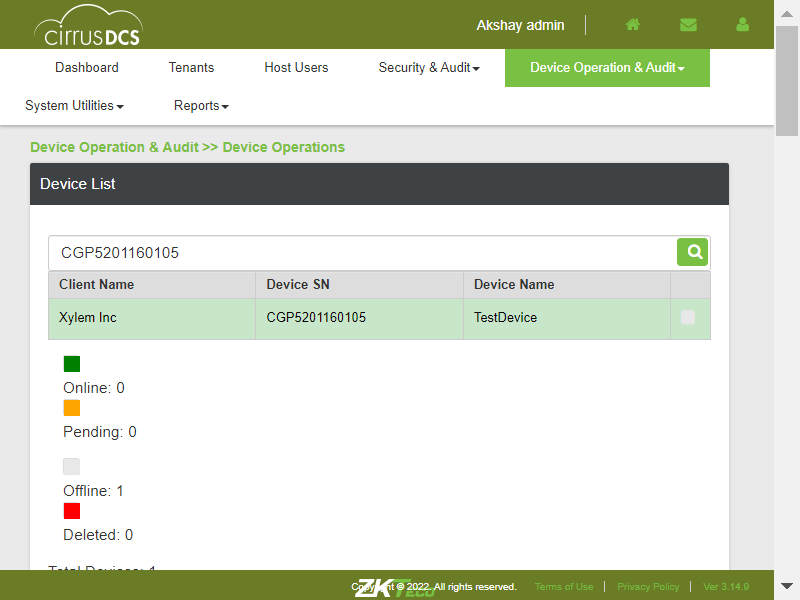TC_17: Verify whether user is able to view the Sent device command in Executed Result Tablecom.zkteco.cirrusdcs.stepDefinitions.CirrusDCS.i_initialize_drivers_for_DCS_automation()Driver InitializedGiven I visit CirrusDCS HostLogin pageGiven I am in HostAdmin home pageWhen I perform mousehower on Device operation & AuditAnd I click on Device Operations sub moduleThen I enter devicesn into search field in hostThen I click on Search IconThen I select the deviceThen I enter command into fieldThen I click on submit buttonThen I validate sent command is displayed in executed result tableTC_18: Verify whether user is able to view the Command Results , based on the Selected Record in the Executed Results tablecom.zkteco.cirrusdcs.stepDefinitions.CirrusDCS.i_initialize_drivers_for_DCS_automation()Driver InitializedGiven I visit CirrusDCS HostLogin pageGiven I am in HostAdmin home pageWhen I perform mousehower on Device operation & AuditAnd I click on Device Operations sub moduleThen I enter devicesn into search field in hostThen I click on Search IconThen I select the deviceThen I enter command into fieldThen I click on submit buttonThen I validate the command results section after selecting the executed commandTC_19: Verify whether user is able to view the device command popup, when clicked on More buttoncom.zkteco.cirrusdcs.stepDefinitions.CirrusDCS.i_initialize_drivers_for_DCS_automation()Driver InitializedGiven I visit CirrusDCS HostLogin pageGiven I am in HostAdmin home pageWhen I perform mousehower on Device operation & AuditAnd I click on Device Operations sub moduleThen I enter devicesn into search field in hostThen I click on Search IconThen I select the deviceThen I enter command into fieldThen I click on submit buttonThen I validate the command results section after selecting the executed commandThen I validate device command popup is displayed for command field more buttonTC_20: Verify whether user is able to view the Command Result popup, when clicked on More buttoncom.zkteco.cirrusdcs.stepDefinitions.CirrusDCS.i_initialize_drivers_for_DCS_automation()Driver InitializedGiven I visit CirrusDCS HostLogin pageGiven I am in HostAdmin home pageWhen I perform mousehower on Device operation & AuditAnd I click on Device Operations sub moduleThen I enter devicesn into search field in hostThen I click on Search IconThen I select the deviceThen I enter command into fieldThen I click on submit buttonThen I validate the command results section after selecting the executed commandThen I validate device command popup is displayed for command Result more buttonTC_21: Verify whether user is able to Refresh the Page, on Click of Refresh buttoncom.zkteco.cirrusdcs.stepDefinitions.CirrusDCS.i_initialize_drivers_for_DCS_automation()Driver InitializedGiven I visit CirrusDCS HostLogin pageGiven I am in HostAdmin home pageWhen I perform mousehower on Device operation & AuditAnd I click on Device Operations sub moduleThen I enter devicesn into search field in hostThen I click on Search IconThen I select the deviceThen I enter command into fieldThen I click on submit buttonThen I click on Refresh button and I validate the page refreshStep skippedcom.zkteco.cirrusdcs.stepDefinitions.CirrusDCS.teardown(io.cucumber.java.Scenario)TC_22: Verify whether user is able to view "Move Device" Pop up on click of Move buttoncom.zkteco.cirrusdcs.stepDefinitions.CirrusDCS.i_initialize_drivers_for_DCS_automation()Driver InitializedGiven I visit CirrusDCS HostLogin pageGiven I am in HostAdmin home pageWhen I perform mousehower on Device operation & AuditAnd I click on Device Operations sub moduleThen I enter devicesn into search field in hostThen I click on Search IconThen I select the deviceThen I click on move device buttonThen I verify move device popup window is displayedTC_23: Verify whether user is able to view "Move Device" Pop up is displayed with below mentioned componentscom.zkteco.cirrusdcs.stepDefinitions.CirrusDCS.i_initialize_drivers_for_DCS_automation()Driver InitializedGiven I visit CirrusDCS HostLogin pageGiven I am in HostAdmin home pageWhen I perform mousehower on Device operation & AuditAnd I click on Device Operations sub moduleThen I enter devicesn into search field in hostThen I click on Search IconThen I select the deviceThen I click on move device buttonThen I verify move device popup window is displayedThen I verify the components in move device popupTC_24: Verify whether user is able to Move the device to the respective selected clientcom.zkteco.cirrusdcs.stepDefinitions.CirrusDCS.i_initialize_drivers_for_DCS_automation()Driver InitializedGiven I visit CirrusDCS HostLogin pageGiven I am in HostAdmin home pageWhen I perform mousehower on Device operation & AuditAnd I click on Device Operations sub moduleThen I enter devicesn into search field in hostThen I click on Search IconThen I select the deviceThen I click on move device buttonThen I move the device to other tenantThen I login to tenant and verify whether device is movedrecord searched successfully with client nameTC_25: Verify whether error message is displayed, when user Move the device to same client againcom.zkteco.cirrusdcs.stepDefinitions.CirrusDCS.i_initialize_drivers_for_DCS_automation()Driver InitializedGiven I visit CirrusDCS HostLogin pageGiven I am in HostAdmin home pageWhen I perform mousehower on Device operation & AuditAnd I click on Device Operations sub moduleThen I enter devicesn into search field in hostThen I click on Search IconThen I select the deviceThen I click on move device buttonThen I move the device to other tenantTC_26: Verify whether error message is displayed, when user Move the device to same client againcom.zkteco.cirrusdcs.stepDefinitions.CirrusDCS.i_initialize_drivers_for_DCS_automation()Driver InitializedGiven I visit CirrusDCS HostLogin pageGiven I am in HostAdmin home pageWhen I perform mousehower on Device operation & AuditAnd I click on Device Operations sub moduleThen I enter devicesn into search field in hostThen I click on Search IconThen I select the deviceThen I click on move device buttonThen I move the device to other tenantThen I login to tenant and verify whether device is movedrecord searched successfully with client nameTC_27: Verify whether user is able to view "Delete Device" Pop up on click of delete buttoncom.zkteco.cirrusdcs.stepDefinitions.CirrusDCS.i_initialize_drivers_for_DCS_automation()Driver InitializedGiven I visit CirrusDCS HostLogin pageGiven I am in HostAdmin home pageWhen I perform mousehower on Device operation & AuditAnd I click on Device Operations sub moduleThen I enter devicesn into search field in hostThen I click on Search IconThen I select the deviceThen I click on Delete buttonThen I verify delete device popup window is displayedTC_27: Verify whether user is able to view "Delete Device" Pop up is displayed with below mentiioned componentscom.zkteco.cirrusdcs.stepDefinitions.CirrusDCS.i_initialize_drivers_for_DCS_automation()Driver InitializedGiven I visit CirrusDCS HostLogin pageGiven I am in HostAdmin home pageWhen I perform mousehower on Device operation & AuditAnd I click on Device Operations sub moduleThen I enter devicesn into search field in hostThen I click on Search IconThen I select the deviceThen I click on Delete buttonThen I verify delete device popup window is displayedThen I verify the components present in the delete device popupTC_29: Verify whether user is able to Delete the devicecom.zkteco.cirrusdcs.stepDefinitions.CirrusDCS.i_initialize_drivers_for_DCS_automation()Driver InitializedGiven I visit CirrusDCS HostLogin pageGiven I am in HostAdmin home pageWhen I perform mousehower on Device operation & AuditAnd I click on Device Operations sub moduleThen I enter devicesn into search field in hostThen I click on Search IconThen I select the deviceThen I click on Delete buttonThen I verify delete device popup window is displayedThen I enter all the details and delete the deviceStep skippedThen I validate deleted device is presentStep skippedcom.zkteco.cirrusdcs.stepDefinitions.CirrusDCS.teardown(io.cucumber.java.Scenario)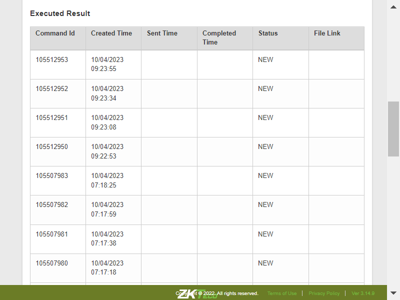TC_29_01: Verify whether User is able to add New device into tenant accountcom.zkteco.cirrusdcs.stepDefinitions.CirrusDCS.i_initialize_drivers_for_DCS_automation()Driver InitializedGiven I visit CirrusDCS HostLogin pageGiven login in to the tenant pageGiven I am in Tenant home pageWhen I perform mousehower on Device managerAnd I click on Device Setup sub moduleThen I click on new device buttonThen I enter the details and add the device after deletionThen I click on Yes buttonThen I validate the success messageThen I enter devicesn into search field for validating device addingThen I click on Search IconThen I validate the whether device is addedTC_30: Verify whether user is able to resubmit the attendance logs to all clockscom.zkteco.cirrusdcs.stepDefinitions.CirrusDCS.i_initialize_drivers_for_DCS_automation()Driver InitializedGiven I visit CirrusDCS HostLogin pageGiven I am in HostAdmin home pageWhen I perform mousehower on Device operation & AuditAnd I click on Device Operations sub moduleThen I enter devicesn into search field in hostThen I click on Search IconThen I select the deviceThen I click on Send Att Resubmit to all clocksThen I click on Yes buttonThen I validate the success messageWhen I perform mousehower on Device operation & AuditStep skippedThen I click on device monitor submoduleStep skippedThen I validate the command is sent to device or notStep skippedcom.zkteco.cirrusdcs.stepDefinitions.CirrusDCS.teardown(io.cucumber.java.Scenario)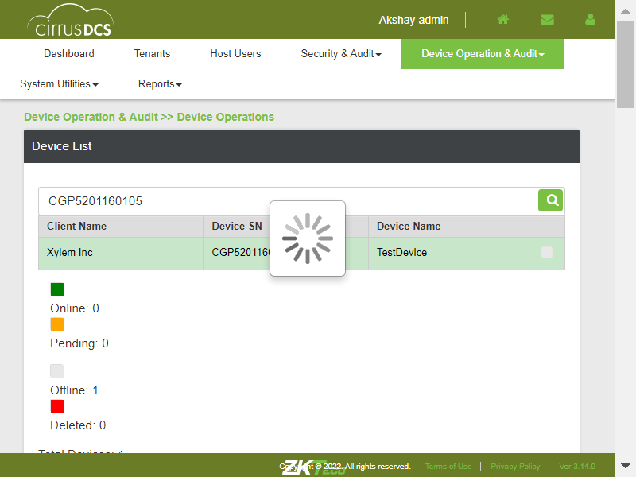TC_31: Verify whether user is able to navigate to device monitor pagecom.zkteco.cirrusdcs.stepDefinitions.CirrusDCS.i_initialize_drivers_for_DCS_automation()Driver InitializedGiven I visit CirrusDCS HostLogin pageGiven I am in HostAdmin home pageWhen I perform mousehower on Device operation & AuditAnd I click on Device Monitor sub moduleThen I validate user navigation to device monitor pageTC_32: Verify whether user is able to view below mentioned sections in device operations pagecom.zkteco.cirrusdcs.stepDefinitions.CirrusDCS.i_initialize_drivers_for_DCS_automation()Driver InitializedGiven I visit CirrusDCS HostLogin pageGiven I am in HostAdmin home pageWhen I perform mousehower on Device operation & AuditAnd I click on Device Monitor sub moduleThen I validate the sections present in the device monitor pageTC_33: Verify whether user is able to view below mentioned components and table in Device List Sectioncom.zkteco.cirrusdcs.stepDefinitions.CirrusDCS.i_initialize_drivers_for_DCS_automation()Driver InitializedGiven I visit CirrusDCS HostLogin pageGiven I am in HostAdmin home pageWhen I perform mousehower on Device operation & AuditAnd I click on Device Monitor sub moduleThen I validate the components present in the device list sectionTC_34: Verify whether user is able to view the List of all devices, that are added irrespective of tenants in Device List Sectioncom.zkteco.cirrusdcs.stepDefinitions.CirrusDCS.i_initialize_drivers_for_DCS_automation()Driver InitializedGiven I visit CirrusDCS HostLogin pageGiven I am in HostAdmin home pageWhen I perform mousehower on Device operation & AuditAnd I click on Device Monitor sub moduleThen I validate whether all the devices are presentTC_35: Verify whether user is able to view the List of all devices, that are added irrespective of tenants in Device List Sectioncom.zkteco.cirrusdcs.stepDefinitions.CirrusDCS.i_initialize_drivers_for_DCS_automation()Driver InitializedGiven I visit CirrusDCS HostLogin pageGiven I am in HostAdmin home pageWhen I perform mousehower on Device operation & AuditAnd I click on Device Monitor sub moduleThen I validate whether all the devices are presentTC_36: Verify whether user is able to search the device based on tenant name search criteriacom.zkteco.cirrusdcs.stepDefinitions.CirrusDCS.i_initialize_drivers_for_DCS_automation()Driver InitializedGiven I visit CirrusDCS HostLogin pageGiven I am in HostAdmin home pageWhen I perform mousehower on Device operation & AuditAnd I click on Device Monitor sub moduleThen I enter tenant name into search fieldThen I click on Search IconThen I validate the search resultsTC_37: Verify whether user is able to search the device based on device sn search criteriacom.zkteco.cirrusdcs.stepDefinitions.CirrusDCS.i_initialize_drivers_for_DCS_automation()Driver InitializedGiven I visit CirrusDCS HostLogin pageGiven I am in HostAdmin home pageWhen I perform mousehower on Device operation & AuditAnd I click on Device Monitor sub moduleThen I enter devicesn into search field in hostThen I click on Search IconThen I validate the search resultsrecord searched successfully with device snTC_38: Verify whether user is able to search the device based on device name search criteriacom.zkteco.cirrusdcs.stepDefinitions.CirrusDCS.i_initialize_drivers_for_DCS_automation()Driver InitializedGiven I visit CirrusDCS HostLogin pageGiven I am in HostAdmin home pageWhen I perform mousehower on Device operation & AuditAnd I click on Device Monitor sub moduleThen I enter devicename into search fieldThen I click on Search IconThen I validate the search resultsTC_39: Verify whether user is able to view the below mentioned columns, after searching the devicecom.zkteco.cirrusdcs.stepDefinitions.CirrusDCS.i_initialize_drivers_for_DCS_automation()Driver InitializedGiven I visit CirrusDCS HostLogin pageGiven I am in HostAdmin home pageWhen I perform mousehower on Device operation & AuditAnd I click on Device Monitor sub moduleThen I enter devicename into search fieldThen I click on Search IconThen I validate columns after search resultsTC_40: Verify whether user is able to Filter the data for online device statuscom.zkteco.cirrusdcs.stepDefinitions.CirrusDCS.i_initialize_drivers_for_DCS_automation()Driver InitializedGiven I visit CirrusDCS HostLogin pageGiven I am in HostAdmin home pageWhen I perform mousehower on Device operation & AuditAnd I click on Device Monitor sub moduleThen I click on online status check boxThen I click on Search IconThen I validate whether all the devices present based on the device statusTC_41: Verify whether user is able to Filter the data for offline device statuscom.zkteco.cirrusdcs.stepDefinitions.CirrusDCS.i_initialize_drivers_for_DCS_automation()Driver InitializedGiven I visit CirrusDCS HostLogin pageGiven I am in HostAdmin home pageWhen I perform mousehower on Device operation & AuditAnd I click on Device Monitor sub moduleThen I click on pending status check boxThen I click on Search IconThen I validate whether all the devices present based on the device statusTC_42: Verify whether user is able to Filter the data for offline device statuscom.zkteco.cirrusdcs.stepDefinitions.CirrusDCS.i_initialize_drivers_for_DCS_automation()Driver InitializedGiven I visit CirrusDCS HostLogin pageGiven I am in HostAdmin home pageWhen I perform mousehower on Device operation & AuditAnd I click on Device Monitor sub moduleThen I click on offline status check boxThen I click on Search IconThen I validate whether all the devices present based on the device statusTC_43: Verify whether user is able to Filter the data for deleted device statuscom.zkteco.cirrusdcs.stepDefinitions.CirrusDCS.i_initialize_drivers_for_DCS_automation()Driver InitializedGiven I visit CirrusDCS HostLogin pageGiven I am in HostAdmin home pageWhen I perform mousehower on Device operation & AuditAnd I click on Device Monitor sub moduleThen I click on deleted status check boxThen I click on Search IconThen I validate whether all the devices present based on the device statusTC_44: Verify whether user is able to Filter the data for all device statuscom.zkteco.cirrusdcs.stepDefinitions.CirrusDCS.i_initialize_drivers_for_DCS_automation()Driver InitializedGiven I visit CirrusDCS HostLogin pageGiven I am in HostAdmin home pageWhen I perform mousehower on Device operation & AuditAnd I click on Device Monitor sub moduleThen I click on all status check boxThen I click on Search IconThen I validate whether all the devices present based on all the device statusTC_45: Verify whether user is able to view below mentioned components and table Componentscom.zkteco.cirrusdcs.stepDefinitions.CirrusDCS.i_initialize_drivers_for_DCS_automation()Driver InitializedGiven I visit CirrusDCS HostLogin pageGiven I am in HostAdmin home pageWhen I perform mousehower on Device operation & AuditAnd I click on Device Monitor sub moduleThen I validate the sections present in the device monitor pageTC_46: Verify whether user is able to view below mentioned components and table in Device Live Log tab Componentscom.zkteco.cirrusdcs.stepDefinitions.CirrusDCS.i_initialize_drivers_for_DCS_automation()Driver InitializedGiven I visit CirrusDCS HostLogin pageGiven I am in HostAdmin home pageWhen I perform mousehower on Device operation & AuditAnd I click on Device Monitor sub moduleThen I validate the components present in the device live log tabTC_47: Verify whether Respective device details are getting auto populated, when device is selectedcom.zkteco.cirrusdcs.stepDefinitions.CirrusDCS.i_initialize_drivers_for_DCS_automation()Driver InitializedGiven I visit CirrusDCS HostLogin pageGiven I am in HostAdmin home pageWhen I perform mousehower on Device operation & AuditAnd I click on Device Monitor sub moduleThen I enter devicesn into search field in hostThen I click on Search IconThen I validate data auto autopopulation based on the selected device in device live log tabTC_48: Verify whether user is able to Auto Refresh the Page, when Auto Refresh switch is oncom.zkteco.cirrusdcs.stepDefinitions.CirrusDCS.i_initialize_drivers_for_DCS_automation()Driver InitializedGiven I visit CirrusDCS HostLogin pageGiven I am in HostAdmin home pageWhen I perform mousehower on Device operation & AuditAnd I click on Device Monitor sub moduleThen I enter devicesn into search field in hostThen I click on Search IconThen I verify auto refresh functionality is workingTC_49: Verify whether user is able to Refresh the Page, on click of Refresh buttoncom.zkteco.cirrusdcs.stepDefinitions.CirrusDCS.i_initialize_drivers_for_DCS_automation()Driver InitializedGiven I visit CirrusDCS HostLogin pageGiven I am in HostAdmin home pageWhen I perform mousehower on Device operation & AuditAnd I click on Device Monitor sub moduleThen I enter devicesn into search field in hostThen I click on Search IconThen I click on Refresh button and I validate the page refreshTC_50: Verify whether user is able to view below mentioned components and table in Message Queue tab Componentscom.zkteco.cirrusdcs.stepDefinitions.CirrusDCS.i_initialize_drivers_for_DCS_automation()Driver InitializedGiven I visit CirrusDCS HostLogin pageGiven I am in HostAdmin home pageWhen I perform mousehower on Device operation & AuditAnd I click on Device Monitor sub moduleThen I click on Message Queue tabThen I enter devicesn into search field in hostThen I click on Search IconThen I validate the components & columns present in the message queue tabTC_51: Verify whether Respective device details are getting auto populated, when device is selectedcom.zkteco.cirrusdcs.stepDefinitions.CirrusDCS.i_initialize_drivers_for_DCS_automation()Driver InitializedGiven I visit CirrusDCS HostLogin pageGiven I am in HostAdmin home pageWhen I perform mousehower on Device operation & AuditAnd I click on Device Monitor sub moduleThen I enter devicesn into search field in hostThen I click on Search IconThen I select the searched deviceThen I click on Message Queue tabThen I validate data auto autopopulation based on the selected device in device live log tabTC_52: Verfiy whether user is able to access the Last forward button and verify that the list of the page is displaying accordinglycom.zkteco.cirrusdcs.stepDefinitions.CirrusDCS.i_initialize_drivers_for_DCS_automation()Driver InitializedGiven I visit CirrusDCS HostLogin pageGiven I am in HostAdmin home pageWhen I perform mousehower on Device operation & AuditAnd I click on Device Monitor sub moduleThen I enter devicesn into search field in hostThen I click on Search IconThen I select the searched deviceThen I click on Message Queue tabThen I Click on the Last Forward Btn andLast Page is displayedTC_53: Verfiy whether user is able to access the firstPage backward button and verify that the list of the page is displaying accordinglycom.zkteco.cirrusdcs.stepDefinitions.CirrusDCS.i_initialize_drivers_for_DCS_automation()Driver InitializedGiven I visit CirrusDCS HostLogin pageGiven I am in HostAdmin home pageWhen I perform mousehower on Device operation & AuditAnd I click on Device Monitor sub moduleThen I enter devicesn into search field in hostThen I click on Search IconThen I select the searched deviceThen I click on Message Queue tabThen I Click on the firstPage backward Btn and first Page is displayedTC_54: Verfiy whether user is able to access the forward button and verify that the list of the page is displaying accordinglycom.zkteco.cirrusdcs.stepDefinitions.CirrusDCS.i_initialize_drivers_for_DCS_automation()Driver InitializedGiven I visit CirrusDCS HostLogin pageGiven I am in HostAdmin home pageWhen I perform mousehower on Device operation & AuditAnd I click on Device Monitor sub moduleThen I enter devicesn into search field in hostThen I click on Search IconThen I select the searched deviceThen I click on Message Queue tabThen I Click on the forward btn and pages displaying accordinglyTC_55: Verfiy whether user is able to access the backword button and verify that the list of the page is displaying accordinglycom.zkteco.cirrusdcs.stepDefinitions.CirrusDCS.i_initialize_drivers_for_DCS_automation()Driver InitializedGiven I visit CirrusDCS HostLogin pageGiven I am in HostAdmin home pageWhen I perform mousehower on Device operation & AuditAnd I click on Device Monitor sub moduleThen I enter devicesn into search field in hostThen I click on Search IconThen I select the searched deviceThen I click on Message Queue tabThen I Click on the backword btn and pages displaying accordinglyTC_56: Verify whether user is able to clean all the commands in the message queue page , on click of Clean Command buttoncom.zkteco.cirrusdcs.stepDefinitions.CirrusDCS.i_initialize_drivers_for_DCS_automation()Driver InitializedGiven I visit CirrusDCS HostLogin pageGiven I am in HostAdmin home pageWhen I perform mousehower on Device operation & AuditAnd I click on Device Monitor sub moduleThen I enter devicesn into search field in hostThen I click on Search IconThen I select the searched deviceThen I click on Message Queue tabThen I click on clean commands button and validate the resultsTC_57: Verify whether user is able to view the Device Requests/commands that are sent in Device Live Logcom.zkteco.cirrusdcs.stepDefinitions.CirrusDCS.i_initialize_drivers_for_DCS_automation()Driver InitializedGiven I visit CirrusDCS HostLogin pageGiven I am in HostAdmin home pageWhen I perform mousehower on Device operation & AuditAnd I click on Device Monitor sub moduleThen I enter devicesn into search field in hostThen I click on Search IconThen I select the searched deviceThen I click on Device Visualization tabThen I click on clean commands button and validate the resultscom.zkteco.cirrusdcs.stepDefinitions.CirrusDCS.teardown(io.cucumber.java.Scenario)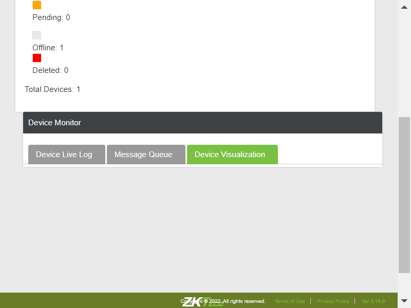TC_58: Verify whether user is able to view the Device Requests/commands that are sent in Device Live Logcom.zkteco.cirrusdcs.stepDefinitions.CirrusDCS.i_initialize_drivers_for_DCS_automation()Driver InitializedGiven I visit CirrusDCS HostLogin pageGiven I am in HostAdmin home pageWhen I perform mousehower on Device operation & AuditAnd I click on Device Operations sub moduleThen I enter devicesn into search field in hostThen I click on Search IconThen I select the deviceThen I enter command into fieldThen I click on submit buttonWhen I perform mousehower on Device operation & AuditAnd I click on Device Monitor sub moduleThen I enter devicesn into search field in hostThen I click on Search IconThen I select the searched deviceThen I verify the sent command from device operation is displayed in device monitor live logTC_59: Verify whether user is able to navigate to device visualization pagecom.zkteco.cirrusdcs.stepDefinitions.CirrusDCS.i_initialize_drivers_for_DCS_automation()Driver InitializedGiven I visit CirrusDCS HostLogin pageGiven I am in HostAdmin home pageWhen I perform mousehower on Device operation & AuditAnd I click on Device Monitor sub moduleThen I click on Device Visualization tabThen I validate the user navigation to device visualization pageTC_60: Verify whether user is able to navigate to device visualization pagecom.zkteco.cirrusdcs.stepDefinitions.CirrusDCS.i_initialize_drivers_for_DCS_automation()Driver InitializedGiven I visit CirrusDCS HostLogin pageGiven I am in HostAdmin home pageWhen I perform mousehower on Device operation & AuditAnd I click on Device Monitor sub moduleThen I click on Device Visualization tabThen I validate the user navigation to device visualization pageTC_61: Verify whether user is able to view the below mentioned components in device visualization pagecom.zkteco.cirrusdcs.stepDefinitions.CirrusDCS.i_initialize_drivers_for_DCS_automation()Driver InitializedGiven I visit CirrusDCS HostLogin pageGiven I am in HostAdmin home pageWhen I perform mousehower on Device operation & AuditAnd I click on Device Monitor sub moduleThen I click on Device Visualization tabThen I validate the components present in device visualization tabTC_62: Verify whether user is able to open Device Heart Beat Visualization by SN popup on click of Heart Beat visualization button with below mentioned componentscom.zkteco.cirrusdcs.stepDefinitions.CirrusDCS.i_initialize_drivers_for_DCS_automation()Driver InitializedGiven I visit CirrusDCS HostLogin pageGiven I am in HostAdmin home pageWhen I perform mousehower on Device operation & AuditAnd I click on Device Monitor sub moduleThen I enter devicesn into search field in hostThen I click on Search IconThen I select the searched deviceThen I click on Message Queue tabThen I click on Device Visualization tabThen I click on heart beat visualization buttonThen I validate the components in device heart beat visualization popupscom.zkteco.cirrusdcs.stepDefinitions.CirrusDCS.teardown(io.cucumber.java.Scenario)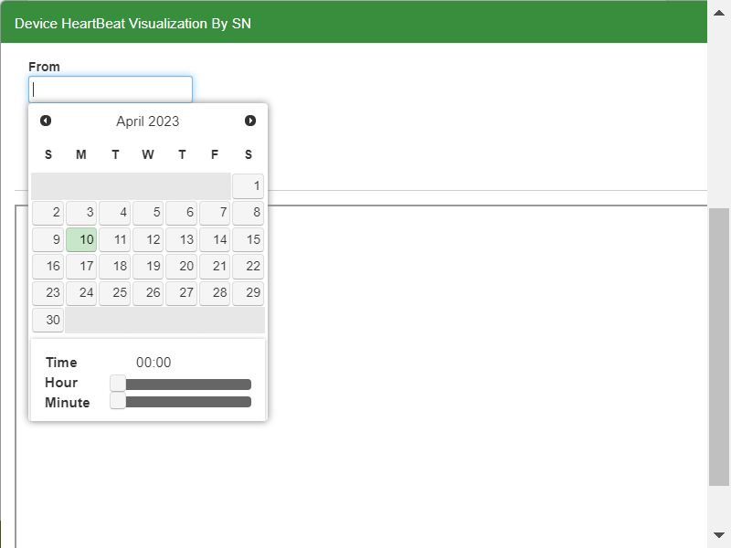TC_63: Verify whether user is able to open Device Attlog Visualization by SN popup on click of Attendance Log Visualization button with below mentioned componentscom.zkteco.cirrusdcs.stepDefinitions.CirrusDCS.i_initialize_drivers_for_DCS_automation()Driver InitializedGiven I visit CirrusDCS HostLogin pageGiven I am in HostAdmin home pageWhen I perform mousehower on Device operation & AuditAnd I click on Device Monitor sub moduleThen I enter devicesn into search field in hostThen I click on Search IconThen I select the searched deviceThen I click on Message Queue tabThen I click on Device Visualization tabThen I click on attendance log visualization buttonThen I validate the components in device att log visualization popupscom.zkteco.cirrusdcs.stepDefinitions.CirrusDCS.teardown(io.cucumber.java.Scenario)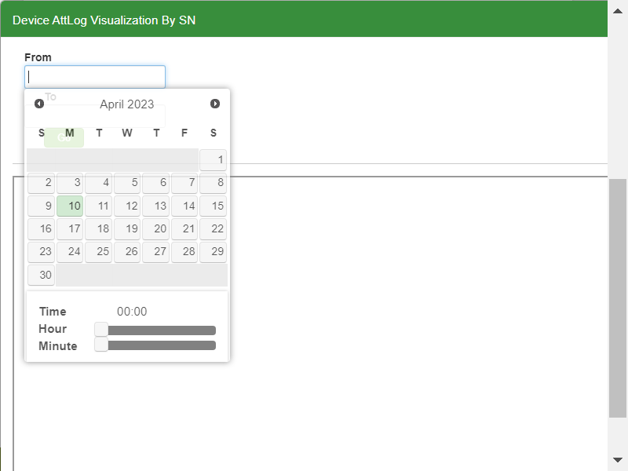TC_64: Verify whether user is able to open Device command Visualization by SN popup on click of Heart Beat visualization buttoncom.zkteco.cirrusdcs.stepDefinitions.CirrusDCS.i_initialize_drivers_for_DCS_automation()Driver InitializedGiven I visit CirrusDCS HostLogin pageGiven I am in HostAdmin home pageWhen I perform mousehower on Device operation & AuditAnd I click on Device Monitor sub moduleThen I enter devicesn into search field in hostThen I click on Search IconThen I select the searched deviceThen I click on Message Queue tabThen I click on Device Visualization tabThen I click on device command visualization buttonThen I validate the components in device command visualization popupscom.zkteco.cirrusdcs.stepDefinitions.CirrusDCS.teardown(io.cucumber.java.Scenario)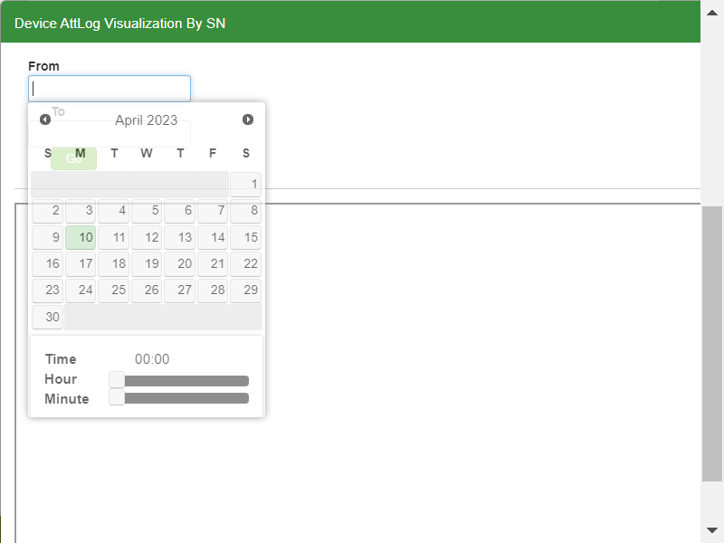TC_65: Verify whether user is able to open Device intial push Visualization by SN popup on click of Heart Beat visualization buttoncom.zkteco.cirrusdcs.stepDefinitions.CirrusDCS.i_initialize_drivers_for_DCS_automation()Driver InitializedGiven I visit CirrusDCS HostLogin pageGiven I am in HostAdmin home pageWhen I perform mousehower on Device operation & AuditAnd I click on Device Monitor sub moduleThen I enter devicesn into search field in hostThen I click on Search IconThen I select the searched deviceThen I click on Message Queue tabThen I click on Device Visualization tabThen I click on intial push visualization buttonThen I validate the components in device intial visualization popupscom.zkteco.cirrusdcs.stepDefinitions.CirrusDCS.teardown(io.cucumber.java.Scenario)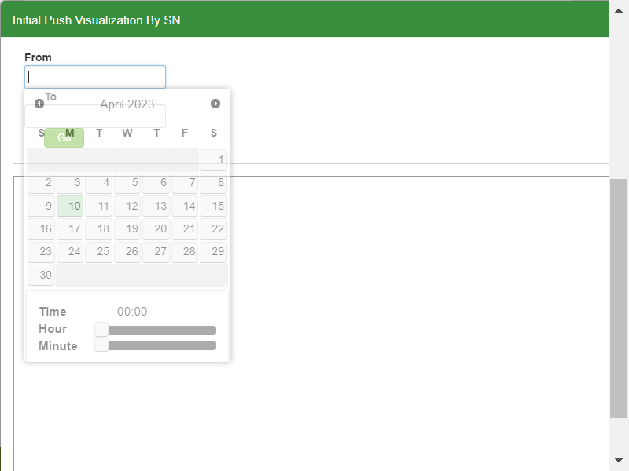TC_66: Verify whether user is able to navigate to Device exception and Audit pagecom.zkteco.cirrusdcs.stepDefinitions.CirrusDCS.i_initialize_drivers_for_DCS_automation()Driver InitializedGiven I visit CirrusDCS HostLogin pageGiven I am in HostAdmin home pageWhen I perform mousehower on Device operation & AuditAnd I click on Device Exception and Audit sub moduleThen I validate user navigation to device exception and audit pageTC_67: Verify whether user is able to view the below mentioned componenetscom.zkteco.cirrusdcs.stepDefinitions.CirrusDCS.i_initialize_drivers_for_DCS_automation()Driver InitializedGiven I visit CirrusDCS HostLogin pageGiven I am in HostAdmin home pageWhen I perform mousehower on Device operation & AuditAnd I click on Device Exception and Audit sub moduleThen I validate the components in device exception tabTC_68: Verify whether user is able to view the below mentioned columns and tablecom.zkteco.cirrusdcs.stepDefinitions.CirrusDCS.i_initialize_drivers_for_DCS_automation()Driver InitializedGiven I visit CirrusDCS HostLogin pageGiven I am in HostAdmin home pageWhen I perform mousehower on Device operation & AuditAnd I click on Device Exception and Audit sub moduleThen I validate the table columns and tableTC_69: Verify whether user is able to Filter the data as per the search criteriacom.zkteco.cirrusdcs.stepDefinitions.CirrusDCS.i_initialize_drivers_for_DCS_automation()Driver InitializedGiven I visit CirrusDCS HostLogin pageGiven I am in HostAdmin home pageWhen I perform mousehower on Device operation & AuditAnd I click on Device Exception and Audit sub moduleThen I click on Device Exception tabThen I enter the date manually without using calendarThen I click on Search buttonTC_70: Verify whether user is able to Filter the data as per the search criteriacom.zkteco.cirrusdcs.stepDefinitions.CirrusDCS.i_initialize_drivers_for_DCS_automation()Driver InitializedGiven I visit CirrusDCS HostLogin pageGiven I am in HostAdmin home pageWhen I perform mousehower on Device operation & AuditAnd I click on Device Exception and Audit sub moduleThen I enter the date manually without using calendarThen I click on Search buttonThen I click on Export as CSV buttonThen I validate the downloaded file for csvTC_71: Verify whether user is able to Filter the data as per the search criteriacom.zkteco.cirrusdcs.stepDefinitions.CirrusDCS.i_initialize_drivers_for_DCS_automation()Driver InitializedGiven I visit CirrusDCS HostLogin pageGiven I am in HostAdmin home pageWhen I perform mousehower on Device operation & AuditAnd I click on Device Exception and Audit sub moduleThen I click on Device Audit tabThen I click on Device Exception tabThen I enter the date manually without using calendarThen I click on Search buttonThen I click on Export as PDF buttonThen I validate the downloaded file for pdfTC_72: Verify whether user is able to Filter the data as per the search criteriacom.zkteco.cirrusdcs.stepDefinitions.CirrusDCS.i_initialize_drivers_for_DCS_automation()Driver InitializedGiven I visit CirrusDCS HostLogin pageGiven I am in HostAdmin home pageWhen I perform mousehower on Device operation & AuditAnd I click on Device Exception and Audit sub moduleThen I enter the date manually without using calendarThen I click on Search buttonThen I click on Export as Excel buttonThen I validate the downloaded file for excelTC_73: Verify whether user is able to view the below mentioned componenetscom.zkteco.cirrusdcs.stepDefinitions.CirrusDCS.i_initialize_drivers_for_DCS_automation()Driver InitializedGiven I visit CirrusDCS HostLogin pageGiven I am in HostAdmin home pageWhen I perform mousehower on Device operation & AuditAnd I click on Device Exception and Audit sub moduleThen I click on Device Audit tabThen I validate the components in device audit tabTC_74: Verify whether user is able to Filter the data as per the search criteriacom.zkteco.cirrusdcs.stepDefinitions.CirrusDCS.i_initialize_drivers_for_DCS_automation()Driver InitializedGiven I visit CirrusDCS HostLogin pageGiven I am in HostAdmin home pageWhen I perform mousehower on Device operation & AuditAnd I click on Device Exception and Audit sub moduleThen I click on Device Audit tabThen I enter the date manually without using calendar in device audit tabThen I click on Search buttonThen I validate the search results in deviceaudittableTC_75: Verify whether user is able to Filter the data as per the search criteriacom.zkteco.cirrusdcs.stepDefinitions.CirrusDCS.i_initialize_drivers_for_DCS_automation()Driver InitializedGiven I visit CirrusDCS HostLogin pageGiven I am in HostAdmin home pageWhen I perform mousehower on Device operation & AuditAnd I click on Device Exception and Audit sub moduleThen I click on Device Audit tabThen I enter the date manually without using calendar in device audit tabThen I click on Search buttonThen I click on Export as CSV buttonThen I validate the downloaded file for csv in deviceaudit pageTC_76: Verify whether user is able to Filter the data as per the search criteriacom.zkteco.cirrusdcs.stepDefinitions.CirrusDCS.i_initialize_drivers_for_DCS_automation()Driver InitializedGiven I visit CirrusDCS HostLogin pageGiven I am in HostAdmin home pageWhen I perform mousehower on Device operation & AuditAnd I click on Device Exception and Audit sub moduleThen I click on Device Audit tabThen I enter the date manually without using calendar in device audit tabThen I click on Search buttonThen I click on Export as PDF buttonThen I validate the downloaded file for pdf in deviceaudit pageTC_77: Verify whether user is able to Filter the data as per the search criteriacom.zkteco.cirrusdcs.stepDefinitions.CirrusDCS.i_initialize_drivers_for_DCS_automation()Driver InitializedGiven I visit CirrusDCS HostLogin pageGiven I am in HostAdmin home pageWhen I perform mousehower on Device operation & AuditAnd I click on Device Exception and Audit sub moduleThen I click on Device Audit tabThen I enter the date manually without using calendar in device audit tabThen I click on Search buttonThen I click on Export as Excel buttonThen I validate the downloaded file for excel in deviceaudit pageTC_78: Verify whether user is able to view the audit data in the device audit page, for the any operations performed in the applicationcom.zkteco.cirrusdcs.stepDefinitions.CirrusDCS.i_initialize_drivers_for_DCS_automation()Driver InitializedGiven I visit CirrusDCS HostLogin pageGiven I am in HostAdmin home pageWhen I perform mousehower on Device operation & AuditAnd I click on Device Operations sub moduleThen I enter devicesn into search field in hostThen I click on Search IconThen I select the deviceThen I click on move device buttonThen I move the device to other tenantWhen I perform mousehower on Device operation & AuditAnd I click on Device Exception and Audit sub moduleThen I click on Device Audit tabThen I enter the date manually without using calendar in device audit tabThen I click on Search buttonThen I validate the search results in deviceaudittable after performing any operationTC_79: Verify whether user is able to navigate to Device Report pagecom.zkteco.cirrusdcs.stepDefinitions.CirrusDCS.i_initialize_drivers_for_DCS_automation()Driver InitializedGiven I visit CirrusDCS HostLogin pageGiven I am in HostAdmin home pageWhen I perform mousehower on Device operation & AuditAnd I click on Device Report sub moduleThen I validate user navigation to device report pageTC_80: Verify whether user is able to view below mentioned sections in device Report pagecom.zkteco.cirrusdcs.stepDefinitions.CirrusDCS.i_initialize_drivers_for_DCS_automation()Driver InitializedGiven I visit CirrusDCS HostLogin pageGiven I am in HostAdmin home pageWhen I perform mousehower on Device operation & AuditAnd I click on Device Report sub moduleThen I validate the sections present in the device report pageTC_81: Verify whether user is able to view below mentioned components in device reports sectioncom.zkteco.cirrusdcs.stepDefinitions.CirrusDCS.i_initialize_drivers_for_DCS_automation()Driver InitializedGiven I visit CirrusDCS HostLogin pageGiven I am in HostAdmin home pageWhen I perform mousehower on Device operation & AuditAnd I click on Device Report sub moduleThen I validate the components in device reports page sectionTC_82: Verify whether user is able to view below mentioned components in device report sectioncom.zkteco.cirrusdcs.stepDefinitions.CirrusDCS.i_initialize_drivers_for_DCS_automation()Driver InitializedGiven I visit CirrusDCS HostLogin pageGiven I am in HostAdmin home pageWhen I perform mousehower on Device operation & AuditAnd I click on Device Report sub moduleThen I validate the components in device report page sectionTC_83: Verify whether user is able to view below mentioned components in device report sectioncom.zkteco.cirrusdcs.stepDefinitions.CirrusDCS.i_initialize_drivers_for_DCS_automation()Driver InitializedGiven I visit CirrusDCS HostLogin pageGiven I am in HostAdmin home pageWhen I perform mousehower on Device operation & AuditAnd I click on Device Report sub moduleThen I validate the table columnscom.zkteco.cirrusdcs.stepDefinitions.CirrusDCS.teardown(io.cucumber.java.Scenario)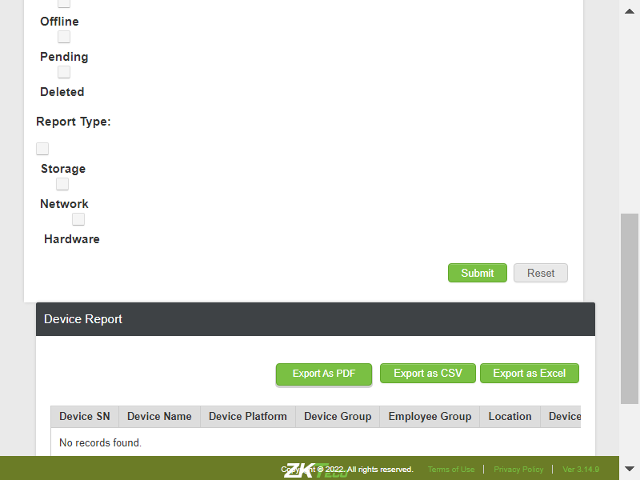TC_84: Verify whether user is able to filter the data by clientcom.zkteco.cirrusdcs.stepDefinitions.CirrusDCS.i_initialize_drivers_for_DCS_automation()Driver InitializedGiven I visit CirrusDCS HostLogin pageGiven I am in HostAdmin home pageWhen I perform mousehower on Device operation & AuditAnd I click on Device Report sub moduleThen I filter the data by clientThen I click on submit buttonThen I validate the search results in reportsTC_85: Verify whether user is able to filter the data by Device Sncom.zkteco.cirrusdcs.stepDefinitions.CirrusDCS.i_initialize_drivers_for_DCS_automation()Driver InitializedGiven I visit CirrusDCS HostLogin pageGiven I am in HostAdmin home pageWhen I perform mousehower on Device operation & AuditAnd I click on Device Report sub moduleThen I filter the data by clientThen I enter devicesn for filtering in reportsThen I click on submit buttonThen I validate the search results in reports for device snTC_86: Verify whether user is able to filter the data by Device namecom.zkteco.cirrusdcs.stepDefinitions.CirrusDCS.i_initialize_drivers_for_DCS_automation()Driver InitializedGiven I visit CirrusDCS HostLogin pageGiven I am in HostAdmin home pageWhen I perform mousehower on Device operation & AuditAnd I click on Device Report sub moduleThen I filter the data by clientThen I enter devicename for filtering in reportsThen I click on submit buttonThen I validate the search results in reports for device nameTC_87: Verify whether user is able to filter the data by locationcom.zkteco.cirrusdcs.stepDefinitions.CirrusDCS.i_initialize_drivers_for_DCS_automation()Driver InitializedGiven I visit CirrusDCS HostLogin pageGiven I am in HostAdmin home pageWhen I perform mousehower on Device operation & AuditAnd I click on Device Report sub moduleThen I filter the data by clientThen I enter location for filtering in reportsThen I click on submit buttonThen I validate the search results in reports for locationsuccessful through device snTC_88: Verify whether user is able to filter the data by device groupcom.zkteco.cirrusdcs.stepDefinitions.CirrusDCS.i_initialize_drivers_for_DCS_automation()Driver InitializedGiven I visit CirrusDCS HostLogin pageGiven I am in HostAdmin home pageWhen I perform mousehower on Device operation & AuditAnd I click on Device Report sub moduleThen I filter the data by clientThen I enter group name for filtering in reportsThen I click on submit buttonThen I validate the search results in reports for devicegroupsuccessful through device snTC_89: Verify whether user is able to filter the data by Device Platformcom.zkteco.cirrusdcs.stepDefinitions.CirrusDCS.i_initialize_drivers_for_DCS_automation()Driver InitializedGiven I visit CirrusDCS HostLogin pageGiven I am in HostAdmin home pageWhen I perform mousehower on Device operation & AuditAnd I click on Device Report sub moduleThen I filter the data by clientThen I enter device platformThen I click on submit buttonThen I validate the search results in reports for platformTC_90: Verify whether user is able to filter online devicescom.zkteco.cirrusdcs.stepDefinitions.CirrusDCS.i_initialize_drivers_for_DCS_automation()Driver InitializedGiven I visit CirrusDCS HostLogin pageGiven I am in HostAdmin home pageWhen I perform mousehower on Device operation & AuditAnd I click on Device Report sub moduleThen I filter the data by clientThen I click on online status check boxThen I click on submit buttonThen I validate the search results for device statussuccessful through device snTC_91: Verify whether user is able to filter offline devicescom.zkteco.cirrusdcs.stepDefinitions.CirrusDCS.i_initialize_drivers_for_DCS_automation()Driver InitializedGiven I visit CirrusDCS HostLogin pageGiven I am in HostAdmin home pageWhen I perform mousehower on Device operation & AuditAnd I click on Device Report sub moduleThen I filter the data by clientThen I click on offline status check box in reportsThen I click on submit buttonThen I validate the search results for device statusTC_92: Verify whether user is able to filter pending devicescom.zkteco.cirrusdcs.stepDefinitions.CirrusDCS.i_initialize_drivers_for_DCS_automation()Driver InitializedGiven I visit CirrusDCS HostLogin pageGiven I am in HostAdmin home pageWhen I perform mousehower on Device operation & AuditAnd I click on Device Report sub moduleThen I filter the data by clientThen I click on pending status check box in reportsThen I click on submit buttonThen I validate the search results for device statusTC_93: Verify whether user is able to filter delete devicescom.zkteco.cirrusdcs.stepDefinitions.CirrusDCS.i_initialize_drivers_for_DCS_automation()Driver InitializedGiven I visit CirrusDCS HostLogin pageGiven I am in HostAdmin home pageWhen I perform mousehower on Device operation & AuditAnd I click on Device Report sub moduleThen I filter the data by clientThen I click on deleted status check boxThen I click on submit buttonThen I validate the search results for device statusTC_94: Verify whether user is able to filter the data by all the Report types Storagecom.zkteco.cirrusdcs.stepDefinitions.CirrusDCS.i_initialize_drivers_for_DCS_automation()Driver InitializedGiven I visit CirrusDCS HostLogin pageGiven I am in HostAdmin home pageWhen I perform mousehower on Device operation & AuditAnd I click on Device Report sub moduleThen I filter the data by clientThen I click on storage status check boxThen I click on submit buttonThen I validate the storage filtersuccessful through device snTC_95: Verify whether user is able to filter the data by all the Report types networkcom.zkteco.cirrusdcs.stepDefinitions.CirrusDCS.i_initialize_drivers_for_DCS_automation()Driver InitializedGiven I visit CirrusDCS HostLogin pageGiven I am in HostAdmin home pageWhen I perform mousehower on Device operation & AuditAnd I click on Device Report sub moduleThen I filter the data by clientThen I click on network status check boxThen I click on submit buttonThen I validate the network filtersuccessful through device snTC_96: Verify whether user is able to filter the data by all the Report types hardwarecom.zkteco.cirrusdcs.stepDefinitions.CirrusDCS.i_initialize_drivers_for_DCS_automation()Driver InitializedGiven I visit CirrusDCS HostLogin pageGiven I am in HostAdmin home pageWhen I perform mousehower on Device operation & AuditAnd I click on Device Report sub moduleThen I filter the data by clientThen I click on hardware status check boxThen I click on submit buttonThen I validate the hardware filtersuccessful through device snTC_97: Verify whether user is able to Reset all the fieldscom.zkteco.cirrusdcs.stepDefinitions.CirrusDCS.i_initialize_drivers_for_DCS_automation()Driver InitializedGiven I visit CirrusDCS HostLogin pageGiven I am in HostAdmin home pageWhen I perform mousehower on Device operation & AuditAnd I click on Device Report sub moduleThen I filter the data by clientThen I enter all filters in reportThen I click on Reset buttonTC_98: Verify whether user is able filter the report by filling all fieldscom.zkteco.cirrusdcs.stepDefinitions.CirrusDCS.i_initialize_drivers_for_DCS_automation()Driver InitializedGiven I visit CirrusDCS HostLogin pageGiven I am in HostAdmin home pageWhen I perform mousehower on Device operation & AuditAnd I click on Device Report sub moduleThen I filter the data by clientThen I enter all filters in reportThen I click on submit buttonThen I validate all the filter results in device reportTC_99: Verify whether user is able to Export the data in csv file formatcom.zkteco.cirrusdcs.stepDefinitions.CirrusDCS.i_initialize_drivers_for_DCS_automation()Driver InitializedGiven I visit CirrusDCS HostLogin pageGiven I am in HostAdmin home pageWhen I perform mousehower on Device operation & AuditAnd I click on Device Report sub moduleThen I filter the data by clientThen I enter all filters in reportThen I click on submit buttonThen I click on export as csv button in device reportThen I validate the downloaded file for csv in device reportTC_100: Verify whether user is able to Export the data in pdf file formatcom.zkteco.cirrusdcs.stepDefinitions.CirrusDCS.i_initialize_drivers_for_DCS_automation()Driver InitializedGiven I visit CirrusDCS HostLogin pageGiven I am in HostAdmin home pageWhen I perform mousehower on Device operation & AuditAnd I click on Device Report sub moduleThen I filter the data by clientThen I enter all filters in reportThen I click on submit buttonThen I click on export as pdf button in device reportThen I click on Yes buttonThen I validate the downloaded file for pdf in device reportTC_101: Verify whether user is able to Export the data in excel file formatcom.zkteco.cirrusdcs.stepDefinitions.CirrusDCS.i_initialize_drivers_for_DCS_automation()Driver InitializedGiven I visit CirrusDCS HostLogin pageGiven I am in HostAdmin home pageWhen I perform mousehower on Device operation & AuditAnd I click on Device Report sub moduleThen I filter the data by clientThen I enter all filters in reportThen I click on submit buttonThen I click on export as excel button in device reportThen I validate the downloaded file for excel in device reportTC_102: Verify whether user is able to filter the data with invalid search criteriacom.zkteco.cirrusdcs.stepDefinitions.CirrusDCS.i_initialize_drivers_for_DCS_automation()Driver InitializedGiven I visit CirrusDCS HostLogin pageGiven I am in HostAdmin home pageWhen I perform mousehower on Device operation & AuditAnd I click on Device Report sub moduleThen I filter the data by clientThen I enter invalid data in filters in reportThen I click on submit buttonThen I validate invalid filter results
TC_04: Verify whether user is able to view the List of all devices, that are added irrespective of tenants in Device List Sectioncom.zkteco.cirrusdcs.stepDefinitions.CirrusDCS.i_initialize_drivers_for_DCS_automation()Driver InitializedGiven I visit CirrusDCS HostLogin pageGiven I am in HostAdmin home pageWhen I perform mousehower on Device operation & AuditAnd I click on Device Operations sub moduleThen I validate whether all the devices are presentTC_05: Verify whether user is able to view the below mentioned Components and Table in Device Remote Operation Advanced Sectioncom.zkteco.cirrusdcs.stepDefinitions.CirrusDCS.i_initialize_drivers_for_DCS_automation()Driver InitializedGiven I visit CirrusDCS HostLogin pageGiven I am in HostAdmin home pageWhen I perform mousehower on Device operation & AuditAnd I click on Device Operations sub moduleThen I validate whether all the components are present in device remote operation advanced sectionTC_06: Verify whether user is able to search the device based on tenant name search criteriacom.zkteco.cirrusdcs.stepDefinitions.CirrusDCS.i_initialize_drivers_for_DCS_automation()Driver InitializedGiven I visit CirrusDCS HostLogin pageGiven I am in HostAdmin home pageWhen I perform mousehower on Device operation & AuditAnd I click on Device Operations sub moduleThen I enter tenant name into search fieldThen I click on Search IconThen I validate the search resultsTC_07: Verify whether user is able to search the device based on device sn search criteriacom.zkteco.cirrusdcs.stepDefinitions.CirrusDCS.i_initialize_drivers_for_DCS_automation()Driver InitializedGiven I visit CirrusDCS HostLogin pageGiven I am in HostAdmin home pageWhen I perform mousehower on Device operation & AuditAnd I click on Device Operations sub moduleThen I enter devicesn into search field in hostThen I click on Search IconThen I validate the search resultsrecord searched successfully with device snTC_08: Verify whether user is able to search the device based on device name search criteriacom.zkteco.cirrusdcs.stepDefinitions.CirrusDCS.i_initialize_drivers_for_DCS_automation()Driver InitializedGiven I visit CirrusDCS HostLogin pageGiven I am in HostAdmin home pageWhen I perform mousehower on Device operation & AuditAnd I click on Device Operations sub moduleThen I enter devicename into search fieldThen I click on Search IconThen I validate the search resultsTC_09: Verify whether user is able to view the below mentioned columns, after searching the devicecom.zkteco.cirrusdcs.stepDefinitions.CirrusDCS.i_initialize_drivers_for_DCS_automation()Driver InitializedGiven I visit CirrusDCS HostLogin pageGiven I am in HostAdmin home pageWhen I perform mousehower on Device operation & AuditAnd I click on Device Operations sub moduleThen I enter devicename into search fieldThen I click on Search IconThen I validate columns after search resultsTC_10: Verify whether user is able to Filter the data for online device statuscom.zkteco.cirrusdcs.stepDefinitions.CirrusDCS.i_initialize_drivers_for_DCS_automation()Driver InitializedGiven I visit CirrusDCS HostLogin pageGiven I am in HostAdmin home pageWhen I perform mousehower on Device operation & AuditAnd I click on Device Operations sub moduleThen I click on online status check boxThen I click on Search IconThen I validate whether all the devices present based on the device statusTC_11: Verify whether user is able to Filter the data for offline device statuscom.zkteco.cirrusdcs.stepDefinitions.CirrusDCS.i_initialize_drivers_for_DCS_automation()Driver InitializedGiven I visit CirrusDCS HostLogin pageGiven I am in HostAdmin home pageWhen I perform mousehower on Device operation & AuditAnd I click on Device Operations sub moduleThen I click on pending status check boxThen I click on Search IconThen I validate whether all the devices present based on the device statusTC_12: Verify whether user is able to Filter the data for offline device statuscom.zkteco.cirrusdcs.stepDefinitions.CirrusDCS.i_initialize_drivers_for_DCS_automation()Driver InitializedGiven I visit CirrusDCS HostLogin pageGiven I am in HostAdmin home pageWhen I perform mousehower on Device operation & AuditAnd I click on Device Operations sub moduleThen I click on offline status check boxThen I click on Search IconThen I validate whether all the devices present based on the device statusTC_13: Verify whether user is able to Filter the data for deleted device statuscom.zkteco.cirrusdcs.stepDefinitions.CirrusDCS.i_initialize_drivers_for_DCS_automation()Driver InitializedGiven I visit CirrusDCS HostLogin pageGiven I am in HostAdmin home pageWhen I perform mousehower on Device operation & AuditAnd I click on Device Operations sub moduleThen I click on deleted status check boxThen I click on Search IconThen I validate whether all the devices present based on the device statusTC_14: Verify whether user is able to Filter the data for all device statuscom.zkteco.cirrusdcs.stepDefinitions.CirrusDCS.i_initialize_drivers_for_DCS_automation()Driver InitializedGiven I visit CirrusDCS HostLogin pageGiven I am in HostAdmin home pageWhen I perform mousehower on Device operation & AuditAnd I click on Device Operations sub moduleThen I click on all status check boxThen I click on Search IconThen I validate whether all the devices present based on all the device statusTC_15: Verify whether Respective device details are getting auto populated, when device is selectedcom.zkteco.cirrusdcs.stepDefinitions.CirrusDCS.i_initialize_drivers_for_DCS_automation()Driver InitializedGiven I visit CirrusDCS HostLogin pageGiven I am in HostAdmin home pageWhen I perform mousehower on Device operation & AuditAnd I click on Device Operations sub moduleThen I enter devicesn into search field in hostThen I click on Search IconThen I validate data auto autopopulation based on the selected deviceTC_16: Verify whether user is able to send command to devicecom.zkteco.cirrusdcs.stepDefinitions.CirrusDCS.i_initialize_drivers_for_DCS_automation()Driver InitializedGiven I visit CirrusDCS HostLogin pageGiven I am in HostAdmin home pageWhen I perform mousehower on Device operation & AuditAnd I click on Device Operations sub moduleThen I enter devicesn into search field in hostThen I click on Search IconThen I select the deviceThen I enter command into fieldThen I click on submit buttonThen I validate the success messagecom.zkteco.cirrusdcs.stepDefinitions.CirrusDCS.teardown(io.cucumber.java.Scenario)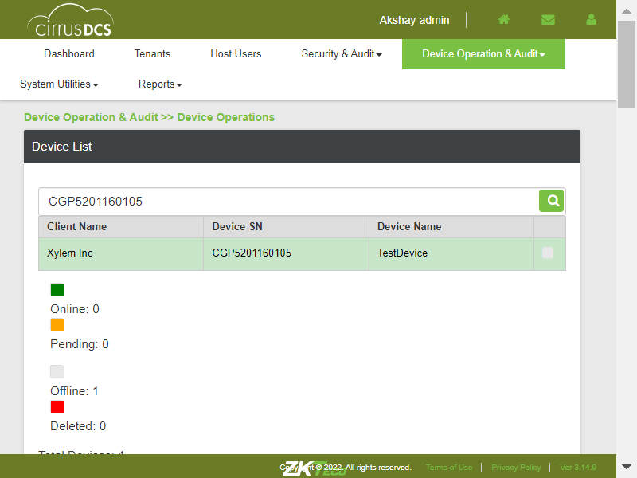TC_17: Verify whether user is able to view the Sent device command in Executed Result Tablecom.zkteco.cirrusdcs.stepDefinitions.CirrusDCS.i_initialize_drivers_for_DCS_automation()Driver InitializedGiven I visit CirrusDCS HostLogin pageGiven I am in HostAdmin home pageWhen I perform mousehower on Device operation & AuditAnd I click on Device Operations sub moduleThen I enter devicesn into search field in hostThen I click on Search IconThen I select the deviceThen I enter command into fieldThen I click on submit buttonThen I validate sent command is displayed in executed result tableTC_18: Verify whether user is able to view the Command Results , based on the Selected Record in the Executed Results tablecom.zkteco.cirrusdcs.stepDefinitions.CirrusDCS.i_initialize_drivers_for_DCS_automation()Driver InitializedGiven I visit CirrusDCS HostLogin pageGiven I am in HostAdmin home pageWhen I perform mousehower on Device operation & AuditAnd I click on Device Operations sub moduleThen I enter devicesn into search field in hostThen I click on Search IconThen I select the deviceThen I enter command into fieldThen I click on submit buttonThen I validate the command results section after selecting the executed commandTC_19: Verify whether user is able to view the device command popup, when clicked on More buttoncom.zkteco.cirrusdcs.stepDefinitions.CirrusDCS.i_initialize_drivers_for_DCS_automation()Driver InitializedGiven I visit CirrusDCS HostLogin pageGiven I am in HostAdmin home pageWhen I perform mousehower on Device operation & AuditAnd I click on Device Operations sub moduleThen I enter devicesn into search field in hostThen I click on Search IconThen I select the deviceThen I enter command into fieldThen I click on submit buttonThen I validate the command results section after selecting the executed commandThen I validate device command popup is displayed for command field more buttonTC_20: Verify whether user is able to view the Command Result popup, when clicked on More buttoncom.zkteco.cirrusdcs.stepDefinitions.CirrusDCS.i_initialize_drivers_for_DCS_automation()Driver InitializedGiven I visit CirrusDCS HostLogin pageGiven I am in HostAdmin home pageWhen I perform mousehower on Device operation & AuditAnd I click on Device Operations sub moduleThen I enter devicesn into search field in hostThen I click on Search IconThen I select the deviceThen I enter command into fieldThen I click on submit buttonThen I validate the command results section after selecting the executed commandThen I validate device command popup is displayed for command Result more buttonTC_21: Verify whether user is able to Refresh the Page, on Click of Refresh buttoncom.zkteco.cirrusdcs.stepDefinitions.CirrusDCS.i_initialize_drivers_for_DCS_automation()Driver InitializedGiven I visit CirrusDCS HostLogin pageGiven I am in HostAdmin home pageWhen I perform mousehower on Device operation & AuditAnd I click on Device Operations sub moduleThen I enter devicesn into search field in hostThen I click on Search IconThen I select the deviceThen I enter command into fieldThen I click on submit buttonThen I click on Refresh button and I validate the page refreshStep skippedcom.zkteco.cirrusdcs.stepDefinitions.CirrusDCS.teardown(io.cucumber.java.Scenario)TC_22: Verify whether user is able to view "Move Device" Pop up on click of Move buttoncom.zkteco.cirrusdcs.stepDefinitions.CirrusDCS.i_initialize_drivers_for_DCS_automation()Driver InitializedGiven I visit CirrusDCS HostLogin pageGiven I am in HostAdmin home pageWhen I perform mousehower on Device operation & AuditAnd I click on Device Operations sub moduleThen I enter devicesn into search field in hostThen I click on Search IconThen I select the deviceThen I click on move device buttonThen I verify move device popup window is displayedTC_23: Verify whether user is able to view "Move Device" Pop up is displayed with below mentioned componentscom.zkteco.cirrusdcs.stepDefinitions.CirrusDCS.i_initialize_drivers_for_DCS_automation()Driver InitializedGiven I visit CirrusDCS HostLogin pageGiven I am in HostAdmin home pageWhen I perform mousehower on Device operation & AuditAnd I click on Device Operations sub moduleThen I enter devicesn into search field in hostThen I click on Search IconThen I select the deviceThen I click on move device buttonThen I verify move device popup window is displayedThen I verify the components in move device popupTC_24: Verify whether user is able to Move the device to the respective selected clientcom.zkteco.cirrusdcs.stepDefinitions.CirrusDCS.i_initialize_drivers_for_DCS_automation()Driver InitializedGiven I visit CirrusDCS HostLogin pageGiven I am in HostAdmin home pageWhen I perform mousehower on Device operation & AuditAnd I click on Device Operations sub moduleThen I enter devicesn into search field in hostThen I click on Search IconThen I select the deviceThen I click on move device buttonThen I move the device to other tenantThen I login to tenant and verify whether device is movedrecord searched successfully with client nameTC_25: Verify whether error message is displayed, when user Move the device to same client againcom.zkteco.cirrusdcs.stepDefinitions.CirrusDCS.i_initialize_drivers_for_DCS_automation()Driver InitializedGiven I visit CirrusDCS HostLogin pageGiven I am in HostAdmin home pageWhen I perform mousehower on Device operation & AuditAnd I click on Device Operations sub moduleThen I enter devicesn into search field in hostThen I click on Search IconThen I select the deviceThen I click on move device buttonThen I move the device to other tenantTC_26: Verify whether error message is displayed, when user Move the device to same client againcom.zkteco.cirrusdcs.stepDefinitions.CirrusDCS.i_initialize_drivers_for_DCS_automation()Driver InitializedGiven I visit CirrusDCS HostLogin pageGiven I am in HostAdmin home pageWhen I perform mousehower on Device operation & AuditAnd I click on Device Operations sub moduleThen I enter devicesn into search field in hostThen I click on Search IconThen I select the deviceThen I click on move device buttonThen I move the device to other tenantThen I login to tenant and verify whether device is movedrecord searched successfully with client nameTC_27: Verify whether user is able to view "Delete Device" Pop up on click of delete buttoncom.zkteco.cirrusdcs.stepDefinitions.CirrusDCS.i_initialize_drivers_for_DCS_automation()Driver InitializedGiven I visit CirrusDCS HostLogin pageGiven I am in HostAdmin home pageWhen I perform mousehower on Device operation & AuditAnd I click on Device Operations sub moduleThen I enter devicesn into search field in hostThen I click on Search IconThen I select the deviceThen I click on Delete buttonThen I verify delete device popup window is displayedTC_27: Verify whether user is able to view "Delete Device" Pop up is displayed with below mentiioned componentscom.zkteco.cirrusdcs.stepDefinitions.CirrusDCS.i_initialize_drivers_for_DCS_automation()Driver InitializedGiven I visit CirrusDCS HostLogin pageGiven I am in HostAdmin home pageWhen I perform mousehower on Device operation & AuditAnd I click on Device Operations sub moduleThen I enter devicesn into search field in hostThen I click on Search IconThen I select the deviceThen I click on Delete buttonThen I verify delete device popup window is displayedThen I verify the components present in the delete device popupTC_29: Verify whether user is able to Delete the devicecom.zkteco.cirrusdcs.stepDefinitions.CirrusDCS.i_initialize_drivers_for_DCS_automation()Driver InitializedGiven I visit CirrusDCS HostLogin pageGiven I am in HostAdmin home pageWhen I perform mousehower on Device operation & AuditAnd I click on Device Operations sub moduleThen I enter devicesn into search field in hostThen I click on Search IconThen I select the deviceThen I click on Delete buttonThen I verify delete device popup window is displayedThen I enter all the details and delete the deviceStep skippedThen I validate deleted device is presentStep skippedcom.zkteco.cirrusdcs.stepDefinitions.CirrusDCS.teardown(io.cucumber.java.Scenario)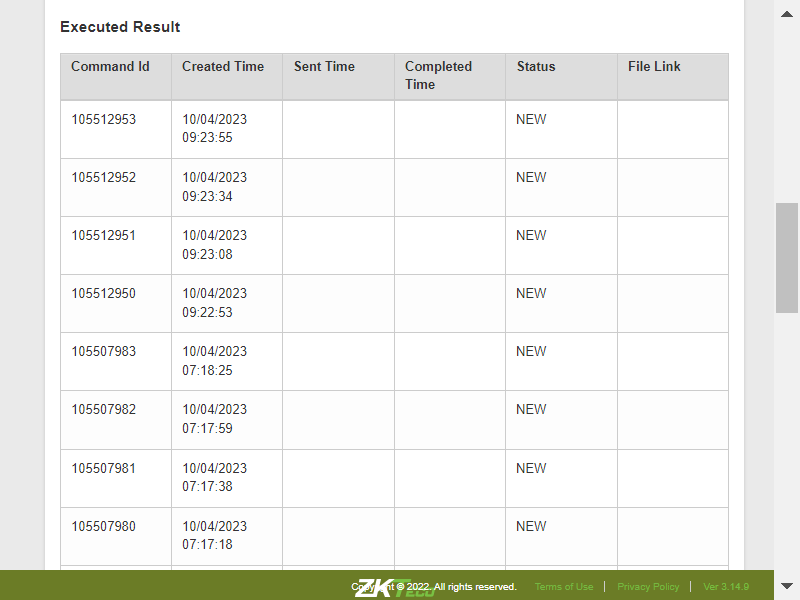TC_29_01: Verify whether User is able to add New device into tenant accountcom.zkteco.cirrusdcs.stepDefinitions.CirrusDCS.i_initialize_drivers_for_DCS_automation()Driver InitializedGiven I visit CirrusDCS HostLogin pageGiven login in to the tenant pageGiven I am in Tenant home pageWhen I perform mousehower on Device managerAnd I click on Device Setup sub moduleThen I click on new device buttonThen I enter the details and add the device after deletionThen I click on Yes buttonThen I validate the success messageThen I enter devicesn into search field for validating device addingThen I click on Search IconThen I validate the whether device is addedTC_30: Verify whether user is able to resubmit the attendance logs to all clockscom.zkteco.cirrusdcs.stepDefinitions.CirrusDCS.i_initialize_drivers_for_DCS_automation()Driver InitializedGiven I visit CirrusDCS HostLogin pageGiven I am in HostAdmin home pageWhen I perform mousehower on Device operation & AuditAnd I click on Device Operations sub moduleThen I enter devicesn into search field in hostThen I click on Search IconThen I select the deviceThen I click on Send Att Resubmit to all clocksThen I click on Yes buttonThen I validate the success messageWhen I perform mousehower on Device operation & AuditStep skippedThen I click on device monitor submoduleStep skippedThen I validate the command is sent to device or notStep skippedcom.zkteco.cirrusdcs.stepDefinitions.CirrusDCS.teardown(io.cucumber.java.Scenario)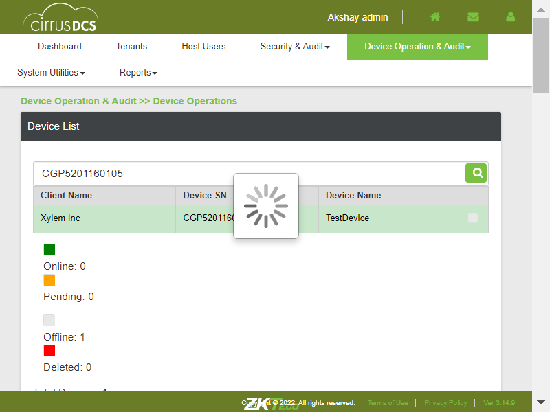TC_31: Verify whether user is able to navigate to device monitor pagecom.zkteco.cirrusdcs.stepDefinitions.CirrusDCS.i_initialize_drivers_for_DCS_automation()Driver InitializedGiven I visit CirrusDCS HostLogin pageGiven I am in HostAdmin home pageWhen I perform mousehower on Device operation & AuditAnd I click on Device Monitor sub moduleThen I validate user navigation to device monitor pageTC_32: Verify whether user is able to view below mentioned sections in device operations pagecom.zkteco.cirrusdcs.stepDefinitions.CirrusDCS.i_initialize_drivers_for_DCS_automation()Driver InitializedGiven I visit CirrusDCS HostLogin pageGiven I am in HostAdmin home pageWhen I perform mousehower on Device operation & AuditAnd I click on Device Monitor sub moduleThen I validate the sections present in the device monitor pageTC_33: Verify whether user is able to view below mentioned components and table in Device List Sectioncom.zkteco.cirrusdcs.stepDefinitions.CirrusDCS.i_initialize_drivers_for_DCS_automation()Driver InitializedGiven I visit CirrusDCS HostLogin pageGiven I am in HostAdmin home pageWhen I perform mousehower on Device operation & AuditAnd I click on Device Monitor sub moduleThen I validate the components present in the device list sectionTC_34: Verify whether user is able to view the List of all devices, that are added irrespective of tenants in Device List Sectioncom.zkteco.cirrusdcs.stepDefinitions.CirrusDCS.i_initialize_drivers_for_DCS_automation()Driver InitializedGiven I visit CirrusDCS HostLogin pageGiven I am in HostAdmin home pageWhen I perform mousehower on Device operation & AuditAnd I click on Device Monitor sub moduleThen I validate whether all the devices are presentTC_35: Verify whether user is able to view the List of all devices, that are added irrespective of tenants in Device List Sectioncom.zkteco.cirrusdcs.stepDefinitions.CirrusDCS.i_initialize_drivers_for_DCS_automation()Driver InitializedGiven I visit CirrusDCS HostLogin pageGiven I am in HostAdmin home pageWhen I perform mousehower on Device operation & AuditAnd I click on Device Monitor sub moduleThen I validate whether all the devices are presentTC_36: Verify whether user is able to search the device based on tenant name search criteriacom.zkteco.cirrusdcs.stepDefinitions.CirrusDCS.i_initialize_drivers_for_DCS_automation()Driver InitializedGiven I visit CirrusDCS HostLogin pageGiven I am in HostAdmin home pageWhen I perform mousehower on Device operation & AuditAnd I click on Device Monitor sub moduleThen I enter tenant name into search fieldThen I click on Search IconThen I validate the search resultsTC_37: Verify whether user is able to search the device based on device sn search criteriacom.zkteco.cirrusdcs.stepDefinitions.CirrusDCS.i_initialize_drivers_for_DCS_automation()Driver InitializedGiven I visit CirrusDCS HostLogin pageGiven I am in HostAdmin home pageWhen I perform mousehower on Device operation & AuditAnd I click on Device Monitor sub moduleThen I enter devicesn into search field in hostThen I click on Search IconThen I validate the search resultsrecord searched successfully with device snTC_38: Verify whether user is able to search the device based on device name search criteriacom.zkteco.cirrusdcs.stepDefinitions.CirrusDCS.i_initialize_drivers_for_DCS_automation()Driver InitializedGiven I visit CirrusDCS HostLogin pageGiven I am in HostAdmin home pageWhen I perform mousehower on Device operation & AuditAnd I click on Device Monitor sub moduleThen I enter devicename into search fieldThen I click on Search IconThen I validate the search resultsTC_39: Verify whether user is able to view the below mentioned columns, after searching the devicecom.zkteco.cirrusdcs.stepDefinitions.CirrusDCS.i_initialize_drivers_for_DCS_automation()Driver InitializedGiven I visit CirrusDCS HostLogin pageGiven I am in HostAdmin home pageWhen I perform mousehower on Device operation & AuditAnd I click on Device Monitor sub moduleThen I enter devicename into search fieldThen I click on Search IconThen I validate columns after search resultsTC_40: Verify whether user is able to Filter the data for online device statuscom.zkteco.cirrusdcs.stepDefinitions.CirrusDCS.i_initialize_drivers_for_DCS_automation()Driver InitializedGiven I visit CirrusDCS HostLogin pageGiven I am in HostAdmin home pageWhen I perform mousehower on Device operation & AuditAnd I click on Device Monitor sub moduleThen I click on online status check boxThen I click on Search IconThen I validate whether all the devices present based on the device statusTC_41: Verify whether user is able to Filter the data for offline device statuscom.zkteco.cirrusdcs.stepDefinitions.CirrusDCS.i_initialize_drivers_for_DCS_automation()Driver InitializedGiven I visit CirrusDCS HostLogin pageGiven I am in HostAdmin home pageWhen I perform mousehower on Device operation & AuditAnd I click on Device Monitor sub moduleThen I click on pending status check boxThen I click on Search IconThen I validate whether all the devices present based on the device statusTC_42: Verify whether user is able to Filter the data for offline device statuscom.zkteco.cirrusdcs.stepDefinitions.CirrusDCS.i_initialize_drivers_for_DCS_automation()Driver InitializedGiven I visit CirrusDCS HostLogin pageGiven I am in HostAdmin home pageWhen I perform mousehower on Device operation & AuditAnd I click on Device Monitor sub moduleThen I click on offline status check boxThen I click on Search IconThen I validate whether all the devices present based on the device statusTC_43: Verify whether user is able to Filter the data for deleted device statuscom.zkteco.cirrusdcs.stepDefinitions.CirrusDCS.i_initialize_drivers_for_DCS_automation()Driver InitializedGiven I visit CirrusDCS HostLogin pageGiven I am in HostAdmin home pageWhen I perform mousehower on Device operation & AuditAnd I click on Device Monitor sub moduleThen I click on deleted status check boxThen I click on Search IconThen I validate whether all the devices present based on the device statusTC_44: Verify whether user is able to Filter the data for all device statuscom.zkteco.cirrusdcs.stepDefinitions.CirrusDCS.i_initialize_drivers_for_DCS_automation()Driver InitializedGiven I visit CirrusDCS HostLogin pageGiven I am in HostAdmin home pageWhen I perform mousehower on Device operation & AuditAnd I click on Device Monitor sub moduleThen I click on all status check boxThen I click on Search IconThen I validate whether all the devices present based on all the device statusTC_45: Verify whether user is able to view below mentioned components and table Componentscom.zkteco.cirrusdcs.stepDefinitions.CirrusDCS.i_initialize_drivers_for_DCS_automation()Driver InitializedGiven I visit CirrusDCS HostLogin pageGiven I am in HostAdmin home pageWhen I perform mousehower on Device operation & AuditAnd I click on Device Monitor sub moduleThen I validate the sections present in the device monitor pageTC_46: Verify whether user is able to view below mentioned components and table in Device Live Log tab Componentscom.zkteco.cirrusdcs.stepDefinitions.CirrusDCS.i_initialize_drivers_for_DCS_automation()Driver InitializedGiven I visit CirrusDCS HostLogin pageGiven I am in HostAdmin home pageWhen I perform mousehower on Device operation & AuditAnd I click on Device Monitor sub moduleThen I validate the components present in the device live log tabTC_47: Verify whether Respective device details are getting auto populated, when device is selectedcom.zkteco.cirrusdcs.stepDefinitions.CirrusDCS.i_initialize_drivers_for_DCS_automation()Driver InitializedGiven I visit CirrusDCS HostLogin pageGiven I am in HostAdmin home pageWhen I perform mousehower on Device operation & AuditAnd I click on Device Monitor sub moduleThen I enter devicesn into search field in hostThen I click on Search IconThen I validate data auto autopopulation based on the selected device in device live log tabTC_48: Verify whether user is able to Auto Refresh the Page, when Auto Refresh switch is oncom.zkteco.cirrusdcs.stepDefinitions.CirrusDCS.i_initialize_drivers_for_DCS_automation()Driver InitializedGiven I visit CirrusDCS HostLogin pageGiven I am in HostAdmin home pageWhen I perform mousehower on Device operation & AuditAnd I click on Device Monitor sub moduleThen I enter devicesn into search field in hostThen I click on Search IconThen I verify auto refresh functionality is workingTC_49: Verify whether user is able to Refresh the Page, on click of Refresh buttoncom.zkteco.cirrusdcs.stepDefinitions.CirrusDCS.i_initialize_drivers_for_DCS_automation()Driver InitializedGiven I visit CirrusDCS HostLogin pageGiven I am in HostAdmin home pageWhen I perform mousehower on Device operation & AuditAnd I click on Device Monitor sub moduleThen I enter devicesn into search field in hostThen I click on Search IconThen I click on Refresh button and I validate the page refreshTC_50: Verify whether user is able to view below mentioned components and table in Message Queue tab Componentscom.zkteco.cirrusdcs.stepDefinitions.CirrusDCS.i_initialize_drivers_for_DCS_automation()Driver InitializedGiven I visit CirrusDCS HostLogin pageGiven I am in HostAdmin home pageWhen I perform mousehower on Device operation & AuditAnd I click on Device Monitor sub moduleThen I click on Message Queue tabThen I enter devicesn into search field in hostThen I click on Search IconThen I validate the components & columns present in the message queue tabTC_51: Verify whether Respective device details are getting auto populated, when device is selectedcom.zkteco.cirrusdcs.stepDefinitions.CirrusDCS.i_initialize_drivers_for_DCS_automation()Driver InitializedGiven I visit CirrusDCS HostLogin pageGiven I am in HostAdmin home pageWhen I perform mousehower on Device operation & AuditAnd I click on Device Monitor sub moduleThen I enter devicesn into search field in hostThen I click on Search IconThen I select the searched deviceThen I click on Message Queue tabThen I validate data auto autopopulation based on the selected device in device live log tabTC_52: Verfiy whether user is able to access the Last forward button and verify that the list of the page is displaying accordinglycom.zkteco.cirrusdcs.stepDefinitions.CirrusDCS.i_initialize_drivers_for_DCS_automation()Driver InitializedGiven I visit CirrusDCS HostLogin pageGiven I am in HostAdmin home pageWhen I perform mousehower on Device operation & AuditAnd I click on Device Monitor sub moduleThen I enter devicesn into search field in hostThen I click on Search IconThen I select the searched deviceThen I click on Message Queue tabThen I Click on the Last Forward Btn andLast Page is displayedTC_53: Verfiy whether user is able to access the firstPage backward button and verify that the list of the page is displaying accordinglycom.zkteco.cirrusdcs.stepDefinitions.CirrusDCS.i_initialize_drivers_for_DCS_automation()Driver InitializedGiven I visit CirrusDCS HostLogin pageGiven I am in HostAdmin home pageWhen I perform mousehower on Device operation & AuditAnd I click on Device Monitor sub moduleThen I enter devicesn into search field in hostThen I click on Search IconThen I select the searched deviceThen I click on Message Queue tabThen I Click on the firstPage backward Btn and first Page is displayedTC_54: Verfiy whether user is able to access the forward button and verify that the list of the page is displaying accordinglycom.zkteco.cirrusdcs.stepDefinitions.CirrusDCS.i_initialize_drivers_for_DCS_automation()Driver InitializedGiven I visit CirrusDCS HostLogin pageGiven I am in HostAdmin home pageWhen I perform mousehower on Device operation & AuditAnd I click on Device Monitor sub moduleThen I enter devicesn into search field in hostThen I click on Search IconThen I select the searched deviceThen I click on Message Queue tabThen I Click on the forward btn and pages displaying accordinglyTC_55: Verfiy whether user is able to access the backword button and verify that the list of the page is displaying accordinglycom.zkteco.cirrusdcs.stepDefinitions.CirrusDCS.i_initialize_drivers_for_DCS_automation()Driver InitializedGiven I visit CirrusDCS HostLogin pageGiven I am in HostAdmin home pageWhen I perform mousehower on Device operation & AuditAnd I click on Device Monitor sub moduleThen I enter devicesn into search field in hostThen I click on Search IconThen I select the searched deviceThen I click on Message Queue tabThen I Click on the backword btn and pages displaying accordinglyTC_56: Verify whether user is able to clean all the commands in the message queue page , on click of Clean Command buttoncom.zkteco.cirrusdcs.stepDefinitions.CirrusDCS.i_initialize_drivers_for_DCS_automation()Driver InitializedGiven I visit CirrusDCS HostLogin pageGiven I am in HostAdmin home pageWhen I perform mousehower on Device operation & AuditAnd I click on Device Monitor sub moduleThen I enter devicesn into search field in hostThen I click on Search IconThen I select the searched deviceThen I click on Message Queue tabThen I click on clean commands button and validate the resultsTC_57: Verify whether user is able to view the Device Requests/commands that are sent in Device Live Logcom.zkteco.cirrusdcs.stepDefinitions.CirrusDCS.i_initialize_drivers_for_DCS_automation()Driver InitializedGiven I visit CirrusDCS HostLogin pageGiven I am in HostAdmin home pageWhen I perform mousehower on Device operation & AuditAnd I click on Device Monitor sub moduleThen I enter devicesn into search field in hostThen I click on Search IconThen I select the searched deviceThen I click on Device Visualization tabThen I click on clean commands button and validate the resultscom.zkteco.cirrusdcs.stepDefinitions.CirrusDCS.teardown(io.cucumber.java.Scenario)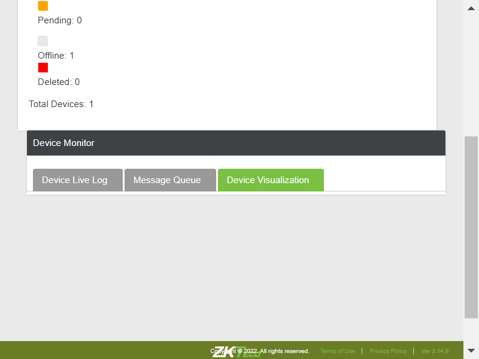TC_58: Verify whether user is able to view the Device Requests/commands that are sent in Device Live Logcom.zkteco.cirrusdcs.stepDefinitions.CirrusDCS.i_initialize_drivers_for_DCS_automation()Driver InitializedGiven I visit CirrusDCS HostLogin pageGiven I am in HostAdmin home pageWhen I perform mousehower on Device operation & AuditAnd I click on Device Operations sub moduleThen I enter devicesn into search field in hostThen I click on Search IconThen I select the deviceThen I enter command into fieldThen I click on submit buttonWhen I perform mousehower on Device operation & AuditAnd I click on Device Monitor sub moduleThen I enter devicesn into search field in hostThen I click on Search IconThen I select the searched deviceThen I verify the sent command from device operation is displayed in device monitor live logTC_59: Verify whether user is able to navigate to device visualization pagecom.zkteco.cirrusdcs.stepDefinitions.CirrusDCS.i_initialize_drivers_for_DCS_automation()Driver InitializedGiven I visit CirrusDCS HostLogin pageGiven I am in HostAdmin home pageWhen I perform mousehower on Device operation & AuditAnd I click on Device Monitor sub moduleThen I click on Device Visualization tabThen I validate the user navigation to device visualization pageTC_60: Verify whether user is able to navigate to device visualization pagecom.zkteco.cirrusdcs.stepDefinitions.CirrusDCS.i_initialize_drivers_for_DCS_automation()Driver InitializedGiven I visit CirrusDCS HostLogin pageGiven I am in HostAdmin home pageWhen I perform mousehower on Device operation & AuditAnd I click on Device Monitor sub moduleThen I click on Device Visualization tabThen I validate the user navigation to device visualization pageTC_61: Verify whether user is able to view the below mentioned components in device visualization pagecom.zkteco.cirrusdcs.stepDefinitions.CirrusDCS.i_initialize_drivers_for_DCS_automation()Driver InitializedGiven I visit CirrusDCS HostLogin pageGiven I am in HostAdmin home pageWhen I perform mousehower on Device operation & AuditAnd I click on Device Monitor sub moduleThen I click on Device Visualization tabThen I validate the components present in device visualization tabTC_62: Verify whether user is able to open Device Heart Beat Visualization by SN popup on click of Heart Beat visualization button with below mentioned componentscom.zkteco.cirrusdcs.stepDefinitions.CirrusDCS.i_initialize_drivers_for_DCS_automation()Driver InitializedGiven I visit CirrusDCS HostLogin pageGiven I am in HostAdmin home pageWhen I perform mousehower on Device operation & AuditAnd I click on Device Monitor sub moduleThen I enter devicesn into search field in hostThen I click on Search IconThen I select the searched deviceThen I click on Message Queue tabThen I click on Device Visualization tabThen I click on heart beat visualization buttonThen I validate the components in device heart beat visualization popupscom.zkteco.cirrusdcs.stepDefinitions.CirrusDCS.teardown(io.cucumber.java.Scenario)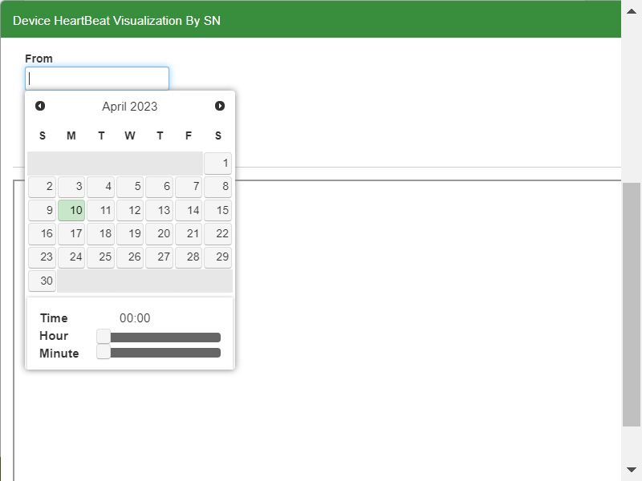TC_63: Verify whether user is able to open Device Attlog Visualization by SN popup on click of Attendance Log Visualization button with below mentioned componentscom.zkteco.cirrusdcs.stepDefinitions.CirrusDCS.i_initialize_drivers_for_DCS_automation()Driver InitializedGiven I visit CirrusDCS HostLogin pageGiven I am in HostAdmin home pageWhen I perform mousehower on Device operation & AuditAnd I click on Device Monitor sub moduleThen I enter devicesn into search field in hostThen I click on Search IconThen I select the searched deviceThen I click on Message Queue tabThen I click on Device Visualization tabThen I click on attendance log visualization buttonThen I validate the components in device att log visualization popupscom.zkteco.cirrusdcs.stepDefinitions.CirrusDCS.teardown(io.cucumber.java.Scenario)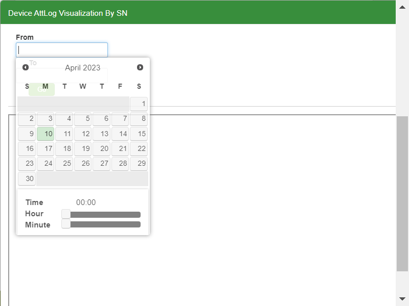TC_64: Verify whether user is able to open Device command Visualization by SN popup on click of Heart Beat visualization buttoncom.zkteco.cirrusdcs.stepDefinitions.CirrusDCS.i_initialize_drivers_for_DCS_automation()Driver InitializedGiven I visit CirrusDCS HostLogin pageGiven I am in HostAdmin home pageWhen I perform mousehower on Device operation & AuditAnd I click on Device Monitor sub moduleThen I enter devicesn into search field in hostThen I click on Search IconThen I select the searched deviceThen I click on Message Queue tabThen I click on Device Visualization tabThen I click on device command visualization buttonThen I validate the components in device command visualization popupscom.zkteco.cirrusdcs.stepDefinitions.CirrusDCS.teardown(io.cucumber.java.Scenario)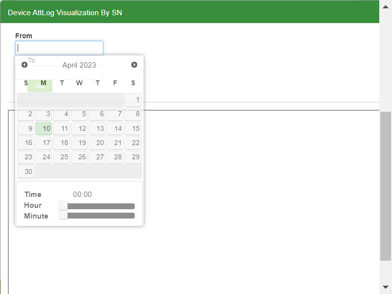TC_65: Verify whether user is able to open Device intial push Visualization by SN popup on click of Heart Beat visualization buttoncom.zkteco.cirrusdcs.stepDefinitions.CirrusDCS.i_initialize_drivers_for_DCS_automation()Driver InitializedGiven I visit CirrusDCS HostLogin pageGiven I am in HostAdmin home pageWhen I perform mousehower on Device operation & AuditAnd I click on Device Monitor sub moduleThen I enter devicesn into search field in hostThen I click on Search IconThen I select the searched deviceThen I click on Message Queue tabThen I click on Device Visualization tabThen I click on intial push visualization buttonThen I validate the components in device intial visualization popupscom.zkteco.cirrusdcs.stepDefinitions.CirrusDCS.teardown(io.cucumber.java.Scenario)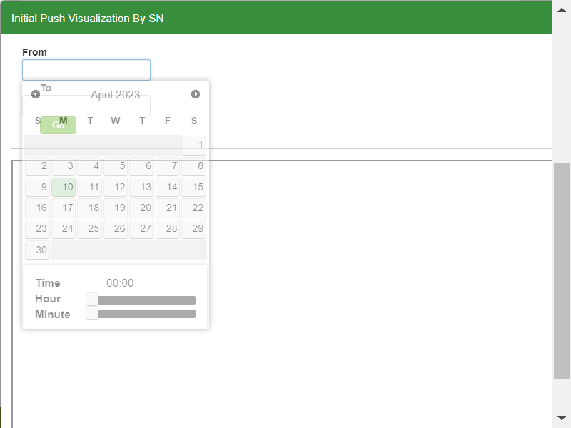TC_66: Verify whether user is able to navigate to Device exception and Audit pagecom.zkteco.cirrusdcs.stepDefinitions.CirrusDCS.i_initialize_drivers_for_DCS_automation()Driver InitializedGiven I visit CirrusDCS HostLogin pageGiven I am in HostAdmin home pageWhen I perform mousehower on Device operation & AuditAnd I click on Device Exception and Audit sub moduleThen I validate user navigation to device exception and audit pageTC_67: Verify whether user is able to view the below mentioned componenetscom.zkteco.cirrusdcs.stepDefinitions.CirrusDCS.i_initialize_drivers_for_DCS_automation()Driver InitializedGiven I visit CirrusDCS HostLogin pageGiven I am in HostAdmin home pageWhen I perform mousehower on Device operation & AuditAnd I click on Device Exception and Audit sub moduleThen I validate the components in device exception tabTC_68: Verify whether user is able to view the below mentioned columns and tablecom.zkteco.cirrusdcs.stepDefinitions.CirrusDCS.i_initialize_drivers_for_DCS_automation()Driver InitializedGiven I visit CirrusDCS HostLogin pageGiven I am in HostAdmin home pageWhen I perform mousehower on Device operation & AuditAnd I click on Device Exception and Audit sub moduleThen I validate the table columns and tableTC_69: Verify whether user is able to Filter the data as per the search criteriacom.zkteco.cirrusdcs.stepDefinitions.CirrusDCS.i_initialize_drivers_for_DCS_automation()Driver InitializedGiven I visit CirrusDCS HostLogin pageGiven I am in HostAdmin home pageWhen I perform mousehower on Device operation & AuditAnd I click on Device Exception and Audit sub moduleThen I click on Device Exception tabThen I enter the date manually without using calendarThen I click on Search buttonTC_70: Verify whether user is able to Filter the data as per the search criteriacom.zkteco.cirrusdcs.stepDefinitions.CirrusDCS.i_initialize_drivers_for_DCS_automation()Driver InitializedGiven I visit CirrusDCS HostLogin pageGiven I am in HostAdmin home pageWhen I perform mousehower on Device operation & AuditAnd I click on Device Exception and Audit sub moduleThen I enter the date manually without using calendarThen I click on Search buttonThen I click on Export as CSV buttonThen I validate the downloaded file for csvTC_71: Verify whether user is able to Filter the data as per the search criteriacom.zkteco.cirrusdcs.stepDefinitions.CirrusDCS.i_initialize_drivers_for_DCS_automation()Driver InitializedGiven I visit CirrusDCS HostLogin pageGiven I am in HostAdmin home pageWhen I perform mousehower on Device operation & AuditAnd I click on Device Exception and Audit sub moduleThen I click on Device Audit tabThen I click on Device Exception tabThen I enter the date manually without using calendarThen I click on Search buttonThen I click on Export as PDF buttonThen I validate the downloaded file for pdfTC_72: Verify whether user is able to Filter the data as per the search criteriacom.zkteco.cirrusdcs.stepDefinitions.CirrusDCS.i_initialize_drivers_for_DCS_automation()Driver InitializedGiven I visit CirrusDCS HostLogin pageGiven I am in HostAdmin home pageWhen I perform mousehower on Device operation & AuditAnd I click on Device Exception and Audit sub moduleThen I enter the date manually without using calendarThen I click on Search buttonThen I click on Export as Excel buttonThen I validate the downloaded file for excelTC_73: Verify whether user is able to view the below mentioned componenetscom.zkteco.cirrusdcs.stepDefinitions.CirrusDCS.i_initialize_drivers_for_DCS_automation()Driver InitializedGiven I visit CirrusDCS HostLogin pageGiven I am in HostAdmin home pageWhen I perform mousehower on Device operation & AuditAnd I click on Device Exception and Audit sub moduleThen I click on Device Audit tabThen I validate the components in device audit tabTC_74: Verify whether user is able to Filter the data as per the search criteriacom.zkteco.cirrusdcs.stepDefinitions.CirrusDCS.i_initialize_drivers_for_DCS_automation()Driver InitializedGiven I visit CirrusDCS HostLogin pageGiven I am in HostAdmin home pageWhen I perform mousehower on Device operation & AuditAnd I click on Device Exception and Audit sub moduleThen I click on Device Audit tabThen I enter the date manually without using calendar in device audit tabThen I click on Search buttonThen I validate the search results in deviceaudittableTC_75: Verify whether user is able to Filter the data as per the search criteriacom.zkteco.cirrusdcs.stepDefinitions.CirrusDCS.i_initialize_drivers_for_DCS_automation()Driver InitializedGiven I visit CirrusDCS HostLogin pageGiven I am in HostAdmin home pageWhen I perform mousehower on Device operation & AuditAnd I click on Device Exception and Audit sub moduleThen I click on Device Audit tabThen I enter the date manually without using calendar in device audit tabThen I click on Search buttonThen I click on Export as CSV buttonThen I validate the downloaded file for csv in deviceaudit pageTC_76: Verify whether user is able to Filter the data as per the search criteriacom.zkteco.cirrusdcs.stepDefinitions.CirrusDCS.i_initialize_drivers_for_DCS_automation()Driver InitializedGiven I visit CirrusDCS HostLogin pageGiven I am in HostAdmin home pageWhen I perform mousehower on Device operation & AuditAnd I click on Device Exception and Audit sub moduleThen I click on Device Audit tabThen I enter the date manually without using calendar in device audit tabThen I click on Search buttonThen I click on Export as PDF buttonThen I validate the downloaded file for pdf in deviceaudit pageTC_77: Verify whether user is able to Filter the data as per the search criteriacom.zkteco.cirrusdcs.stepDefinitions.CirrusDCS.i_initialize_drivers_for_DCS_automation()Driver InitializedGiven I visit CirrusDCS HostLogin pageGiven I am in HostAdmin home pageWhen I perform mousehower on Device operation & AuditAnd I click on Device Exception and Audit sub moduleThen I click on Device Audit tabThen I enter the date manually without using calendar in device audit tabThen I click on Search buttonThen I click on Export as Excel buttonThen I validate the downloaded file for excel in deviceaudit pageTC_78: Verify whether user is able to view the audit data in the device audit page, for the any operations performed in the applicationcom.zkteco.cirrusdcs.stepDefinitions.CirrusDCS.i_initialize_drivers_for_DCS_automation()Driver InitializedGiven I visit CirrusDCS HostLogin pageGiven I am in HostAdmin home pageWhen I perform mousehower on Device operation & AuditAnd I click on Device Operations sub moduleThen I enter devicesn into search field in hostThen I click on Search IconThen I select the deviceThen I click on move device buttonThen I move the device to other tenantWhen I perform mousehower on Device operation & AuditAnd I click on Device Exception and Audit sub moduleThen I click on Device Audit tabThen I enter the date manually without using calendar in device audit tabThen I click on Search buttonThen I validate the search results in deviceaudittable after performing any operationTC_79: Verify whether user is able to navigate to Device Report pagecom.zkteco.cirrusdcs.stepDefinitions.CirrusDCS.i_initialize_drivers_for_DCS_automation()Driver InitializedGiven I visit CirrusDCS HostLogin pageGiven I am in HostAdmin home pageWhen I perform mousehower on Device operation & AuditAnd I click on Device Report sub moduleThen I validate user navigation to device report pageTC_80: Verify whether user is able to view below mentioned sections in device Report pagecom.zkteco.cirrusdcs.stepDefinitions.CirrusDCS.i_initialize_drivers_for_DCS_automation()Driver InitializedGiven I visit CirrusDCS HostLogin pageGiven I am in HostAdmin home pageWhen I perform mousehower on Device operation & AuditAnd I click on Device Report sub moduleThen I validate the sections present in the device report pageTC_81: Verify whether user is able to view below mentioned components in device reports sectioncom.zkteco.cirrusdcs.stepDefinitions.CirrusDCS.i_initialize_drivers_for_DCS_automation()Driver InitializedGiven I visit CirrusDCS HostLogin pageGiven I am in HostAdmin home pageWhen I perform mousehower on Device operation & AuditAnd I click on Device Report sub moduleThen I validate the components in device reports page sectionTC_82: Verify whether user is able to view below mentioned components in device report sectioncom.zkteco.cirrusdcs.stepDefinitions.CirrusDCS.i_initialize_drivers_for_DCS_automation()Driver InitializedGiven I visit CirrusDCS HostLogin pageGiven I am in HostAdmin home pageWhen I perform mousehower on Device operation & AuditAnd I click on Device Report sub moduleThen I validate the components in device report page sectionTC_83: Verify whether user is able to view below mentioned components in device report sectioncom.zkteco.cirrusdcs.stepDefinitions.CirrusDCS.i_initialize_drivers_for_DCS_automation()Driver InitializedGiven I visit CirrusDCS HostLogin pageGiven I am in HostAdmin home pageWhen I perform mousehower on Device operation & AuditAnd I click on Device Report sub moduleThen I validate the table columnscom.zkteco.cirrusdcs.stepDefinitions.CirrusDCS.teardown(io.cucumber.java.Scenario)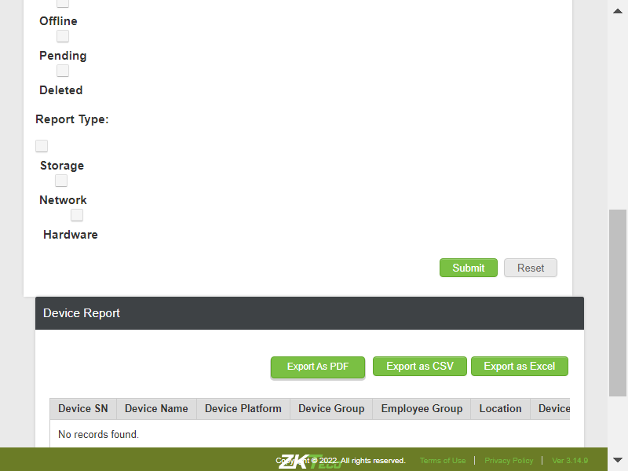TC_84: Verify whether user is able to filter the data by clientcom.zkteco.cirrusdcs.stepDefinitions.CirrusDCS.i_initialize_drivers_for_DCS_automation()Driver InitializedGiven I visit CirrusDCS HostLogin pageGiven I am in HostAdmin home pageWhen I perform mousehower on Device operation & AuditAnd I click on Device Report sub moduleThen I filter the data by clientThen I click on submit buttonThen I validate the search results in reportsTC_85: Verify whether user is able to filter the data by Device Sncom.zkteco.cirrusdcs.stepDefinitions.CirrusDCS.i_initialize_drivers_for_DCS_automation()Driver InitializedGiven I visit CirrusDCS HostLogin pageGiven I am in HostAdmin home pageWhen I perform mousehower on Device operation & AuditAnd I click on Device Report sub moduleThen I filter the data by clientThen I enter devicesn for filtering in reportsThen I click on submit buttonThen I validate the search results in reports for device snTC_86: Verify whether user is able to filter the data by Device namecom.zkteco.cirrusdcs.stepDefinitions.CirrusDCS.i_initialize_drivers_for_DCS_automation()Driver InitializedGiven I visit CirrusDCS HostLogin pageGiven I am in HostAdmin home pageWhen I perform mousehower on Device operation & AuditAnd I click on Device Report sub moduleThen I filter the data by clientThen I enter devicename for filtering in reportsThen I click on submit buttonThen I validate the search results in reports for device nameTC_87: Verify whether user is able to filter the data by locationcom.zkteco.cirrusdcs.stepDefinitions.CirrusDCS.i_initialize_drivers_for_DCS_automation()Driver InitializedGiven I visit CirrusDCS HostLogin pageGiven I am in HostAdmin home pageWhen I perform mousehower on Device operation & AuditAnd I click on Device Report sub moduleThen I filter the data by clientThen I enter location for filtering in reportsThen I click on submit buttonThen I validate the search results in reports for locationsuccessful through device snTC_88: Verify whether user is able to filter the data by device groupcom.zkteco.cirrusdcs.stepDefinitions.CirrusDCS.i_initialize_drivers_for_DCS_automation()Driver InitializedGiven I visit CirrusDCS HostLogin pageGiven I am in HostAdmin home pageWhen I perform mousehower on Device operation & AuditAnd I click on Device Report sub moduleThen I filter the data by clientThen I enter group name for filtering in reportsThen I click on submit buttonThen I validate the search results in reports for devicegroupsuccessful through device snTC_89: Verify whether user is able to filter the data by Device Platformcom.zkteco.cirrusdcs.stepDefinitions.CirrusDCS.i_initialize_drivers_for_DCS_automation()Driver InitializedGiven I visit CirrusDCS HostLogin pageGiven I am in HostAdmin home pageWhen I perform mousehower on Device operation & AuditAnd I click on Device Report sub moduleThen I filter the data by clientThen I enter device platformThen I click on submit buttonThen I validate the search results in reports for platformTC_90: Verify whether user is able to filter online devicescom.zkteco.cirrusdcs.stepDefinitions.CirrusDCS.i_initialize_drivers_for_DCS_automation()Driver InitializedGiven I visit CirrusDCS HostLogin pageGiven I am in HostAdmin home pageWhen I perform mousehower on Device operation & AuditAnd I click on Device Report sub moduleThen I filter the data by clientThen I click on online status check boxThen I click on submit buttonThen I validate the search results for device statussuccessful through device snTC_91: Verify whether user is able to filter offline devicescom.zkteco.cirrusdcs.stepDefinitions.CirrusDCS.i_initialize_drivers_for_DCS_automation()Driver InitializedGiven I visit CirrusDCS HostLogin pageGiven I am in HostAdmin home pageWhen I perform mousehower on Device operation & AuditAnd I click on Device Report sub moduleThen I filter the data by clientThen I click on offline status check box in reportsThen I click on submit buttonThen I validate the search results for device statusTC_92: Verify whether user is able to filter pending devicescom.zkteco.cirrusdcs.stepDefinitions.CirrusDCS.i_initialize_drivers_for_DCS_automation()Driver InitializedGiven I visit CirrusDCS HostLogin pageGiven I am in HostAdmin home pageWhen I perform mousehower on Device operation & AuditAnd I click on Device Report sub moduleThen I filter the data by clientThen I click on pending status check box in reportsThen I click on submit buttonThen I validate the search results for device statusTC_93: Verify whether user is able to filter delete devicescom.zkteco.cirrusdcs.stepDefinitions.CirrusDCS.i_initialize_drivers_for_DCS_automation()Driver InitializedGiven I visit CirrusDCS HostLogin pageGiven I am in HostAdmin home pageWhen I perform mousehower on Device operation & AuditAnd I click on Device Report sub moduleThen I filter the data by clientThen I click on deleted status check boxThen I click on submit buttonThen I validate the search results for device statusTC_94: Verify whether user is able to filter the data by all the Report types Storagecom.zkteco.cirrusdcs.stepDefinitions.CirrusDCS.i_initialize_drivers_for_DCS_automation()Driver InitializedGiven I visit CirrusDCS HostLogin pageGiven I am in HostAdmin home pageWhen I perform mousehower on Device operation & AuditAnd I click on Device Report sub moduleThen I filter the data by clientThen I click on storage status check boxThen I click on submit buttonThen I validate the storage filtersuccessful through device snTC_95: Verify whether user is able to filter the data by all the Report types networkcom.zkteco.cirrusdcs.stepDefinitions.CirrusDCS.i_initialize_drivers_for_DCS_automation()Driver InitializedGiven I visit CirrusDCS HostLogin pageGiven I am in HostAdmin home pageWhen I perform mousehower on Device operation & AuditAnd I click on Device Report sub moduleThen I filter the data by clientThen I click on network status check boxThen I click on submit buttonThen I validate the network filtersuccessful through device snTC_96: Verify whether user is able to filter the data by all the Report types hardwarecom.zkteco.cirrusdcs.stepDefinitions.CirrusDCS.i_initialize_drivers_for_DCS_automation()Driver InitializedGiven I visit CirrusDCS HostLogin pageGiven I am in HostAdmin home pageWhen I perform mousehower on Device operation & AuditAnd I click on Device Report sub moduleThen I filter the data by clientThen I click on hardware status check boxThen I click on submit buttonThen I validate the hardware filtersuccessful through device snTC_97: Verify whether user is able to Reset all the fieldscom.zkteco.cirrusdcs.stepDefinitions.CirrusDCS.i_initialize_drivers_for_DCS_automation()Driver InitializedGiven I visit CirrusDCS HostLogin pageGiven I am in HostAdmin home pageWhen I perform mousehower on Device operation & AuditAnd I click on Device Report sub moduleThen I filter the data by clientThen I enter all filters in reportThen I click on Reset buttonTC_98: Verify whether user is able filter the report by filling all fieldscom.zkteco.cirrusdcs.stepDefinitions.CirrusDCS.i_initialize_drivers_for_DCS_automation()Driver InitializedGiven I visit CirrusDCS HostLogin pageGiven I am in HostAdmin home pageWhen I perform mousehower on Device operation & AuditAnd I click on Device Report sub moduleThen I filter the data by clientThen I enter all filters in reportThen I click on submit buttonThen I validate all the filter results in device reportTC_99: Verify whether user is able to Export the data in csv file formatcom.zkteco.cirrusdcs.stepDefinitions.CirrusDCS.i_initialize_drivers_for_DCS_automation()Driver InitializedGiven I visit CirrusDCS HostLogin pageGiven I am in HostAdmin home pageWhen I perform mousehower on Device operation & AuditAnd I click on Device Report sub moduleThen I filter the data by clientThen I enter all filters in reportThen I click on submit buttonThen I click on export as csv button in device reportThen I validate the downloaded file for csv in device reportTC_100: Verify whether user is able to Export the data in pdf file formatcom.zkteco.cirrusdcs.stepDefinitions.CirrusDCS.i_initialize_drivers_for_DCS_automation()Driver InitializedGiven I visit CirrusDCS HostLogin pageGiven I am in HostAdmin home pageWhen I perform mousehower on Device operation & AuditAnd I click on Device Report sub moduleThen I filter the data by clientThen I enter all filters in reportThen I click on submit buttonThen I click on export as pdf button in device reportThen I click on Yes buttonThen I validate the downloaded file for pdf in device reportTC_101: Verify whether user is able to Export the data in excel file formatcom.zkteco.cirrusdcs.stepDefinitions.CirrusDCS.i_initialize_drivers_for_DCS_automation()Driver InitializedGiven I visit CirrusDCS HostLogin pageGiven I am in HostAdmin home pageWhen I perform mousehower on Device operation & AuditAnd I click on Device Report sub moduleThen I filter the data by clientThen I enter all filters in reportThen I click on submit buttonThen I click on export as excel button in device reportThen I validate the downloaded file for excel in device reportTC_102: Verify whether user is able to filter the data with invalid search criteriacom.zkteco.cirrusdcs.stepDefinitions.CirrusDCS.i_initialize_drivers_for_DCS_automation()Driver InitializedGiven I visit CirrusDCS HostLogin pageGiven I am in HostAdmin home pageWhen I perform mousehower on Device operation & AuditAnd I click on Device Report sub moduleThen I filter the data by clientThen I enter invalid data in filters in reportThen I click on submit buttonThen I validate invalid filter results
-
@CirrusDCS
129 tests
117 11@CirrusDCS
117 passed 11 failedStatus Timestamp TestName 14:24:28 pm DeviceOperationandAudit Module 14:24:28 pm Verify whether User is able to view the Device operation & Audit module DeviceOperationandAudit Module.Verify whether User is able to view the Device operation & Audit module14:24:34 pm Verify whether User is able to view the all sub modules in the Device operation &Audit module DeviceOperationandAudit Module.Verify whether User is able to view the all sub modules in the Device operation &Audit module14:24:36 pm Verify whether User is able to access the Device info sub module Device info page is displayed DeviceOperationandAudit Module.Verify whether User is able to access the Device info sub module Device info page is displayed14:24:43 pm Verify whether the User is able to view the all section in the Device info page DeviceOperationandAudit Module.Verify whether the User is able to view the all section in the Device info page14:24:52 pm Verify whether the User is able to view all the components in the Device list section DeviceOperationandAudit Module.Verify whether the User is able to view all the components in the Device list section14:24:58 pm Verify whether the User is able to view all the tabs in the Device Details DeviceOperationandAudit Module.Verify whether the User is able to view all the tabs in the Device Details14:25:04 pm Verify whether the User is able to view all the fields in below mentioned tabs DeviceOperationandAudit Module.Verify whether the User is able to view all the fields in below mentioned tabs14:25:11 pm Verify whether User is able to maximize or minimize the tabs by access the plus or minus button DeviceOperationandAudit Module.Verify whether User is able to maximize or minimize the tabs by access the plus or minus button14:25:21 pm Verify whether the User is able to search the device by using tenant/ device name /Device sn DeviceOperationandAudit Module.Verify whether the User is able to search the device by using tenant/ device name /Device sn14:25:30 pm TC_10: Verify whether user is able to view the below mentioned columns, after searching the device DeviceOperationandAudit Module.TC_10: Verify whether user is able to view the below mentioned columns, after searching the device14:25:48 pm Verify whether the User is able to select the device the device detail information is displayed DeviceOperationandAudit Module.Verify whether the User is able to select the device the device detail information is displayed14:26:49 pm Verify whether User is able to view the below mentioned components in device details page DeviceOperationandAudit Module.Verify whether User is able to view the below mentioned components in device details page14:26:56 pm TC_13: Verify whether user is able to search the device based on tenant name search criteria DeviceOperationandAudit Module.TC_13: Verify whether user is able to search the device based on tenant name search criteria14:27:02 pm TC_14: Verify whether user is able to search the device based on device sn search criteria DeviceOperationandAudit Module.TC_14: Verify whether user is able to search the device based on device sn search criteria14:27:12 pm TC_15: Verify whether user is able to search the device based on device name search criteria DeviceOperationandAudit Module.TC_15: Verify whether user is able to search the device based on device name search criteria14:27:17 pm TC_16 :Verify whether the User is able to access the refresh button the page will be refresh DeviceOperationandAudit Module.TC_16 :Verify whether the User is able to access the refresh button the page will be refresh14:27:27 pm TC_17 :Verify the User is able to access the view options button Device options popup page is displayed DeviceOperationandAudit Module.TC_17 :Verify the User is able to access the view options button Device options popup page is displayed14:27:39 pm Verify whether User is able to access the view bell schedule button Bell schedule popup page is displayed DeviceOperationandAudit Module.Verify whether User is able to access the view bell schedule button Bell schedule popup page is displayed14:27:52 pm Verify whether in the bell schedule popup page below mentioned table is displayed DeviceOperationandAudit Module.Verify whether in the bell schedule popup page below mentioned table is displayed14:28:00 pm TC_20: Verify whether user is able to Filter the data for online device status DeviceOperationandAudit Module.TC_20: Verify whether user is able to Filter the data for online device status14:28:14 pm TC_21: Verify whether user is able to Filter the data for offline device status DeviceOperationandAudit Module.TC_21: Verify whether user is able to Filter the data for offline device status14:28:43 pm TC_22: Verify whether user is able to Filter the data for offline device status DeviceOperationandAudit Module.TC_22: Verify whether user is able to Filter the data for offline device status14:32:43 pm TC_23: Verify whether user is able to Filter the data for deleted device status DeviceOperationandAudit Module.TC_23: Verify whether user is able to Filter the data for deleted device status14:33:16 pm TC_24: Verify whether user is able to Filter the data for all device status DeviceOperationandAudit Module.TC_24: Verify whether user is able to Filter the data for all device status14:38:15 pm TC_25: Verify whether user is able to navigate to device monitor page on click of Runtime monitor button DeviceOperationandAudit Module.TC_25: Verify whether user is able to navigate to device monitor page on click of Runtime monitor button14:38:26 pm TC_01: Verify whether user is able to navigate to "Device Operations" submodule DeviceOperationandAudit Module.TC_01: Verify whether user is able to navigate to "Device Operations" submodule14:38:38 pm TC_02: Verify whether user is able to view below mentioned sections in device operations page DeviceOperationandAudit Module.TC_02: Verify whether user is able to view below mentioned sections in device operations page14:38:45 pm TC_03: Verify whether user is able to view below mentioned components and table in Device List Section DeviceOperationandAudit Module.TC_03: Verify whether user is able to view below mentioned components and table in Device List Section14:39:46 pm TC_04: Verify whether user is able to view the List of all devices, that are added irrespective of tenants in Device List Section DeviceOperationandAudit Module.TC_04: Verify whether user is able to view the List of all devices, that are added irrespective of tenants in Device List Section14:40:01 pm TC_05: Verify whether user is able to view the below mentioned Components and Table in Device Remote Operation Advanced Section DeviceOperationandAudit Module.TC_05: Verify whether user is able to view the below mentioned Components and Table in Device Remote Operation Advanced Section14:40:09 pm TC_06: Verify whether user is able to search the device based on tenant name search criteria DeviceOperationandAudit Module.TC_06: Verify whether user is able to search the device based on tenant name search criteria14:40:23 pm TC_07: Verify whether user is able to search the device based on device sn search criteria DeviceOperationandAudit Module.TC_07: Verify whether user is able to search the device based on device sn search criteria14:40:30 pm TC_08: Verify whether user is able to search the device based on device name search criteria DeviceOperationandAudit Module.TC_08: Verify whether user is able to search the device based on device name search criteria14:40:43 pm TC_09: Verify whether user is able to view the below mentioned columns, after searching the device DeviceOperationandAudit Module.TC_09: Verify whether user is able to view the below mentioned columns, after searching the device14:40:56 pm TC_10: Verify whether user is able to Filter the data for online device status DeviceOperationandAudit Module.TC_10: Verify whether user is able to Filter the data for online device status14:41:13 pm TC_11: Verify whether user is able to Filter the data for offline device status DeviceOperationandAudit Module.TC_11: Verify whether user is able to Filter the data for offline device status14:41:47 pm TC_12: Verify whether user is able to Filter the data for offline device status DeviceOperationandAudit Module.TC_12: Verify whether user is able to Filter the data for offline device status14:46:22 pm TC_13: Verify whether user is able to Filter the data for deleted device status DeviceOperationandAudit Module.TC_13: Verify whether user is able to Filter the data for deleted device status14:46:58 pm TC_14: Verify whether user is able to Filter the data for all device status DeviceOperationandAudit Module.TC_14: Verify whether user is able to Filter the data for all device status14:51:54 pm TC_15: Verify whether Respective device details are getting auto populated, when device is selected DeviceOperationandAudit Module.TC_15: Verify whether Respective device details are getting auto populated, when device is selected14:52:10 pm TC_16: Verify whether user is able to send command to device DeviceOperationandAudit Module.TC_16: Verify whether user is able to send command to device14:52:54 pm TC_17: Verify whether user is able to view the Sent device command in Executed Result Table DeviceOperationandAudit Module.TC_17: Verify whether user is able to view the Sent device command in Executed Result Table14:53:03 pm TC_18: Verify whether user is able to view the Command Results , based on the Selected Record in the Executed Results table DeviceOperationandAudit Module.TC_18: Verify whether user is able to view the Command Results , based on the Selected Record in the Executed Results table14:53:29 pm TC_19: Verify whether user is able to view the device command popup, when clicked on More button DeviceOperationandAudit Module.TC_19: Verify whether user is able to view the device command popup, when clicked on More button14:53:55 pm TC_20: Verify whether user is able to view the Command Result popup, when clicked on More button DeviceOperationandAudit Module.TC_20: Verify whether user is able to view the Command Result popup, when clicked on More button14:54:16 pm TC_21: Verify whether user is able to Refresh the Page, on Click of Refresh button DeviceOperationandAudit Module.TC_21: Verify whether user is able to Refresh the Page, on Click of Refresh button14:54:25 pm TC_22: Verify whether user is able to view "Move Device" Pop up on click of Move button DeviceOperationandAudit Module.TC_22: Verify whether user is able to view "Move Device" Pop up on click of Move button14:54:35 pm TC_23: Verify whether user is able to view "Move Device" Pop up is displayed with below mentioned components DeviceOperationandAudit Module.TC_23: Verify whether user is able to view "Move Device" Pop up is displayed with below mentioned components14:54:50 pm TC_24: Verify whether user is able to Move the device to the respective selected client DeviceOperationandAudit Module.TC_24: Verify whether user is able to Move the device to the respective selected client14:55:06 pm TC_25: Verify whether error message is displayed, when user Move the device to same client again DeviceOperationandAudit Module.TC_25: Verify whether error message is displayed, when user Move the device to same client again14:55:25 pm TC_26: Verify whether error message is displayed, when user Move the device to same client again DeviceOperationandAudit Module.TC_26: Verify whether error message is displayed, when user Move the device to same client again14:55:43 pm TC_27: Verify whether user is able to view "Delete Device" Pop up on click of delete button DeviceOperationandAudit Module.TC_27: Verify whether user is able to view "Delete Device" Pop up on click of delete button14:55:59 pm TC_27: Verify whether user is able to view "Delete Device" Pop up is displayed with below mentiioned components DeviceOperationandAudit Module.TC_27: Verify whether user is able to view "Delete Device" Pop up is displayed with below mentiioned components14:56:09 pm TC_29: Verify whether user is able to Delete the device DeviceOperationandAudit Module.TC_29: Verify whether user is able to Delete the device14:57:10 pm TC_29_01: Verify whether User is able to add New device into tenant account DeviceOperationandAudit Module.TC_29_01: Verify whether User is able to add New device into tenant account14:57:19 pm TC_30: Verify whether user is able to resubmit the attendance logs to all clocks DeviceOperationandAudit Module.TC_30: Verify whether user is able to resubmit the attendance logs to all clocks14:58:03 pm TC_31: Verify whether user is able to navigate to device monitor page DeviceOperationandAudit Module.TC_31: Verify whether user is able to navigate to device monitor page14:58:09 pm TC_32: Verify whether user is able to view below mentioned sections in device operations page DeviceOperationandAudit Module.TC_32: Verify whether user is able to view below mentioned sections in device operations page14:58:15 pm TC_33: Verify whether user is able to view below mentioned components and table in Device List Section DeviceOperationandAudit Module.TC_33: Verify whether user is able to view below mentioned components and table in Device List Section14:58:23 pm TC_34: Verify whether user is able to view the List of all devices, that are added irrespective of tenants in Device List Section DeviceOperationandAudit Module.TC_34: Verify whether user is able to view the List of all devices, that are added irrespective of tenants in Device List Section14:58:42 pm TC_35: Verify whether user is able to view the List of all devices, that are added irrespective of tenants in Device List Section DeviceOperationandAudit Module.TC_35: Verify whether user is able to view the List of all devices, that are added irrespective of tenants in Device List Section14:59:04 pm TC_36: Verify whether user is able to search the device based on tenant name search criteria DeviceOperationandAudit Module.TC_36: Verify whether user is able to search the device based on tenant name search criteria14:59:10 pm TC_37: Verify whether user is able to search the device based on device sn search criteria DeviceOperationandAudit Module.TC_37: Verify whether user is able to search the device based on device sn search criteria14:59:15 pm TC_38: Verify whether user is able to search the device based on device name search criteria DeviceOperationandAudit Module.TC_38: Verify whether user is able to search the device based on device name search criteria14:59:21 pm TC_39: Verify whether user is able to view the below mentioned columns, after searching the device DeviceOperationandAudit Module.TC_39: Verify whether user is able to view the below mentioned columns, after searching the device14:59:29 pm TC_40: Verify whether user is able to Filter the data for online device status DeviceOperationandAudit Module.TC_40: Verify whether user is able to Filter the data for online device status14:59:45 pm TC_41: Verify whether user is able to Filter the data for offline device status DeviceOperationandAudit Module.TC_41: Verify whether user is able to Filter the data for offline device status15:00:17 pm TC_42: Verify whether user is able to Filter the data for offline device status DeviceOperationandAudit Module.TC_42: Verify whether user is able to Filter the data for offline device status15:04:38 pm TC_43: Verify whether user is able to Filter the data for deleted device status DeviceOperationandAudit Module.TC_43: Verify whether user is able to Filter the data for deleted device status15:05:10 pm TC_44: Verify whether user is able to Filter the data for all device status DeviceOperationandAudit Module.TC_44: Verify whether user is able to Filter the data for all device status15:09:53 pm TC_45: Verify whether user is able to view below mentioned components and table Components DeviceOperationandAudit Module.TC_45: Verify whether user is able to view below mentioned components and table Components15:10:01 pm TC_46: Verify whether user is able to view below mentioned components and table in Device Live Log tab Components DeviceOperationandAudit Module.TC_46: Verify whether user is able to view below mentioned components and table in Device Live Log tab Components15:10:08 pm TC_47: Verify whether Respective device details are getting auto populated, when device is selected DeviceOperationandAudit Module.TC_47: Verify whether Respective device details are getting auto populated, when device is selected15:10:29 pm TC_48: Verify whether user is able to Auto Refresh the Page, when Auto Refresh switch is on DeviceOperationandAudit Module.TC_48: Verify whether user is able to Auto Refresh the Page, when Auto Refresh switch is on15:10:37 pm TC_49: Verify whether user is able to Refresh the Page, on click of Refresh button DeviceOperationandAudit Module.TC_49: Verify whether user is able to Refresh the Page, on click of Refresh button15:10:43 pm TC_50: Verify whether user is able to view below mentioned components and table in Message Queue tab Components DeviceOperationandAudit Module.TC_50: Verify whether user is able to view below mentioned components and table in Message Queue tab Components15:10:53 pm TC_51: Verify whether Respective device details are getting auto populated, when device is selected DeviceOperationandAudit Module.TC_51: Verify whether Respective device details are getting auto populated, when device is selected15:11:17 pm TC_52: Verfiy whether user is able to access the Last forward button and verify that the list of the page is displaying accordingly DeviceOperationandAudit Module.TC_52: Verfiy whether user is able to access the Last forward button and verify that the list of the page is displaying accordingly15:11:30 pm TC_53: Verfiy whether user is able to access the firstPage backward button and verify that the list of the page is displaying accordingly DeviceOperationandAudit Module.TC_53: Verfiy whether user is able to access the firstPage backward button and verify that the list of the page is displaying accordingly15:11:45 pm TC_54: Verfiy whether user is able to access the forward button and verify that the list of the page is displaying accordingly DeviceOperationandAudit Module.TC_54: Verfiy whether user is able to access the forward button and verify that the list of the page is displaying accordingly15:11:59 pm TC_55: Verfiy whether user is able to access the backword button and verify that the list of the page is displaying accordingly DeviceOperationandAudit Module.TC_55: Verfiy whether user is able to access the backword button and verify that the list of the page is displaying accordingly15:12:34 pm TC_56: Verify whether user is able to clean all the commands in the message queue page , on click of Clean Command button DeviceOperationandAudit Module.TC_56: Verify whether user is able to clean all the commands in the message queue page , on click of Clean Command button15:12:47 pm TC_57: Verify whether user is able to view the Device Requests/commands that are sent in Device Live Log DeviceOperationandAudit Module.TC_57: Verify whether user is able to view the Device Requests/commands that are sent in Device Live Log15:13:24 pm TC_58: Verify whether user is able to view the Device Requests/commands that are sent in Device Live Log DeviceOperationandAudit Module.TC_58: Verify whether user is able to view the Device Requests/commands that are sent in Device Live Log15:14:09 pm TC_59: Verify whether user is able to navigate to device visualization page DeviceOperationandAudit Module.TC_59: Verify whether user is able to navigate to device visualization page15:14:15 pm TC_60: Verify whether user is able to navigate to device visualization page DeviceOperationandAudit Module.TC_60: Verify whether user is able to navigate to device visualization page15:14:21 pm TC_61: Verify whether user is able to view the below mentioned components in device visualization page DeviceOperationandAudit Module.TC_61: Verify whether user is able to view the below mentioned components in device visualization page15:14:26 pm TC_62: Verify whether user is able to open Device Heart Beat Visualization by SN popup on click of Heart Beat visualization button with below mentioned components DeviceOperationandAudit Module.TC_62: Verify whether user is able to open Device Heart Beat Visualization by SN popup on click of Heart Beat visualization button with below mentioned components15:14:37 pm TC_63: Verify whether user is able to open Device Attlog Visualization by SN popup on click of Attendance Log Visualization button with below mentioned components DeviceOperationandAudit Module.TC_63: Verify whether user is able to open Device Attlog Visualization by SN popup on click of Attendance Log Visualization button with below mentioned components15:14:45 pm TC_64: Verify whether user is able to open Device command Visualization by SN popup on click of Heart Beat visualization button DeviceOperationandAudit Module.TC_64: Verify whether user is able to open Device command Visualization by SN popup on click of Heart Beat visualization button15:14:53 pm TC_65: Verify whether user is able to open Device intial push Visualization by SN popup on click of Heart Beat visualization button DeviceOperationandAudit Module.TC_65: Verify whether user is able to open Device intial push Visualization by SN popup on click of Heart Beat visualization button15:15:01 pm TC_66: Verify whether user is able to navigate to Device exception and Audit page DeviceOperationandAudit Module.TC_66: Verify whether user is able to navigate to Device exception and Audit page15:15:04 pm TC_67: Verify whether user is able to view the below mentioned componenets DeviceOperationandAudit Module.TC_67: Verify whether user is able to view the below mentioned componenets15:15:07 pm TC_68: Verify whether user is able to view the below mentioned columns and table DeviceOperationandAudit Module.TC_68: Verify whether user is able to view the below mentioned columns and table15:15:10 pm TC_69: Verify whether user is able to Filter the data as per the search criteria DeviceOperationandAudit Module.TC_69: Verify whether user is able to Filter the data as per the search criteria15:15:16 pm TC_70: Verify whether user is able to Filter the data as per the search criteria DeviceOperationandAudit Module.TC_70: Verify whether user is able to Filter the data as per the search criteria15:15:21 pm TC_71: Verify whether user is able to Filter the data as per the search criteria DeviceOperationandAudit Module.TC_71: Verify whether user is able to Filter the data as per the search criteria15:15:27 pm TC_72: Verify whether user is able to Filter the data as per the search criteria DeviceOperationandAudit Module.TC_72: Verify whether user is able to Filter the data as per the search criteria15:15:34 pm TC_73: Verify whether user is able to view the below mentioned componenets DeviceOperationandAudit Module.TC_73: Verify whether user is able to view the below mentioned componenets15:15:37 pm TC_74: Verify whether user is able to Filter the data as per the search criteria DeviceOperationandAudit Module.TC_74: Verify whether user is able to Filter the data as per the search criteria15:15:43 pm TC_75: Verify whether user is able to Filter the data as per the search criteria DeviceOperationandAudit Module.TC_75: Verify whether user is able to Filter the data as per the search criteria15:15:48 pm TC_76: Verify whether user is able to Filter the data as per the search criteria DeviceOperationandAudit Module.TC_76: Verify whether user is able to Filter the data as per the search criteria15:15:55 pm TC_77: Verify whether user is able to Filter the data as per the search criteria DeviceOperationandAudit Module.TC_77: Verify whether user is able to Filter the data as per the search criteria15:16:02 pm TC_78: Verify whether user is able to view the audit data in the device audit page, for the any operations performed in the application DeviceOperationandAudit Module.TC_78: Verify whether user is able to view the audit data in the device audit page, for the any operations performed in the application15:16:25 pm TC_79: Verify whether user is able to navigate to Device Report page DeviceOperationandAudit Module.TC_79: Verify whether user is able to navigate to Device Report page15:16:28 pm TC_80: Verify whether user is able to view below mentioned sections in device Report page DeviceOperationandAudit Module.TC_80: Verify whether user is able to view below mentioned sections in device Report page15:16:31 pm TC_81: Verify whether user is able to view below mentioned components in device reports section DeviceOperationandAudit Module.TC_81: Verify whether user is able to view below mentioned components in device reports section15:16:34 pm TC_82: Verify whether user is able to view below mentioned components in device report section DeviceOperationandAudit Module.TC_82: Verify whether user is able to view below mentioned components in device report section15:16:37 pm TC_83: Verify whether user is able to view below mentioned components in device report section DeviceOperationandAudit Module.TC_83: Verify whether user is able to view below mentioned components in device report section15:16:46 pm TC_84: Verify whether user is able to filter the data by client DeviceOperationandAudit Module.TC_84: Verify whether user is able to filter the data by client15:16:52 pm TC_85: Verify whether user is able to filter the data by Device Sn DeviceOperationandAudit Module.TC_85: Verify whether user is able to filter the data by Device Sn15:17:00 pm TC_86: Verify whether user is able to filter the data by Device name DeviceOperationandAudit Module.TC_86: Verify whether user is able to filter the data by Device name15:17:08 pm TC_87: Verify whether user is able to filter the data by location DeviceOperationandAudit Module.TC_87: Verify whether user is able to filter the data by location15:17:19 pm TC_88: Verify whether user is able to filter the data by device group DeviceOperationandAudit Module.TC_88: Verify whether user is able to filter the data by device group15:17:29 pm TC_89: Verify whether user is able to filter the data by Device Platform DeviceOperationandAudit Module.TC_89: Verify whether user is able to filter the data by Device Platform15:17:42 pm TC_90: Verify whether user is able to filter online devices DeviceOperationandAudit Module.TC_90: Verify whether user is able to filter online devices15:17:50 pm TC_91: Verify whether user is able to filter offline devices DeviceOperationandAudit Module.TC_91: Verify whether user is able to filter offline devices15:17:59 pm TC_92: Verify whether user is able to filter pending devices DeviceOperationandAudit Module.TC_92: Verify whether user is able to filter pending devices15:18:07 pm TC_93: Verify whether user is able to filter delete devices DeviceOperationandAudit Module.TC_93: Verify whether user is able to filter delete devices15:18:15 pm TC_94: Verify whether user is able to filter the data by all the Report types Storage DeviceOperationandAudit Module.TC_94: Verify whether user is able to filter the data by all the Report types Storage15:18:24 pm TC_95: Verify whether user is able to filter the data by all the Report types network DeviceOperationandAudit Module.TC_95: Verify whether user is able to filter the data by all the Report types network15:18:32 pm TC_96: Verify whether user is able to filter the data by all the Report types hardware DeviceOperationandAudit Module.TC_96: Verify whether user is able to filter the data by all the Report types hardware15:18:42 pm TC_97: Verify whether user is able to Reset all the fields DeviceOperationandAudit Module.TC_97: Verify whether user is able to Reset all the fields15:18:59 pm TC_98: Verify whether user is able filter the report by filling all fields DeviceOperationandAudit Module.TC_98: Verify whether user is able filter the report by filling all fields15:19:35 pm TC_99: Verify whether user is able to Export the data in csv file format DeviceOperationandAudit Module.TC_99: Verify whether user is able to Export the data in csv file format15:19:53 pm TC_100: Verify whether user is able to Export the data in pdf file format DeviceOperationandAudit Module.TC_100: Verify whether user is able to Export the data in pdf file format15:20:12 pm TC_101: Verify whether user is able to Export the data in excel file format DeviceOperationandAudit Module.TC_101: Verify whether user is able to Export the data in excel file format15:20:32 pm TC_102: Verify whether user is able to filter the data with invalid search criteria DeviceOperationandAudit Module.TC_102: Verify whether user is able to filter the data with invalid search criteria -
@DeviceInfo_TC_01
1 tests
1@DeviceInfo_TC_01
1 passedStatus Timestamp TestName 14:24:28 pm Verify whether User is able to view the Device operation & Audit module DeviceOperationandAudit Module.Verify whether User is able to view the Device operation & Audit module -
@DeviceOperationAndAuditHost
128 tests
117 11@DeviceOperationAndAuditHost
117 passed 11 failedStatus Timestamp TestName 14:24:28 pm Verify whether User is able to view the Device operation & Audit module DeviceOperationandAudit Module.Verify whether User is able to view the Device operation & Audit module14:24:34 pm Verify whether User is able to view the all sub modules in the Device operation &Audit module DeviceOperationandAudit Module.Verify whether User is able to view the all sub modules in the Device operation &Audit module14:24:36 pm Verify whether User is able to access the Device info sub module Device info page is displayed DeviceOperationandAudit Module.Verify whether User is able to access the Device info sub module Device info page is displayed14:24:43 pm Verify whether the User is able to view the all section in the Device info page DeviceOperationandAudit Module.Verify whether the User is able to view the all section in the Device info page14:24:52 pm Verify whether the User is able to view all the components in the Device list section DeviceOperationandAudit Module.Verify whether the User is able to view all the components in the Device list section14:24:58 pm Verify whether the User is able to view all the tabs in the Device Details DeviceOperationandAudit Module.Verify whether the User is able to view all the tabs in the Device Details14:25:04 pm Verify whether the User is able to view all the fields in below mentioned tabs DeviceOperationandAudit Module.Verify whether the User is able to view all the fields in below mentioned tabs14:25:11 pm Verify whether User is able to maximize or minimize the tabs by access the plus or minus button DeviceOperationandAudit Module.Verify whether User is able to maximize or minimize the tabs by access the plus or minus button14:25:21 pm Verify whether the User is able to search the device by using tenant/ device name /Device sn DeviceOperationandAudit Module.Verify whether the User is able to search the device by using tenant/ device name /Device sn14:25:30 pm TC_10: Verify whether user is able to view the below mentioned columns, after searching the device DeviceOperationandAudit Module.TC_10: Verify whether user is able to view the below mentioned columns, after searching the device14:25:48 pm Verify whether the User is able to select the device the device detail information is displayed DeviceOperationandAudit Module.Verify whether the User is able to select the device the device detail information is displayed14:26:49 pm Verify whether User is able to view the below mentioned components in device details page DeviceOperationandAudit Module.Verify whether User is able to view the below mentioned components in device details page14:26:56 pm TC_13: Verify whether user is able to search the device based on tenant name search criteria DeviceOperationandAudit Module.TC_13: Verify whether user is able to search the device based on tenant name search criteria14:27:02 pm TC_14: Verify whether user is able to search the device based on device sn search criteria DeviceOperationandAudit Module.TC_14: Verify whether user is able to search the device based on device sn search criteria14:27:12 pm TC_15: Verify whether user is able to search the device based on device name search criteria DeviceOperationandAudit Module.TC_15: Verify whether user is able to search the device based on device name search criteria14:27:17 pm TC_16 :Verify whether the User is able to access the refresh button the page will be refresh DeviceOperationandAudit Module.TC_16 :Verify whether the User is able to access the refresh button the page will be refresh14:27:27 pm TC_17 :Verify the User is able to access the view options button Device options popup page is displayed DeviceOperationandAudit Module.TC_17 :Verify the User is able to access the view options button Device options popup page is displayed14:27:39 pm Verify whether User is able to access the view bell schedule button Bell schedule popup page is displayed DeviceOperationandAudit Module.Verify whether User is able to access the view bell schedule button Bell schedule popup page is displayed14:27:52 pm Verify whether in the bell schedule popup page below mentioned table is displayed DeviceOperationandAudit Module.Verify whether in the bell schedule popup page below mentioned table is displayed14:28:00 pm TC_20: Verify whether user is able to Filter the data for online device status DeviceOperationandAudit Module.TC_20: Verify whether user is able to Filter the data for online device status14:28:14 pm TC_21: Verify whether user is able to Filter the data for offline device status DeviceOperationandAudit Module.TC_21: Verify whether user is able to Filter the data for offline device status14:28:43 pm TC_22: Verify whether user is able to Filter the data for offline device status DeviceOperationandAudit Module.TC_22: Verify whether user is able to Filter the data for offline device status14:32:43 pm TC_23: Verify whether user is able to Filter the data for deleted device status DeviceOperationandAudit Module.TC_23: Verify whether user is able to Filter the data for deleted device status14:33:16 pm TC_24: Verify whether user is able to Filter the data for all device status DeviceOperationandAudit Module.TC_24: Verify whether user is able to Filter the data for all device status14:38:15 pm TC_25: Verify whether user is able to navigate to device monitor page on click of Runtime monitor button DeviceOperationandAudit Module.TC_25: Verify whether user is able to navigate to device monitor page on click of Runtime monitor button14:38:26 pm TC_01: Verify whether user is able to navigate to "Device Operations" submodule DeviceOperationandAudit Module.TC_01: Verify whether user is able to navigate to "Device Operations" submodule14:38:38 pm TC_02: Verify whether user is able to view below mentioned sections in device operations page DeviceOperationandAudit Module.TC_02: Verify whether user is able to view below mentioned sections in device operations page14:38:45 pm TC_03: Verify whether user is able to view below mentioned components and table in Device List Section DeviceOperationandAudit Module.TC_03: Verify whether user is able to view below mentioned components and table in Device List Section14:39:46 pm TC_04: Verify whether user is able to view the List of all devices, that are added irrespective of tenants in Device List Section DeviceOperationandAudit Module.TC_04: Verify whether user is able to view the List of all devices, that are added irrespective of tenants in Device List Section14:40:01 pm TC_05: Verify whether user is able to view the below mentioned Components and Table in Device Remote Operation Advanced Section DeviceOperationandAudit Module.TC_05: Verify whether user is able to view the below mentioned Components and Table in Device Remote Operation Advanced Section14:40:09 pm TC_06: Verify whether user is able to search the device based on tenant name search criteria DeviceOperationandAudit Module.TC_06: Verify whether user is able to search the device based on tenant name search criteria14:40:23 pm TC_07: Verify whether user is able to search the device based on device sn search criteria DeviceOperationandAudit Module.TC_07: Verify whether user is able to search the device based on device sn search criteria14:40:30 pm TC_08: Verify whether user is able to search the device based on device name search criteria DeviceOperationandAudit Module.TC_08: Verify whether user is able to search the device based on device name search criteria14:40:43 pm TC_09: Verify whether user is able to view the below mentioned columns, after searching the device DeviceOperationandAudit Module.TC_09: Verify whether user is able to view the below mentioned columns, after searching the device14:40:56 pm TC_10: Verify whether user is able to Filter the data for online device status DeviceOperationandAudit Module.TC_10: Verify whether user is able to Filter the data for online device status14:41:13 pm TC_11: Verify whether user is able to Filter the data for offline device status DeviceOperationandAudit Module.TC_11: Verify whether user is able to Filter the data for offline device status14:41:47 pm TC_12: Verify whether user is able to Filter the data for offline device status DeviceOperationandAudit Module.TC_12: Verify whether user is able to Filter the data for offline device status14:46:22 pm TC_13: Verify whether user is able to Filter the data for deleted device status DeviceOperationandAudit Module.TC_13: Verify whether user is able to Filter the data for deleted device status14:46:58 pm TC_14: Verify whether user is able to Filter the data for all device status DeviceOperationandAudit Module.TC_14: Verify whether user is able to Filter the data for all device status14:51:54 pm TC_15: Verify whether Respective device details are getting auto populated, when device is selected DeviceOperationandAudit Module.TC_15: Verify whether Respective device details are getting auto populated, when device is selected14:52:10 pm TC_16: Verify whether user is able to send command to device DeviceOperationandAudit Module.TC_16: Verify whether user is able to send command to device14:52:54 pm TC_17: Verify whether user is able to view the Sent device command in Executed Result Table DeviceOperationandAudit Module.TC_17: Verify whether user is able to view the Sent device command in Executed Result Table14:53:03 pm TC_18: Verify whether user is able to view the Command Results , based on the Selected Record in the Executed Results table DeviceOperationandAudit Module.TC_18: Verify whether user is able to view the Command Results , based on the Selected Record in the Executed Results table14:53:29 pm TC_19: Verify whether user is able to view the device command popup, when clicked on More button DeviceOperationandAudit Module.TC_19: Verify whether user is able to view the device command popup, when clicked on More button14:53:55 pm TC_20: Verify whether user is able to view the Command Result popup, when clicked on More button DeviceOperationandAudit Module.TC_20: Verify whether user is able to view the Command Result popup, when clicked on More button14:54:16 pm TC_21: Verify whether user is able to Refresh the Page, on Click of Refresh button DeviceOperationandAudit Module.TC_21: Verify whether user is able to Refresh the Page, on Click of Refresh button14:54:25 pm TC_22: Verify whether user is able to view "Move Device" Pop up on click of Move button DeviceOperationandAudit Module.TC_22: Verify whether user is able to view "Move Device" Pop up on click of Move button14:54:35 pm TC_23: Verify whether user is able to view "Move Device" Pop up is displayed with below mentioned components DeviceOperationandAudit Module.TC_23: Verify whether user is able to view "Move Device" Pop up is displayed with below mentioned components14:54:50 pm TC_24: Verify whether user is able to Move the device to the respective selected client DeviceOperationandAudit Module.TC_24: Verify whether user is able to Move the device to the respective selected client14:55:06 pm TC_25: Verify whether error message is displayed, when user Move the device to same client again DeviceOperationandAudit Module.TC_25: Verify whether error message is displayed, when user Move the device to same client again14:55:25 pm TC_26: Verify whether error message is displayed, when user Move the device to same client again DeviceOperationandAudit Module.TC_26: Verify whether error message is displayed, when user Move the device to same client again14:55:43 pm TC_27: Verify whether user is able to view "Delete Device" Pop up on click of delete button DeviceOperationandAudit Module.TC_27: Verify whether user is able to view "Delete Device" Pop up on click of delete button14:55:59 pm TC_27: Verify whether user is able to view "Delete Device" Pop up is displayed with below mentiioned components DeviceOperationandAudit Module.TC_27: Verify whether user is able to view "Delete Device" Pop up is displayed with below mentiioned components14:56:09 pm TC_29: Verify whether user is able to Delete the device DeviceOperationandAudit Module.TC_29: Verify whether user is able to Delete the device14:57:10 pm TC_29_01: Verify whether User is able to add New device into tenant account DeviceOperationandAudit Module.TC_29_01: Verify whether User is able to add New device into tenant account14:57:19 pm TC_30: Verify whether user is able to resubmit the attendance logs to all clocks DeviceOperationandAudit Module.TC_30: Verify whether user is able to resubmit the attendance logs to all clocks14:58:03 pm TC_31: Verify whether user is able to navigate to device monitor page DeviceOperationandAudit Module.TC_31: Verify whether user is able to navigate to device monitor page14:58:09 pm TC_32: Verify whether user is able to view below mentioned sections in device operations page DeviceOperationandAudit Module.TC_32: Verify whether user is able to view below mentioned sections in device operations page14:58:15 pm TC_33: Verify whether user is able to view below mentioned components and table in Device List Section DeviceOperationandAudit Module.TC_33: Verify whether user is able to view below mentioned components and table in Device List Section14:58:23 pm TC_34: Verify whether user is able to view the List of all devices, that are added irrespective of tenants in Device List Section DeviceOperationandAudit Module.TC_34: Verify whether user is able to view the List of all devices, that are added irrespective of tenants in Device List Section14:58:42 pm TC_35: Verify whether user is able to view the List of all devices, that are added irrespective of tenants in Device List Section DeviceOperationandAudit Module.TC_35: Verify whether user is able to view the List of all devices, that are added irrespective of tenants in Device List Section14:59:04 pm TC_36: Verify whether user is able to search the device based on tenant name search criteria DeviceOperationandAudit Module.TC_36: Verify whether user is able to search the device based on tenant name search criteria14:59:10 pm TC_37: Verify whether user is able to search the device based on device sn search criteria DeviceOperationandAudit Module.TC_37: Verify whether user is able to search the device based on device sn search criteria14:59:15 pm TC_38: Verify whether user is able to search the device based on device name search criteria DeviceOperationandAudit Module.TC_38: Verify whether user is able to search the device based on device name search criteria14:59:21 pm TC_39: Verify whether user is able to view the below mentioned columns, after searching the device DeviceOperationandAudit Module.TC_39: Verify whether user is able to view the below mentioned columns, after searching the device14:59:29 pm TC_40: Verify whether user is able to Filter the data for online device status DeviceOperationandAudit Module.TC_40: Verify whether user is able to Filter the data for online device status14:59:45 pm TC_41: Verify whether user is able to Filter the data for offline device status DeviceOperationandAudit Module.TC_41: Verify whether user is able to Filter the data for offline device status15:00:17 pm TC_42: Verify whether user is able to Filter the data for offline device status DeviceOperationandAudit Module.TC_42: Verify whether user is able to Filter the data for offline device status15:04:38 pm TC_43: Verify whether user is able to Filter the data for deleted device status DeviceOperationandAudit Module.TC_43: Verify whether user is able to Filter the data for deleted device status15:05:10 pm TC_44: Verify whether user is able to Filter the data for all device status DeviceOperationandAudit Module.TC_44: Verify whether user is able to Filter the data for all device status15:09:53 pm TC_45: Verify whether user is able to view below mentioned components and table Components DeviceOperationandAudit Module.TC_45: Verify whether user is able to view below mentioned components and table Components15:10:01 pm TC_46: Verify whether user is able to view below mentioned components and table in Device Live Log tab Components DeviceOperationandAudit Module.TC_46: Verify whether user is able to view below mentioned components and table in Device Live Log tab Components15:10:08 pm TC_47: Verify whether Respective device details are getting auto populated, when device is selected DeviceOperationandAudit Module.TC_47: Verify whether Respective device details are getting auto populated, when device is selected15:10:29 pm TC_48: Verify whether user is able to Auto Refresh the Page, when Auto Refresh switch is on DeviceOperationandAudit Module.TC_48: Verify whether user is able to Auto Refresh the Page, when Auto Refresh switch is on15:10:37 pm TC_49: Verify whether user is able to Refresh the Page, on click of Refresh button DeviceOperationandAudit Module.TC_49: Verify whether user is able to Refresh the Page, on click of Refresh button15:10:43 pm TC_50: Verify whether user is able to view below mentioned components and table in Message Queue tab Components DeviceOperationandAudit Module.TC_50: Verify whether user is able to view below mentioned components and table in Message Queue tab Components15:10:53 pm TC_51: Verify whether Respective device details are getting auto populated, when device is selected DeviceOperationandAudit Module.TC_51: Verify whether Respective device details are getting auto populated, when device is selected15:11:17 pm TC_52: Verfiy whether user is able to access the Last forward button and verify that the list of the page is displaying accordingly DeviceOperationandAudit Module.TC_52: Verfiy whether user is able to access the Last forward button and verify that the list of the page is displaying accordingly15:11:30 pm TC_53: Verfiy whether user is able to access the firstPage backward button and verify that the list of the page is displaying accordingly DeviceOperationandAudit Module.TC_53: Verfiy whether user is able to access the firstPage backward button and verify that the list of the page is displaying accordingly15:11:45 pm TC_54: Verfiy whether user is able to access the forward button and verify that the list of the page is displaying accordingly DeviceOperationandAudit Module.TC_54: Verfiy whether user is able to access the forward button and verify that the list of the page is displaying accordingly15:11:59 pm TC_55: Verfiy whether user is able to access the backword button and verify that the list of the page is displaying accordingly DeviceOperationandAudit Module.TC_55: Verfiy whether user is able to access the backword button and verify that the list of the page is displaying accordingly15:12:34 pm TC_56: Verify whether user is able to clean all the commands in the message queue page , on click of Clean Command button DeviceOperationandAudit Module.TC_56: Verify whether user is able to clean all the commands in the message queue page , on click of Clean Command button15:12:47 pm TC_57: Verify whether user is able to view the Device Requests/commands that are sent in Device Live Log DeviceOperationandAudit Module.TC_57: Verify whether user is able to view the Device Requests/commands that are sent in Device Live Log15:13:24 pm TC_58: Verify whether user is able to view the Device Requests/commands that are sent in Device Live Log DeviceOperationandAudit Module.TC_58: Verify whether user is able to view the Device Requests/commands that are sent in Device Live Log15:14:09 pm TC_59: Verify whether user is able to navigate to device visualization page DeviceOperationandAudit Module.TC_59: Verify whether user is able to navigate to device visualization page15:14:15 pm TC_60: Verify whether user is able to navigate to device visualization page DeviceOperationandAudit Module.TC_60: Verify whether user is able to navigate to device visualization page15:14:21 pm TC_61: Verify whether user is able to view the below mentioned components in device visualization page DeviceOperationandAudit Module.TC_61: Verify whether user is able to view the below mentioned components in device visualization page15:14:26 pm TC_62: Verify whether user is able to open Device Heart Beat Visualization by SN popup on click of Heart Beat visualization button with below mentioned components DeviceOperationandAudit Module.TC_62: Verify whether user is able to open Device Heart Beat Visualization by SN popup on click of Heart Beat visualization button with below mentioned components15:14:37 pm TC_63: Verify whether user is able to open Device Attlog Visualization by SN popup on click of Attendance Log Visualization button with below mentioned components DeviceOperationandAudit Module.TC_63: Verify whether user is able to open Device Attlog Visualization by SN popup on click of Attendance Log Visualization button with below mentioned components15:14:45 pm TC_64: Verify whether user is able to open Device command Visualization by SN popup on click of Heart Beat visualization button DeviceOperationandAudit Module.TC_64: Verify whether user is able to open Device command Visualization by SN popup on click of Heart Beat visualization button15:14:53 pm TC_65: Verify whether user is able to open Device intial push Visualization by SN popup on click of Heart Beat visualization button DeviceOperationandAudit Module.TC_65: Verify whether user is able to open Device intial push Visualization by SN popup on click of Heart Beat visualization button15:15:01 pm TC_66: Verify whether user is able to navigate to Device exception and Audit page DeviceOperationandAudit Module.TC_66: Verify whether user is able to navigate to Device exception and Audit page15:15:04 pm TC_67: Verify whether user is able to view the below mentioned componenets DeviceOperationandAudit Module.TC_67: Verify whether user is able to view the below mentioned componenets15:15:07 pm TC_68: Verify whether user is able to view the below mentioned columns and table DeviceOperationandAudit Module.TC_68: Verify whether user is able to view the below mentioned columns and table15:15:10 pm TC_69: Verify whether user is able to Filter the data as per the search criteria DeviceOperationandAudit Module.TC_69: Verify whether user is able to Filter the data as per the search criteria15:15:16 pm TC_70: Verify whether user is able to Filter the data as per the search criteria DeviceOperationandAudit Module.TC_70: Verify whether user is able to Filter the data as per the search criteria15:15:21 pm TC_71: Verify whether user is able to Filter the data as per the search criteria DeviceOperationandAudit Module.TC_71: Verify whether user is able to Filter the data as per the search criteria15:15:27 pm TC_72: Verify whether user is able to Filter the data as per the search criteria DeviceOperationandAudit Module.TC_72: Verify whether user is able to Filter the data as per the search criteria15:15:34 pm TC_73: Verify whether user is able to view the below mentioned componenets DeviceOperationandAudit Module.TC_73: Verify whether user is able to view the below mentioned componenets15:15:37 pm TC_74: Verify whether user is able to Filter the data as per the search criteria DeviceOperationandAudit Module.TC_74: Verify whether user is able to Filter the data as per the search criteria15:15:43 pm TC_75: Verify whether user is able to Filter the data as per the search criteria DeviceOperationandAudit Module.TC_75: Verify whether user is able to Filter the data as per the search criteria15:15:48 pm TC_76: Verify whether user is able to Filter the data as per the search criteria DeviceOperationandAudit Module.TC_76: Verify whether user is able to Filter the data as per the search criteria15:15:55 pm TC_77: Verify whether user is able to Filter the data as per the search criteria DeviceOperationandAudit Module.TC_77: Verify whether user is able to Filter the data as per the search criteria15:16:02 pm TC_78: Verify whether user is able to view the audit data in the device audit page, for the any operations performed in the application DeviceOperationandAudit Module.TC_78: Verify whether user is able to view the audit data in the device audit page, for the any operations performed in the application15:16:25 pm TC_79: Verify whether user is able to navigate to Device Report page DeviceOperationandAudit Module.TC_79: Verify whether user is able to navigate to Device Report page15:16:28 pm TC_80: Verify whether user is able to view below mentioned sections in device Report page DeviceOperationandAudit Module.TC_80: Verify whether user is able to view below mentioned sections in device Report page15:16:31 pm TC_81: Verify whether user is able to view below mentioned components in device reports section DeviceOperationandAudit Module.TC_81: Verify whether user is able to view below mentioned components in device reports section15:16:34 pm TC_82: Verify whether user is able to view below mentioned components in device report section DeviceOperationandAudit Module.TC_82: Verify whether user is able to view below mentioned components in device report section15:16:37 pm TC_83: Verify whether user is able to view below mentioned components in device report section DeviceOperationandAudit Module.TC_83: Verify whether user is able to view below mentioned components in device report section15:16:46 pm TC_84: Verify whether user is able to filter the data by client DeviceOperationandAudit Module.TC_84: Verify whether user is able to filter the data by client15:16:52 pm TC_85: Verify whether user is able to filter the data by Device Sn DeviceOperationandAudit Module.TC_85: Verify whether user is able to filter the data by Device Sn15:17:00 pm TC_86: Verify whether user is able to filter the data by Device name DeviceOperationandAudit Module.TC_86: Verify whether user is able to filter the data by Device name15:17:08 pm TC_87: Verify whether user is able to filter the data by location DeviceOperationandAudit Module.TC_87: Verify whether user is able to filter the data by location15:17:19 pm TC_88: Verify whether user is able to filter the data by device group DeviceOperationandAudit Module.TC_88: Verify whether user is able to filter the data by device group15:17:29 pm TC_89: Verify whether user is able to filter the data by Device Platform DeviceOperationandAudit Module.TC_89: Verify whether user is able to filter the data by Device Platform15:17:42 pm TC_90: Verify whether user is able to filter online devices DeviceOperationandAudit Module.TC_90: Verify whether user is able to filter online devices15:17:50 pm TC_91: Verify whether user is able to filter offline devices DeviceOperationandAudit Module.TC_91: Verify whether user is able to filter offline devices15:17:59 pm TC_92: Verify whether user is able to filter pending devices DeviceOperationandAudit Module.TC_92: Verify whether user is able to filter pending devices15:18:07 pm TC_93: Verify whether user is able to filter delete devices DeviceOperationandAudit Module.TC_93: Verify whether user is able to filter delete devices15:18:15 pm TC_94: Verify whether user is able to filter the data by all the Report types Storage DeviceOperationandAudit Module.TC_94: Verify whether user is able to filter the data by all the Report types Storage15:18:24 pm TC_95: Verify whether user is able to filter the data by all the Report types network DeviceOperationandAudit Module.TC_95: Verify whether user is able to filter the data by all the Report types network15:18:32 pm TC_96: Verify whether user is able to filter the data by all the Report types hardware DeviceOperationandAudit Module.TC_96: Verify whether user is able to filter the data by all the Report types hardware15:18:42 pm TC_97: Verify whether user is able to Reset all the fields DeviceOperationandAudit Module.TC_97: Verify whether user is able to Reset all the fields15:18:59 pm TC_98: Verify whether user is able filter the report by filling all fields DeviceOperationandAudit Module.TC_98: Verify whether user is able filter the report by filling all fields15:19:35 pm TC_99: Verify whether user is able to Export the data in csv file format DeviceOperationandAudit Module.TC_99: Verify whether user is able to Export the data in csv file format15:19:53 pm TC_100: Verify whether user is able to Export the data in pdf file format DeviceOperationandAudit Module.TC_100: Verify whether user is able to Export the data in pdf file format15:20:12 pm TC_101: Verify whether user is able to Export the data in excel file format DeviceOperationandAudit Module.TC_101: Verify whether user is able to Export the data in excel file format15:20:32 pm TC_102: Verify whether user is able to filter the data with invalid search criteria DeviceOperationandAudit Module.TC_102: Verify whether user is able to filter the data with invalid search criteria -
@DeviceInfo
25 tests
25@DeviceInfo
25 passedStatus Timestamp TestName 14:24:28 pm Verify whether User is able to view the Device operation & Audit module DeviceOperationandAudit Module.Verify whether User is able to view the Device operation & Audit module14:24:34 pm Verify whether User is able to view the all sub modules in the Device operation &Audit module DeviceOperationandAudit Module.Verify whether User is able to view the all sub modules in the Device operation &Audit module14:24:36 pm Verify whether User is able to access the Device info sub module Device info page is displayed DeviceOperationandAudit Module.Verify whether User is able to access the Device info sub module Device info page is displayed14:24:43 pm Verify whether the User is able to view the all section in the Device info page DeviceOperationandAudit Module.Verify whether the User is able to view the all section in the Device info page14:24:52 pm Verify whether the User is able to view all the components in the Device list section DeviceOperationandAudit Module.Verify whether the User is able to view all the components in the Device list section14:24:58 pm Verify whether the User is able to view all the tabs in the Device Details DeviceOperationandAudit Module.Verify whether the User is able to view all the tabs in the Device Details14:25:04 pm Verify whether the User is able to view all the fields in below mentioned tabs DeviceOperationandAudit Module.Verify whether the User is able to view all the fields in below mentioned tabs14:25:11 pm Verify whether User is able to maximize or minimize the tabs by access the plus or minus button DeviceOperationandAudit Module.Verify whether User is able to maximize or minimize the tabs by access the plus or minus button14:25:21 pm Verify whether the User is able to search the device by using tenant/ device name /Device sn DeviceOperationandAudit Module.Verify whether the User is able to search the device by using tenant/ device name /Device sn14:25:30 pm TC_10: Verify whether user is able to view the below mentioned columns, after searching the device DeviceOperationandAudit Module.TC_10: Verify whether user is able to view the below mentioned columns, after searching the device14:25:48 pm Verify whether the User is able to select the device the device detail information is displayed DeviceOperationandAudit Module.Verify whether the User is able to select the device the device detail information is displayed14:26:49 pm Verify whether User is able to view the below mentioned components in device details page DeviceOperationandAudit Module.Verify whether User is able to view the below mentioned components in device details page14:26:56 pm TC_13: Verify whether user is able to search the device based on tenant name search criteria DeviceOperationandAudit Module.TC_13: Verify whether user is able to search the device based on tenant name search criteria14:27:02 pm TC_14: Verify whether user is able to search the device based on device sn search criteria DeviceOperationandAudit Module.TC_14: Verify whether user is able to search the device based on device sn search criteria14:27:12 pm TC_15: Verify whether user is able to search the device based on device name search criteria DeviceOperationandAudit Module.TC_15: Verify whether user is able to search the device based on device name search criteria14:27:17 pm TC_16 :Verify whether the User is able to access the refresh button the page will be refresh DeviceOperationandAudit Module.TC_16 :Verify whether the User is able to access the refresh button the page will be refresh14:27:27 pm TC_17 :Verify the User is able to access the view options button Device options popup page is displayed DeviceOperationandAudit Module.TC_17 :Verify the User is able to access the view options button Device options popup page is displayed14:27:39 pm Verify whether User is able to access the view bell schedule button Bell schedule popup page is displayed DeviceOperationandAudit Module.Verify whether User is able to access the view bell schedule button Bell schedule popup page is displayed14:27:52 pm Verify whether in the bell schedule popup page below mentioned table is displayed DeviceOperationandAudit Module.Verify whether in the bell schedule popup page below mentioned table is displayed14:28:00 pm TC_20: Verify whether user is able to Filter the data for online device status DeviceOperationandAudit Module.TC_20: Verify whether user is able to Filter the data for online device status14:28:14 pm TC_21: Verify whether user is able to Filter the data for offline device status DeviceOperationandAudit Module.TC_21: Verify whether user is able to Filter the data for offline device status14:28:43 pm TC_22: Verify whether user is able to Filter the data for offline device status DeviceOperationandAudit Module.TC_22: Verify whether user is able to Filter the data for offline device status14:32:43 pm TC_23: Verify whether user is able to Filter the data for deleted device status DeviceOperationandAudit Module.TC_23: Verify whether user is able to Filter the data for deleted device status14:33:16 pm TC_24: Verify whether user is able to Filter the data for all device status DeviceOperationandAudit Module.TC_24: Verify whether user is able to Filter the data for all device status14:38:15 pm TC_25: Verify whether user is able to navigate to device monitor page on click of Runtime monitor button DeviceOperationandAudit Module.TC_25: Verify whether user is able to navigate to device monitor page on click of Runtime monitor button -
@Smoke
26 tests
24 2@Smoke
24 passed 2 failedStatus Timestamp TestName 14:24:28 pm Verify whether User is able to view the Device operation & Audit module DeviceOperationandAudit Module.Verify whether User is able to view the Device operation & Audit module14:24:34 pm Verify whether User is able to view the all sub modules in the Device operation &Audit module DeviceOperationandAudit Module.Verify whether User is able to view the all sub modules in the Device operation &Audit module14:24:36 pm Verify whether User is able to access the Device info sub module Device info page is displayed DeviceOperationandAudit Module.Verify whether User is able to access the Device info sub module Device info page is displayed14:24:43 pm Verify whether the User is able to view the all section in the Device info page DeviceOperationandAudit Module.Verify whether the User is able to view the all section in the Device info page14:24:52 pm Verify whether the User is able to view all the components in the Device list section DeviceOperationandAudit Module.Verify whether the User is able to view all the components in the Device list section14:24:58 pm Verify whether the User is able to view all the tabs in the Device Details DeviceOperationandAudit Module.Verify whether the User is able to view all the tabs in the Device Details14:25:04 pm Verify whether the User is able to view all the fields in below mentioned tabs DeviceOperationandAudit Module.Verify whether the User is able to view all the fields in below mentioned tabs14:25:11 pm Verify whether User is able to maximize or minimize the tabs by access the plus or minus button DeviceOperationandAudit Module.Verify whether User is able to maximize or minimize the tabs by access the plus or minus button14:25:21 pm Verify whether the User is able to search the device by using tenant/ device name /Device sn DeviceOperationandAudit Module.Verify whether the User is able to search the device by using tenant/ device name /Device sn14:26:49 pm Verify whether User is able to view the below mentioned components in device details page DeviceOperationandAudit Module.Verify whether User is able to view the below mentioned components in device details page14:27:27 pm TC_17 :Verify the User is able to access the view options button Device options popup page is displayed DeviceOperationandAudit Module.TC_17 :Verify the User is able to access the view options button Device options popup page is displayed14:38:26 pm TC_01: Verify whether user is able to navigate to "Device Operations" submodule DeviceOperationandAudit Module.TC_01: Verify whether user is able to navigate to "Device Operations" submodule14:38:38 pm TC_02: Verify whether user is able to view below mentioned sections in device operations page DeviceOperationandAudit Module.TC_02: Verify whether user is able to view below mentioned sections in device operations page14:38:45 pm TC_03: Verify whether user is able to view below mentioned components and table in Device List Section DeviceOperationandAudit Module.TC_03: Verify whether user is able to view below mentioned components and table in Device List Section14:39:46 pm TC_04: Verify whether user is able to view the List of all devices, that are added irrespective of tenants in Device List Section DeviceOperationandAudit Module.TC_04: Verify whether user is able to view the List of all devices, that are added irrespective of tenants in Device List Section14:40:01 pm TC_05: Verify whether user is able to view the below mentioned Components and Table in Device Remote Operation Advanced Section DeviceOperationandAudit Module.TC_05: Verify whether user is able to view the below mentioned Components and Table in Device Remote Operation Advanced Section14:40:43 pm TC_09: Verify whether user is able to view the below mentioned columns, after searching the device DeviceOperationandAudit Module.TC_09: Verify whether user is able to view the below mentioned columns, after searching the device14:58:03 pm TC_31: Verify whether user is able to navigate to device monitor page DeviceOperationandAudit Module.TC_31: Verify whether user is able to navigate to device monitor page14:58:09 pm TC_32: Verify whether user is able to view below mentioned sections in device operations page DeviceOperationandAudit Module.TC_32: Verify whether user is able to view below mentioned sections in device operations page14:58:15 pm TC_33: Verify whether user is able to view below mentioned components and table in Device List Section DeviceOperationandAudit Module.TC_33: Verify whether user is able to view below mentioned components and table in Device List Section14:58:23 pm TC_34: Verify whether user is able to view the List of all devices, that are added irrespective of tenants in Device List Section DeviceOperationandAudit Module.TC_34: Verify whether user is able to view the List of all devices, that are added irrespective of tenants in Device List Section14:58:42 pm TC_35: Verify whether user is able to view the List of all devices, that are added irrespective of tenants in Device List Section DeviceOperationandAudit Module.TC_35: Verify whether user is able to view the List of all devices, that are added irrespective of tenants in Device List Section15:16:28 pm TC_80: Verify whether user is able to view below mentioned sections in device Report page DeviceOperationandAudit Module.TC_80: Verify whether user is able to view below mentioned sections in device Report page15:16:31 pm TC_81: Verify whether user is able to view below mentioned components in device reports section DeviceOperationandAudit Module.TC_81: Verify whether user is able to view below mentioned components in device reports section15:16:34 pm TC_82: Verify whether user is able to view below mentioned components in device report section DeviceOperationandAudit Module.TC_82: Verify whether user is able to view below mentioned components in device report section15:16:37 pm TC_83: Verify whether user is able to view below mentioned components in device report section DeviceOperationandAudit Module.TC_83: Verify whether user is able to view below mentioned components in device report section -
@DCSFullsuite
128 tests
117 11@DCSFullsuite
117 passed 11 failedStatus Timestamp TestName 14:24:28 pm Verify whether User is able to view the Device operation & Audit module DeviceOperationandAudit Module.Verify whether User is able to view the Device operation & Audit module14:24:34 pm Verify whether User is able to view the all sub modules in the Device operation &Audit module DeviceOperationandAudit Module.Verify whether User is able to view the all sub modules in the Device operation &Audit module14:24:36 pm Verify whether User is able to access the Device info sub module Device info page is displayed DeviceOperationandAudit Module.Verify whether User is able to access the Device info sub module Device info page is displayed14:24:43 pm Verify whether the User is able to view the all section in the Device info page DeviceOperationandAudit Module.Verify whether the User is able to view the all section in the Device info page14:24:52 pm Verify whether the User is able to view all the components in the Device list section DeviceOperationandAudit Module.Verify whether the User is able to view all the components in the Device list section14:24:58 pm Verify whether the User is able to view all the tabs in the Device Details DeviceOperationandAudit Module.Verify whether the User is able to view all the tabs in the Device Details14:25:04 pm Verify whether the User is able to view all the fields in below mentioned tabs DeviceOperationandAudit Module.Verify whether the User is able to view all the fields in below mentioned tabs14:25:11 pm Verify whether User is able to maximize or minimize the tabs by access the plus or minus button DeviceOperationandAudit Module.Verify whether User is able to maximize or minimize the tabs by access the plus or minus button14:25:21 pm Verify whether the User is able to search the device by using tenant/ device name /Device sn DeviceOperationandAudit Module.Verify whether the User is able to search the device by using tenant/ device name /Device sn14:25:30 pm TC_10: Verify whether user is able to view the below mentioned columns, after searching the device DeviceOperationandAudit Module.TC_10: Verify whether user is able to view the below mentioned columns, after searching the device14:25:48 pm Verify whether the User is able to select the device the device detail information is displayed DeviceOperationandAudit Module.Verify whether the User is able to select the device the device detail information is displayed14:26:49 pm Verify whether User is able to view the below mentioned components in device details page DeviceOperationandAudit Module.Verify whether User is able to view the below mentioned components in device details page14:26:56 pm TC_13: Verify whether user is able to search the device based on tenant name search criteria DeviceOperationandAudit Module.TC_13: Verify whether user is able to search the device based on tenant name search criteria14:27:02 pm TC_14: Verify whether user is able to search the device based on device sn search criteria DeviceOperationandAudit Module.TC_14: Verify whether user is able to search the device based on device sn search criteria14:27:12 pm TC_15: Verify whether user is able to search the device based on device name search criteria DeviceOperationandAudit Module.TC_15: Verify whether user is able to search the device based on device name search criteria14:27:17 pm TC_16 :Verify whether the User is able to access the refresh button the page will be refresh DeviceOperationandAudit Module.TC_16 :Verify whether the User is able to access the refresh button the page will be refresh14:27:27 pm TC_17 :Verify the User is able to access the view options button Device options popup page is displayed DeviceOperationandAudit Module.TC_17 :Verify the User is able to access the view options button Device options popup page is displayed14:27:39 pm Verify whether User is able to access the view bell schedule button Bell schedule popup page is displayed DeviceOperationandAudit Module.Verify whether User is able to access the view bell schedule button Bell schedule popup page is displayed14:27:52 pm Verify whether in the bell schedule popup page below mentioned table is displayed DeviceOperationandAudit Module.Verify whether in the bell schedule popup page below mentioned table is displayed14:28:00 pm TC_20: Verify whether user is able to Filter the data for online device status DeviceOperationandAudit Module.TC_20: Verify whether user is able to Filter the data for online device status14:28:14 pm TC_21: Verify whether user is able to Filter the data for offline device status DeviceOperationandAudit Module.TC_21: Verify whether user is able to Filter the data for offline device status14:28:43 pm TC_22: Verify whether user is able to Filter the data for offline device status DeviceOperationandAudit Module.TC_22: Verify whether user is able to Filter the data for offline device status14:32:43 pm TC_23: Verify whether user is able to Filter the data for deleted device status DeviceOperationandAudit Module.TC_23: Verify whether user is able to Filter the data for deleted device status14:33:16 pm TC_24: Verify whether user is able to Filter the data for all device status DeviceOperationandAudit Module.TC_24: Verify whether user is able to Filter the data for all device status14:38:15 pm TC_25: Verify whether user is able to navigate to device monitor page on click of Runtime monitor button DeviceOperationandAudit Module.TC_25: Verify whether user is able to navigate to device monitor page on click of Runtime monitor button14:38:26 pm TC_01: Verify whether user is able to navigate to "Device Operations" submodule DeviceOperationandAudit Module.TC_01: Verify whether user is able to navigate to "Device Operations" submodule14:38:38 pm TC_02: Verify whether user is able to view below mentioned sections in device operations page DeviceOperationandAudit Module.TC_02: Verify whether user is able to view below mentioned sections in device operations page14:38:45 pm TC_03: Verify whether user is able to view below mentioned components and table in Device List Section DeviceOperationandAudit Module.TC_03: Verify whether user is able to view below mentioned components and table in Device List Section14:39:46 pm TC_04: Verify whether user is able to view the List of all devices, that are added irrespective of tenants in Device List Section DeviceOperationandAudit Module.TC_04: Verify whether user is able to view the List of all devices, that are added irrespective of tenants in Device List Section14:40:01 pm TC_05: Verify whether user is able to view the below mentioned Components and Table in Device Remote Operation Advanced Section DeviceOperationandAudit Module.TC_05: Verify whether user is able to view the below mentioned Components and Table in Device Remote Operation Advanced Section14:40:09 pm TC_06: Verify whether user is able to search the device based on tenant name search criteria DeviceOperationandAudit Module.TC_06: Verify whether user is able to search the device based on tenant name search criteria14:40:23 pm TC_07: Verify whether user is able to search the device based on device sn search criteria DeviceOperationandAudit Module.TC_07: Verify whether user is able to search the device based on device sn search criteria14:40:30 pm TC_08: Verify whether user is able to search the device based on device name search criteria DeviceOperationandAudit Module.TC_08: Verify whether user is able to search the device based on device name search criteria14:40:43 pm TC_09: Verify whether user is able to view the below mentioned columns, after searching the device DeviceOperationandAudit Module.TC_09: Verify whether user is able to view the below mentioned columns, after searching the device14:40:56 pm TC_10: Verify whether user is able to Filter the data for online device status DeviceOperationandAudit Module.TC_10: Verify whether user is able to Filter the data for online device status14:41:13 pm TC_11: Verify whether user is able to Filter the data for offline device status DeviceOperationandAudit Module.TC_11: Verify whether user is able to Filter the data for offline device status14:41:47 pm TC_12: Verify whether user is able to Filter the data for offline device status DeviceOperationandAudit Module.TC_12: Verify whether user is able to Filter the data for offline device status14:46:22 pm TC_13: Verify whether user is able to Filter the data for deleted device status DeviceOperationandAudit Module.TC_13: Verify whether user is able to Filter the data for deleted device status14:46:58 pm TC_14: Verify whether user is able to Filter the data for all device status DeviceOperationandAudit Module.TC_14: Verify whether user is able to Filter the data for all device status14:51:54 pm TC_15: Verify whether Respective device details are getting auto populated, when device is selected DeviceOperationandAudit Module.TC_15: Verify whether Respective device details are getting auto populated, when device is selected14:52:10 pm TC_16: Verify whether user is able to send command to device DeviceOperationandAudit Module.TC_16: Verify whether user is able to send command to device14:52:54 pm TC_17: Verify whether user is able to view the Sent device command in Executed Result Table DeviceOperationandAudit Module.TC_17: Verify whether user is able to view the Sent device command in Executed Result Table14:53:03 pm TC_18: Verify whether user is able to view the Command Results , based on the Selected Record in the Executed Results table DeviceOperationandAudit Module.TC_18: Verify whether user is able to view the Command Results , based on the Selected Record in the Executed Results table14:53:29 pm TC_19: Verify whether user is able to view the device command popup, when clicked on More button DeviceOperationandAudit Module.TC_19: Verify whether user is able to view the device command popup, when clicked on More button14:53:55 pm TC_20: Verify whether user is able to view the Command Result popup, when clicked on More button DeviceOperationandAudit Module.TC_20: Verify whether user is able to view the Command Result popup, when clicked on More button14:54:16 pm TC_21: Verify whether user is able to Refresh the Page, on Click of Refresh button DeviceOperationandAudit Module.TC_21: Verify whether user is able to Refresh the Page, on Click of Refresh button14:54:25 pm TC_22: Verify whether user is able to view "Move Device" Pop up on click of Move button DeviceOperationandAudit Module.TC_22: Verify whether user is able to view "Move Device" Pop up on click of Move button14:54:35 pm TC_23: Verify whether user is able to view "Move Device" Pop up is displayed with below mentioned components DeviceOperationandAudit Module.TC_23: Verify whether user is able to view "Move Device" Pop up is displayed with below mentioned components14:54:50 pm TC_24: Verify whether user is able to Move the device to the respective selected client DeviceOperationandAudit Module.TC_24: Verify whether user is able to Move the device to the respective selected client14:55:06 pm TC_25: Verify whether error message is displayed, when user Move the device to same client again DeviceOperationandAudit Module.TC_25: Verify whether error message is displayed, when user Move the device to same client again14:55:25 pm TC_26: Verify whether error message is displayed, when user Move the device to same client again DeviceOperationandAudit Module.TC_26: Verify whether error message is displayed, when user Move the device to same client again14:55:43 pm TC_27: Verify whether user is able to view "Delete Device" Pop up on click of delete button DeviceOperationandAudit Module.TC_27: Verify whether user is able to view "Delete Device" Pop up on click of delete button14:55:59 pm TC_27: Verify whether user is able to view "Delete Device" Pop up is displayed with below mentiioned components DeviceOperationandAudit Module.TC_27: Verify whether user is able to view "Delete Device" Pop up is displayed with below mentiioned components14:56:09 pm TC_29: Verify whether user is able to Delete the device DeviceOperationandAudit Module.TC_29: Verify whether user is able to Delete the device14:57:10 pm TC_29_01: Verify whether User is able to add New device into tenant account DeviceOperationandAudit Module.TC_29_01: Verify whether User is able to add New device into tenant account14:57:19 pm TC_30: Verify whether user is able to resubmit the attendance logs to all clocks DeviceOperationandAudit Module.TC_30: Verify whether user is able to resubmit the attendance logs to all clocks14:58:03 pm TC_31: Verify whether user is able to navigate to device monitor page DeviceOperationandAudit Module.TC_31: Verify whether user is able to navigate to device monitor page14:58:09 pm TC_32: Verify whether user is able to view below mentioned sections in device operations page DeviceOperationandAudit Module.TC_32: Verify whether user is able to view below mentioned sections in device operations page14:58:15 pm TC_33: Verify whether user is able to view below mentioned components and table in Device List Section DeviceOperationandAudit Module.TC_33: Verify whether user is able to view below mentioned components and table in Device List Section14:58:23 pm TC_34: Verify whether user is able to view the List of all devices, that are added irrespective of tenants in Device List Section DeviceOperationandAudit Module.TC_34: Verify whether user is able to view the List of all devices, that are added irrespective of tenants in Device List Section14:58:42 pm TC_35: Verify whether user is able to view the List of all devices, that are added irrespective of tenants in Device List Section DeviceOperationandAudit Module.TC_35: Verify whether user is able to view the List of all devices, that are added irrespective of tenants in Device List Section14:59:04 pm TC_36: Verify whether user is able to search the device based on tenant name search criteria DeviceOperationandAudit Module.TC_36: Verify whether user is able to search the device based on tenant name search criteria14:59:10 pm TC_37: Verify whether user is able to search the device based on device sn search criteria DeviceOperationandAudit Module.TC_37: Verify whether user is able to search the device based on device sn search criteria14:59:15 pm TC_38: Verify whether user is able to search the device based on device name search criteria DeviceOperationandAudit Module.TC_38: Verify whether user is able to search the device based on device name search criteria14:59:21 pm TC_39: Verify whether user is able to view the below mentioned columns, after searching the device DeviceOperationandAudit Module.TC_39: Verify whether user is able to view the below mentioned columns, after searching the device14:59:29 pm TC_40: Verify whether user is able to Filter the data for online device status DeviceOperationandAudit Module.TC_40: Verify whether user is able to Filter the data for online device status14:59:45 pm TC_41: Verify whether user is able to Filter the data for offline device status DeviceOperationandAudit Module.TC_41: Verify whether user is able to Filter the data for offline device status15:00:17 pm TC_42: Verify whether user is able to Filter the data for offline device status DeviceOperationandAudit Module.TC_42: Verify whether user is able to Filter the data for offline device status15:04:38 pm TC_43: Verify whether user is able to Filter the data for deleted device status DeviceOperationandAudit Module.TC_43: Verify whether user is able to Filter the data for deleted device status15:05:10 pm TC_44: Verify whether user is able to Filter the data for all device status DeviceOperationandAudit Module.TC_44: Verify whether user is able to Filter the data for all device status15:09:53 pm TC_45: Verify whether user is able to view below mentioned components and table Components DeviceOperationandAudit Module.TC_45: Verify whether user is able to view below mentioned components and table Components15:10:01 pm TC_46: Verify whether user is able to view below mentioned components and table in Device Live Log tab Components DeviceOperationandAudit Module.TC_46: Verify whether user is able to view below mentioned components and table in Device Live Log tab Components15:10:08 pm TC_47: Verify whether Respective device details are getting auto populated, when device is selected DeviceOperationandAudit Module.TC_47: Verify whether Respective device details are getting auto populated, when device is selected15:10:29 pm TC_48: Verify whether user is able to Auto Refresh the Page, when Auto Refresh switch is on DeviceOperationandAudit Module.TC_48: Verify whether user is able to Auto Refresh the Page, when Auto Refresh switch is on15:10:37 pm TC_49: Verify whether user is able to Refresh the Page, on click of Refresh button DeviceOperationandAudit Module.TC_49: Verify whether user is able to Refresh the Page, on click of Refresh button15:10:43 pm TC_50: Verify whether user is able to view below mentioned components and table in Message Queue tab Components DeviceOperationandAudit Module.TC_50: Verify whether user is able to view below mentioned components and table in Message Queue tab Components15:10:53 pm TC_51: Verify whether Respective device details are getting auto populated, when device is selected DeviceOperationandAudit Module.TC_51: Verify whether Respective device details are getting auto populated, when device is selected15:11:17 pm TC_52: Verfiy whether user is able to access the Last forward button and verify that the list of the page is displaying accordingly DeviceOperationandAudit Module.TC_52: Verfiy whether user is able to access the Last forward button and verify that the list of the page is displaying accordingly15:11:30 pm TC_53: Verfiy whether user is able to access the firstPage backward button and verify that the list of the page is displaying accordingly DeviceOperationandAudit Module.TC_53: Verfiy whether user is able to access the firstPage backward button and verify that the list of the page is displaying accordingly15:11:45 pm TC_54: Verfiy whether user is able to access the forward button and verify that the list of the page is displaying accordingly DeviceOperationandAudit Module.TC_54: Verfiy whether user is able to access the forward button and verify that the list of the page is displaying accordingly15:11:59 pm TC_55: Verfiy whether user is able to access the backword button and verify that the list of the page is displaying accordingly DeviceOperationandAudit Module.TC_55: Verfiy whether user is able to access the backword button and verify that the list of the page is displaying accordingly15:12:34 pm TC_56: Verify whether user is able to clean all the commands in the message queue page , on click of Clean Command button DeviceOperationandAudit Module.TC_56: Verify whether user is able to clean all the commands in the message queue page , on click of Clean Command button15:12:47 pm TC_57: Verify whether user is able to view the Device Requests/commands that are sent in Device Live Log DeviceOperationandAudit Module.TC_57: Verify whether user is able to view the Device Requests/commands that are sent in Device Live Log15:13:24 pm TC_58: Verify whether user is able to view the Device Requests/commands that are sent in Device Live Log DeviceOperationandAudit Module.TC_58: Verify whether user is able to view the Device Requests/commands that are sent in Device Live Log15:14:09 pm TC_59: Verify whether user is able to navigate to device visualization page DeviceOperationandAudit Module.TC_59: Verify whether user is able to navigate to device visualization page15:14:15 pm TC_60: Verify whether user is able to navigate to device visualization page DeviceOperationandAudit Module.TC_60: Verify whether user is able to navigate to device visualization page15:14:21 pm TC_61: Verify whether user is able to view the below mentioned components in device visualization page DeviceOperationandAudit Module.TC_61: Verify whether user is able to view the below mentioned components in device visualization page15:14:26 pm TC_62: Verify whether user is able to open Device Heart Beat Visualization by SN popup on click of Heart Beat visualization button with below mentioned components DeviceOperationandAudit Module.TC_62: Verify whether user is able to open Device Heart Beat Visualization by SN popup on click of Heart Beat visualization button with below mentioned components15:14:37 pm TC_63: Verify whether user is able to open Device Attlog Visualization by SN popup on click of Attendance Log Visualization button with below mentioned components DeviceOperationandAudit Module.TC_63: Verify whether user is able to open Device Attlog Visualization by SN popup on click of Attendance Log Visualization button with below mentioned components15:14:45 pm TC_64: Verify whether user is able to open Device command Visualization by SN popup on click of Heart Beat visualization button DeviceOperationandAudit Module.TC_64: Verify whether user is able to open Device command Visualization by SN popup on click of Heart Beat visualization button15:14:53 pm TC_65: Verify whether user is able to open Device intial push Visualization by SN popup on click of Heart Beat visualization button DeviceOperationandAudit Module.TC_65: Verify whether user is able to open Device intial push Visualization by SN popup on click of Heart Beat visualization button15:15:01 pm TC_66: Verify whether user is able to navigate to Device exception and Audit page DeviceOperationandAudit Module.TC_66: Verify whether user is able to navigate to Device exception and Audit page15:15:04 pm TC_67: Verify whether user is able to view the below mentioned componenets DeviceOperationandAudit Module.TC_67: Verify whether user is able to view the below mentioned componenets15:15:07 pm TC_68: Verify whether user is able to view the below mentioned columns and table DeviceOperationandAudit Module.TC_68: Verify whether user is able to view the below mentioned columns and table15:15:10 pm TC_69: Verify whether user is able to Filter the data as per the search criteria DeviceOperationandAudit Module.TC_69: Verify whether user is able to Filter the data as per the search criteria15:15:16 pm TC_70: Verify whether user is able to Filter the data as per the search criteria DeviceOperationandAudit Module.TC_70: Verify whether user is able to Filter the data as per the search criteria15:15:21 pm TC_71: Verify whether user is able to Filter the data as per the search criteria DeviceOperationandAudit Module.TC_71: Verify whether user is able to Filter the data as per the search criteria15:15:27 pm TC_72: Verify whether user is able to Filter the data as per the search criteria DeviceOperationandAudit Module.TC_72: Verify whether user is able to Filter the data as per the search criteria15:15:34 pm TC_73: Verify whether user is able to view the below mentioned componenets DeviceOperationandAudit Module.TC_73: Verify whether user is able to view the below mentioned componenets15:15:37 pm TC_74: Verify whether user is able to Filter the data as per the search criteria DeviceOperationandAudit Module.TC_74: Verify whether user is able to Filter the data as per the search criteria15:15:43 pm TC_75: Verify whether user is able to Filter the data as per the search criteria DeviceOperationandAudit Module.TC_75: Verify whether user is able to Filter the data as per the search criteria15:15:48 pm TC_76: Verify whether user is able to Filter the data as per the search criteria DeviceOperationandAudit Module.TC_76: Verify whether user is able to Filter the data as per the search criteria15:15:55 pm TC_77: Verify whether user is able to Filter the data as per the search criteria DeviceOperationandAudit Module.TC_77: Verify whether user is able to Filter the data as per the search criteria15:16:02 pm TC_78: Verify whether user is able to view the audit data in the device audit page, for the any operations performed in the application DeviceOperationandAudit Module.TC_78: Verify whether user is able to view the audit data in the device audit page, for the any operations performed in the application15:16:25 pm TC_79: Verify whether user is able to navigate to Device Report page DeviceOperationandAudit Module.TC_79: Verify whether user is able to navigate to Device Report page15:16:28 pm TC_80: Verify whether user is able to view below mentioned sections in device Report page DeviceOperationandAudit Module.TC_80: Verify whether user is able to view below mentioned sections in device Report page15:16:31 pm TC_81: Verify whether user is able to view below mentioned components in device reports section DeviceOperationandAudit Module.TC_81: Verify whether user is able to view below mentioned components in device reports section15:16:34 pm TC_82: Verify whether user is able to view below mentioned components in device report section DeviceOperationandAudit Module.TC_82: Verify whether user is able to view below mentioned components in device report section15:16:37 pm TC_83: Verify whether user is able to view below mentioned components in device report section DeviceOperationandAudit Module.TC_83: Verify whether user is able to view below mentioned components in device report section15:16:46 pm TC_84: Verify whether user is able to filter the data by client DeviceOperationandAudit Module.TC_84: Verify whether user is able to filter the data by client15:16:52 pm TC_85: Verify whether user is able to filter the data by Device Sn DeviceOperationandAudit Module.TC_85: Verify whether user is able to filter the data by Device Sn15:17:00 pm TC_86: Verify whether user is able to filter the data by Device name DeviceOperationandAudit Module.TC_86: Verify whether user is able to filter the data by Device name15:17:08 pm TC_87: Verify whether user is able to filter the data by location DeviceOperationandAudit Module.TC_87: Verify whether user is able to filter the data by location15:17:19 pm TC_88: Verify whether user is able to filter the data by device group DeviceOperationandAudit Module.TC_88: Verify whether user is able to filter the data by device group15:17:29 pm TC_89: Verify whether user is able to filter the data by Device Platform DeviceOperationandAudit Module.TC_89: Verify whether user is able to filter the data by Device Platform15:17:42 pm TC_90: Verify whether user is able to filter online devices DeviceOperationandAudit Module.TC_90: Verify whether user is able to filter online devices15:17:50 pm TC_91: Verify whether user is able to filter offline devices DeviceOperationandAudit Module.TC_91: Verify whether user is able to filter offline devices15:17:59 pm TC_92: Verify whether user is able to filter pending devices DeviceOperationandAudit Module.TC_92: Verify whether user is able to filter pending devices15:18:07 pm TC_93: Verify whether user is able to filter delete devices DeviceOperationandAudit Module.TC_93: Verify whether user is able to filter delete devices15:18:15 pm TC_94: Verify whether user is able to filter the data by all the Report types Storage DeviceOperationandAudit Module.TC_94: Verify whether user is able to filter the data by all the Report types Storage15:18:24 pm TC_95: Verify whether user is able to filter the data by all the Report types network DeviceOperationandAudit Module.TC_95: Verify whether user is able to filter the data by all the Report types network15:18:32 pm TC_96: Verify whether user is able to filter the data by all the Report types hardware DeviceOperationandAudit Module.TC_96: Verify whether user is able to filter the data by all the Report types hardware15:18:42 pm TC_97: Verify whether user is able to Reset all the fields DeviceOperationandAudit Module.TC_97: Verify whether user is able to Reset all the fields15:18:59 pm TC_98: Verify whether user is able filter the report by filling all fields DeviceOperationandAudit Module.TC_98: Verify whether user is able filter the report by filling all fields15:19:35 pm TC_99: Verify whether user is able to Export the data in csv file format DeviceOperationandAudit Module.TC_99: Verify whether user is able to Export the data in csv file format15:19:53 pm TC_100: Verify whether user is able to Export the data in pdf file format DeviceOperationandAudit Module.TC_100: Verify whether user is able to Export the data in pdf file format15:20:12 pm TC_101: Verify whether user is able to Export the data in excel file format DeviceOperationandAudit Module.TC_101: Verify whether user is able to Export the data in excel file format15:20:32 pm TC_102: Verify whether user is able to filter the data with invalid search criteria DeviceOperationandAudit Module.TC_102: Verify whether user is able to filter the data with invalid search criteria -
@DeviceInfo_TC_02
1 tests
1@DeviceInfo_TC_02
1 passedStatus Timestamp TestName 14:24:34 pm Verify whether User is able to view the all sub modules in the Device operation &Audit module DeviceOperationandAudit Module.Verify whether User is able to view the all sub modules in the Device operation &Audit module -
@DeviceInfo_TC_03
1 tests
1@DeviceInfo_TC_03
1 passedStatus Timestamp TestName 14:24:36 pm Verify whether User is able to access the Device info sub module Device info page is displayed DeviceOperationandAudit Module.Verify whether User is able to access the Device info sub module Device info page is displayed -
@DeviceInfo_TC_04
1 tests
1@DeviceInfo_TC_04
1 passedStatus Timestamp TestName 14:24:43 pm Verify whether the User is able to view the all section in the Device info page DeviceOperationandAudit Module.Verify whether the User is able to view the all section in the Device info page -
@DeviceInfo_TC_05
1 tests
1@DeviceInfo_TC_05
1 passedStatus Timestamp TestName 14:24:52 pm Verify whether the User is able to view all the components in the Device list section DeviceOperationandAudit Module.Verify whether the User is able to view all the components in the Device list section -
@DeviceInfo_TC_06
1 tests
1@DeviceInfo_TC_06
1 passedStatus Timestamp TestName 14:24:58 pm Verify whether the User is able to view all the tabs in the Device Details DeviceOperationandAudit Module.Verify whether the User is able to view all the tabs in the Device Details -
@DeviceInfo_TC_07
1 tests
1@DeviceInfo_TC_07
1 passedStatus Timestamp TestName 14:25:04 pm Verify whether the User is able to view all the fields in below mentioned tabs DeviceOperationandAudit Module.Verify whether the User is able to view all the fields in below mentioned tabs -
@DeviceInfo_TC_08
1 tests
1@DeviceInfo_TC_08
1 passedStatus Timestamp TestName 14:25:11 pm Verify whether User is able to maximize or minimize the tabs by access the plus or minus button DeviceOperationandAudit Module.Verify whether User is able to maximize or minimize the tabs by access the plus or minus button -
@DeviceInfo_TC_09
1 tests
1@DeviceInfo_TC_09
1 passedStatus Timestamp TestName 14:25:21 pm Verify whether the User is able to search the device by using tenant/ device name /Device sn DeviceOperationandAudit Module.Verify whether the User is able to search the device by using tenant/ device name /Device sn -
@DeviceInfo_TC_10
1 tests
1@DeviceInfo_TC_10
1 passedStatus Timestamp TestName 14:25:30 pm TC_10: Verify whether user is able to view the below mentioned columns, after searching the device DeviceOperationandAudit Module.TC_10: Verify whether user is able to view the below mentioned columns, after searching the device -
@Regression
100 tests
91 9@Regression
91 passed 9 failedStatus Timestamp TestName 14:25:30 pm TC_10: Verify whether user is able to view the below mentioned columns, after searching the device DeviceOperationandAudit Module.TC_10: Verify whether user is able to view the below mentioned columns, after searching the device14:25:48 pm Verify whether the User is able to select the device the device detail information is displayed DeviceOperationandAudit Module.Verify whether the User is able to select the device the device detail information is displayed14:26:56 pm TC_13: Verify whether user is able to search the device based on tenant name search criteria DeviceOperationandAudit Module.TC_13: Verify whether user is able to search the device based on tenant name search criteria14:27:02 pm TC_14: Verify whether user is able to search the device based on device sn search criteria DeviceOperationandAudit Module.TC_14: Verify whether user is able to search the device based on device sn search criteria14:27:12 pm TC_15: Verify whether user is able to search the device based on device name search criteria DeviceOperationandAudit Module.TC_15: Verify whether user is able to search the device based on device name search criteria14:27:17 pm TC_16 :Verify whether the User is able to access the refresh button the page will be refresh DeviceOperationandAudit Module.TC_16 :Verify whether the User is able to access the refresh button the page will be refresh14:27:39 pm Verify whether User is able to access the view bell schedule button Bell schedule popup page is displayed DeviceOperationandAudit Module.Verify whether User is able to access the view bell schedule button Bell schedule popup page is displayed14:27:52 pm Verify whether in the bell schedule popup page below mentioned table is displayed DeviceOperationandAudit Module.Verify whether in the bell schedule popup page below mentioned table is displayed14:28:00 pm TC_20: Verify whether user is able to Filter the data for online device status DeviceOperationandAudit Module.TC_20: Verify whether user is able to Filter the data for online device status14:28:14 pm TC_21: Verify whether user is able to Filter the data for offline device status DeviceOperationandAudit Module.TC_21: Verify whether user is able to Filter the data for offline device status14:28:43 pm TC_22: Verify whether user is able to Filter the data for offline device status DeviceOperationandAudit Module.TC_22: Verify whether user is able to Filter the data for offline device status14:32:43 pm TC_23: Verify whether user is able to Filter the data for deleted device status DeviceOperationandAudit Module.TC_23: Verify whether user is able to Filter the data for deleted device status14:33:16 pm TC_24: Verify whether user is able to Filter the data for all device status DeviceOperationandAudit Module.TC_24: Verify whether user is able to Filter the data for all device status14:38:15 pm TC_25: Verify whether user is able to navigate to device monitor page on click of Runtime monitor button DeviceOperationandAudit Module.TC_25: Verify whether user is able to navigate to device monitor page on click of Runtime monitor button14:40:09 pm TC_06: Verify whether user is able to search the device based on tenant name search criteria DeviceOperationandAudit Module.TC_06: Verify whether user is able to search the device based on tenant name search criteria14:40:23 pm TC_07: Verify whether user is able to search the device based on device sn search criteria DeviceOperationandAudit Module.TC_07: Verify whether user is able to search the device based on device sn search criteria14:40:30 pm TC_08: Verify whether user is able to search the device based on device name search criteria DeviceOperationandAudit Module.TC_08: Verify whether user is able to search the device based on device name search criteria14:40:56 pm TC_10: Verify whether user is able to Filter the data for online device status DeviceOperationandAudit Module.TC_10: Verify whether user is able to Filter the data for online device status14:41:13 pm TC_11: Verify whether user is able to Filter the data for offline device status DeviceOperationandAudit Module.TC_11: Verify whether user is able to Filter the data for offline device status14:41:47 pm TC_12: Verify whether user is able to Filter the data for offline device status DeviceOperationandAudit Module.TC_12: Verify whether user is able to Filter the data for offline device status14:46:22 pm TC_13: Verify whether user is able to Filter the data for deleted device status DeviceOperationandAudit Module.TC_13: Verify whether user is able to Filter the data for deleted device status14:46:58 pm TC_14: Verify whether user is able to Filter the data for all device status DeviceOperationandAudit Module.TC_14: Verify whether user is able to Filter the data for all device status14:51:54 pm TC_15: Verify whether Respective device details are getting auto populated, when device is selected DeviceOperationandAudit Module.TC_15: Verify whether Respective device details are getting auto populated, when device is selected14:52:10 pm TC_16: Verify whether user is able to send command to device DeviceOperationandAudit Module.TC_16: Verify whether user is able to send command to device14:52:54 pm TC_17: Verify whether user is able to view the Sent device command in Executed Result Table DeviceOperationandAudit Module.TC_17: Verify whether user is able to view the Sent device command in Executed Result Table14:53:03 pm TC_18: Verify whether user is able to view the Command Results , based on the Selected Record in the Executed Results table DeviceOperationandAudit Module.TC_18: Verify whether user is able to view the Command Results , based on the Selected Record in the Executed Results table14:53:29 pm TC_19: Verify whether user is able to view the device command popup, when clicked on More button DeviceOperationandAudit Module.TC_19: Verify whether user is able to view the device command popup, when clicked on More button14:53:55 pm TC_20: Verify whether user is able to view the Command Result popup, when clicked on More button DeviceOperationandAudit Module.TC_20: Verify whether user is able to view the Command Result popup, when clicked on More button14:54:16 pm TC_21: Verify whether user is able to Refresh the Page, on Click of Refresh button DeviceOperationandAudit Module.TC_21: Verify whether user is able to Refresh the Page, on Click of Refresh button14:54:25 pm TC_22: Verify whether user is able to view "Move Device" Pop up on click of Move button DeviceOperationandAudit Module.TC_22: Verify whether user is able to view "Move Device" Pop up on click of Move button14:54:35 pm TC_23: Verify whether user is able to view "Move Device" Pop up is displayed with below mentioned components DeviceOperationandAudit Module.TC_23: Verify whether user is able to view "Move Device" Pop up is displayed with below mentioned components14:54:50 pm TC_24: Verify whether user is able to Move the device to the respective selected client DeviceOperationandAudit Module.TC_24: Verify whether user is able to Move the device to the respective selected client14:55:06 pm TC_25: Verify whether error message is displayed, when user Move the device to same client again DeviceOperationandAudit Module.TC_25: Verify whether error message is displayed, when user Move the device to same client again14:55:25 pm TC_26: Verify whether error message is displayed, when user Move the device to same client again DeviceOperationandAudit Module.TC_26: Verify whether error message is displayed, when user Move the device to same client again14:55:43 pm TC_27: Verify whether user is able to view "Delete Device" Pop up on click of delete button DeviceOperationandAudit Module.TC_27: Verify whether user is able to view "Delete Device" Pop up on click of delete button14:55:59 pm TC_27: Verify whether user is able to view "Delete Device" Pop up is displayed with below mentiioned components DeviceOperationandAudit Module.TC_27: Verify whether user is able to view "Delete Device" Pop up is displayed with below mentiioned components14:56:09 pm TC_29: Verify whether user is able to Delete the device DeviceOperationandAudit Module.TC_29: Verify whether user is able to Delete the device14:57:10 pm TC_29_01: Verify whether User is able to add New device into tenant account DeviceOperationandAudit Module.TC_29_01: Verify whether User is able to add New device into tenant account14:57:19 pm TC_30: Verify whether user is able to resubmit the attendance logs to all clocks DeviceOperationandAudit Module.TC_30: Verify whether user is able to resubmit the attendance logs to all clocks14:59:04 pm TC_36: Verify whether user is able to search the device based on tenant name search criteria DeviceOperationandAudit Module.TC_36: Verify whether user is able to search the device based on tenant name search criteria14:59:10 pm TC_37: Verify whether user is able to search the device based on device sn search criteria DeviceOperationandAudit Module.TC_37: Verify whether user is able to search the device based on device sn search criteria14:59:15 pm TC_38: Verify whether user is able to search the device based on device name search criteria DeviceOperationandAudit Module.TC_38: Verify whether user is able to search the device based on device name search criteria14:59:21 pm TC_39: Verify whether user is able to view the below mentioned columns, after searching the device DeviceOperationandAudit Module.TC_39: Verify whether user is able to view the below mentioned columns, after searching the device14:59:29 pm TC_40: Verify whether user is able to Filter the data for online device status DeviceOperationandAudit Module.TC_40: Verify whether user is able to Filter the data for online device status14:59:45 pm TC_41: Verify whether user is able to Filter the data for offline device status DeviceOperationandAudit Module.TC_41: Verify whether user is able to Filter the data for offline device status15:00:17 pm TC_42: Verify whether user is able to Filter the data for offline device status DeviceOperationandAudit Module.TC_42: Verify whether user is able to Filter the data for offline device status15:04:38 pm TC_43: Verify whether user is able to Filter the data for deleted device status DeviceOperationandAudit Module.TC_43: Verify whether user is able to Filter the data for deleted device status15:05:10 pm TC_44: Verify whether user is able to Filter the data for all device status DeviceOperationandAudit Module.TC_44: Verify whether user is able to Filter the data for all device status15:09:53 pm TC_45: Verify whether user is able to view below mentioned components and table Components DeviceOperationandAudit Module.TC_45: Verify whether user is able to view below mentioned components and table Components15:10:01 pm TC_46: Verify whether user is able to view below mentioned components and table in Device Live Log tab Components DeviceOperationandAudit Module.TC_46: Verify whether user is able to view below mentioned components and table in Device Live Log tab Components15:10:08 pm TC_47: Verify whether Respective device details are getting auto populated, when device is selected DeviceOperationandAudit Module.TC_47: Verify whether Respective device details are getting auto populated, when device is selected15:10:29 pm TC_48: Verify whether user is able to Auto Refresh the Page, when Auto Refresh switch is on DeviceOperationandAudit Module.TC_48: Verify whether user is able to Auto Refresh the Page, when Auto Refresh switch is on15:10:37 pm TC_49: Verify whether user is able to Refresh the Page, on click of Refresh button DeviceOperationandAudit Module.TC_49: Verify whether user is able to Refresh the Page, on click of Refresh button15:10:43 pm TC_50: Verify whether user is able to view below mentioned components and table in Message Queue tab Components DeviceOperationandAudit Module.TC_50: Verify whether user is able to view below mentioned components and table in Message Queue tab Components15:10:53 pm TC_51: Verify whether Respective device details are getting auto populated, when device is selected DeviceOperationandAudit Module.TC_51: Verify whether Respective device details are getting auto populated, when device is selected15:11:17 pm TC_52: Verfiy whether user is able to access the Last forward button and verify that the list of the page is displaying accordingly DeviceOperationandAudit Module.TC_52: Verfiy whether user is able to access the Last forward button and verify that the list of the page is displaying accordingly15:11:30 pm TC_53: Verfiy whether user is able to access the firstPage backward button and verify that the list of the page is displaying accordingly DeviceOperationandAudit Module.TC_53: Verfiy whether user is able to access the firstPage backward button and verify that the list of the page is displaying accordingly15:11:45 pm TC_54: Verfiy whether user is able to access the forward button and verify that the list of the page is displaying accordingly DeviceOperationandAudit Module.TC_54: Verfiy whether user is able to access the forward button and verify that the list of the page is displaying accordingly15:11:59 pm TC_55: Verfiy whether user is able to access the backword button and verify that the list of the page is displaying accordingly DeviceOperationandAudit Module.TC_55: Verfiy whether user is able to access the backword button and verify that the list of the page is displaying accordingly15:12:34 pm TC_56: Verify whether user is able to clean all the commands in the message queue page , on click of Clean Command button DeviceOperationandAudit Module.TC_56: Verify whether user is able to clean all the commands in the message queue page , on click of Clean Command button15:12:47 pm TC_57: Verify whether user is able to view the Device Requests/commands that are sent in Device Live Log DeviceOperationandAudit Module.TC_57: Verify whether user is able to view the Device Requests/commands that are sent in Device Live Log15:13:24 pm TC_58: Verify whether user is able to view the Device Requests/commands that are sent in Device Live Log DeviceOperationandAudit Module.TC_58: Verify whether user is able to view the Device Requests/commands that are sent in Device Live Log15:14:09 pm TC_59: Verify whether user is able to navigate to device visualization page DeviceOperationandAudit Module.TC_59: Verify whether user is able to navigate to device visualization page15:14:15 pm TC_60: Verify whether user is able to navigate to device visualization page DeviceOperationandAudit Module.TC_60: Verify whether user is able to navigate to device visualization page15:14:21 pm TC_61: Verify whether user is able to view the below mentioned components in device visualization page DeviceOperationandAudit Module.TC_61: Verify whether user is able to view the below mentioned components in device visualization page15:14:26 pm TC_62: Verify whether user is able to open Device Heart Beat Visualization by SN popup on click of Heart Beat visualization button with below mentioned components DeviceOperationandAudit Module.TC_62: Verify whether user is able to open Device Heart Beat Visualization by SN popup on click of Heart Beat visualization button with below mentioned components15:14:37 pm TC_63: Verify whether user is able to open Device Attlog Visualization by SN popup on click of Attendance Log Visualization button with below mentioned components DeviceOperationandAudit Module.TC_63: Verify whether user is able to open Device Attlog Visualization by SN popup on click of Attendance Log Visualization button with below mentioned components15:14:45 pm TC_64: Verify whether user is able to open Device command Visualization by SN popup on click of Heart Beat visualization button DeviceOperationandAudit Module.TC_64: Verify whether user is able to open Device command Visualization by SN popup on click of Heart Beat visualization button15:14:53 pm TC_65: Verify whether user is able to open Device intial push Visualization by SN popup on click of Heart Beat visualization button DeviceOperationandAudit Module.TC_65: Verify whether user is able to open Device intial push Visualization by SN popup on click of Heart Beat visualization button15:15:01 pm TC_66: Verify whether user is able to navigate to Device exception and Audit page DeviceOperationandAudit Module.TC_66: Verify whether user is able to navigate to Device exception and Audit page15:15:04 pm TC_67: Verify whether user is able to view the below mentioned componenets DeviceOperationandAudit Module.TC_67: Verify whether user is able to view the below mentioned componenets15:15:07 pm TC_68: Verify whether user is able to view the below mentioned columns and table DeviceOperationandAudit Module.TC_68: Verify whether user is able to view the below mentioned columns and table15:15:10 pm TC_69: Verify whether user is able to Filter the data as per the search criteria DeviceOperationandAudit Module.TC_69: Verify whether user is able to Filter the data as per the search criteria15:15:16 pm TC_70: Verify whether user is able to Filter the data as per the search criteria DeviceOperationandAudit Module.TC_70: Verify whether user is able to Filter the data as per the search criteria15:15:21 pm TC_71: Verify whether user is able to Filter the data as per the search criteria DeviceOperationandAudit Module.TC_71: Verify whether user is able to Filter the data as per the search criteria15:15:27 pm TC_72: Verify whether user is able to Filter the data as per the search criteria DeviceOperationandAudit Module.TC_72: Verify whether user is able to Filter the data as per the search criteria15:15:34 pm TC_73: Verify whether user is able to view the below mentioned componenets DeviceOperationandAudit Module.TC_73: Verify whether user is able to view the below mentioned componenets15:15:37 pm TC_74: Verify whether user is able to Filter the data as per the search criteria DeviceOperationandAudit Module.TC_74: Verify whether user is able to Filter the data as per the search criteria15:15:43 pm TC_75: Verify whether user is able to Filter the data as per the search criteria DeviceOperationandAudit Module.TC_75: Verify whether user is able to Filter the data as per the search criteria15:15:48 pm TC_76: Verify whether user is able to Filter the data as per the search criteria DeviceOperationandAudit Module.TC_76: Verify whether user is able to Filter the data as per the search criteria15:15:55 pm TC_77: Verify whether user is able to Filter the data as per the search criteria DeviceOperationandAudit Module.TC_77: Verify whether user is able to Filter the data as per the search criteria15:16:02 pm TC_78: Verify whether user is able to view the audit data in the device audit page, for the any operations performed in the application DeviceOperationandAudit Module.TC_78: Verify whether user is able to view the audit data in the device audit page, for the any operations performed in the application15:16:25 pm TC_79: Verify whether user is able to navigate to Device Report page DeviceOperationandAudit Module.TC_79: Verify whether user is able to navigate to Device Report page15:16:46 pm TC_84: Verify whether user is able to filter the data by client DeviceOperationandAudit Module.TC_84: Verify whether user is able to filter the data by client15:16:52 pm TC_85: Verify whether user is able to filter the data by Device Sn DeviceOperationandAudit Module.TC_85: Verify whether user is able to filter the data by Device Sn15:17:00 pm TC_86: Verify whether user is able to filter the data by Device name DeviceOperationandAudit Module.TC_86: Verify whether user is able to filter the data by Device name15:17:08 pm TC_87: Verify whether user is able to filter the data by location DeviceOperationandAudit Module.TC_87: Verify whether user is able to filter the data by location15:17:19 pm TC_88: Verify whether user is able to filter the data by device group DeviceOperationandAudit Module.TC_88: Verify whether user is able to filter the data by device group15:17:29 pm TC_89: Verify whether user is able to filter the data by Device Platform DeviceOperationandAudit Module.TC_89: Verify whether user is able to filter the data by Device Platform15:17:42 pm TC_90: Verify whether user is able to filter online devices DeviceOperationandAudit Module.TC_90: Verify whether user is able to filter online devices15:17:50 pm TC_91: Verify whether user is able to filter offline devices DeviceOperationandAudit Module.TC_91: Verify whether user is able to filter offline devices15:17:59 pm TC_92: Verify whether user is able to filter pending devices DeviceOperationandAudit Module.TC_92: Verify whether user is able to filter pending devices15:18:07 pm TC_93: Verify whether user is able to filter delete devices DeviceOperationandAudit Module.TC_93: Verify whether user is able to filter delete devices15:18:15 pm TC_94: Verify whether user is able to filter the data by all the Report types Storage DeviceOperationandAudit Module.TC_94: Verify whether user is able to filter the data by all the Report types Storage15:18:24 pm TC_95: Verify whether user is able to filter the data by all the Report types network DeviceOperationandAudit Module.TC_95: Verify whether user is able to filter the data by all the Report types network15:18:32 pm TC_96: Verify whether user is able to filter the data by all the Report types hardware DeviceOperationandAudit Module.TC_96: Verify whether user is able to filter the data by all the Report types hardware15:18:42 pm TC_97: Verify whether user is able to Reset all the fields DeviceOperationandAudit Module.TC_97: Verify whether user is able to Reset all the fields15:18:59 pm TC_98: Verify whether user is able filter the report by filling all fields DeviceOperationandAudit Module.TC_98: Verify whether user is able filter the report by filling all fields15:19:35 pm TC_99: Verify whether user is able to Export the data in csv file format DeviceOperationandAudit Module.TC_99: Verify whether user is able to Export the data in csv file format15:19:53 pm TC_100: Verify whether user is able to Export the data in pdf file format DeviceOperationandAudit Module.TC_100: Verify whether user is able to Export the data in pdf file format -
@DeviceInfo_TC_11
1 tests
1@DeviceInfo_TC_11
1 passedStatus Timestamp TestName 14:25:48 pm Verify whether the User is able to select the device the device detail information is displayed DeviceOperationandAudit Module.Verify whether the User is able to select the device the device detail information is displayed -
@DeviceInfo_TC_12
1 tests
1@DeviceInfo_TC_12
1 passedStatus Timestamp TestName 14:26:49 pm Verify whether User is able to view the below mentioned components in device details page DeviceOperationandAudit Module.Verify whether User is able to view the below mentioned components in device details page -
@DeviceInfo_TC_13
1 tests
1@DeviceInfo_TC_13
1 passedStatus Timestamp TestName 14:26:56 pm TC_13: Verify whether user is able to search the device based on tenant name search criteria DeviceOperationandAudit Module.TC_13: Verify whether user is able to search the device based on tenant name search criteria -
@DeviceInfo_TC_14
1 tests
1@DeviceInfo_TC_14
1 passedStatus Timestamp TestName 14:27:02 pm TC_14: Verify whether user is able to search the device based on device sn search criteria DeviceOperationandAudit Module.TC_14: Verify whether user is able to search the device based on device sn search criteria -
@DeviceInfo_TC_15
1 tests
1@DeviceInfo_TC_15
1 passedStatus Timestamp TestName 14:27:12 pm TC_15: Verify whether user is able to search the device based on device name search criteria DeviceOperationandAudit Module.TC_15: Verify whether user is able to search the device based on device name search criteria -
@DeviceInfo_TC_16
1 tests
1@DeviceInfo_TC_16
1 passedStatus Timestamp TestName 14:27:17 pm TC_16 :Verify whether the User is able to access the refresh button the page will be refresh DeviceOperationandAudit Module.TC_16 :Verify whether the User is able to access the refresh button the page will be refresh -
@DeviceInfo_TC_17
1 tests
1@DeviceInfo_TC_17
1 passedStatus Timestamp TestName 14:27:27 pm TC_17 :Verify the User is able to access the view options button Device options popup page is displayed DeviceOperationandAudit Module.TC_17 :Verify the User is able to access the view options button Device options popup page is displayed -
@DeviceInfo_TC_18
1 tests
1@DeviceInfo_TC_18
1 passedStatus Timestamp TestName 14:27:39 pm Verify whether User is able to access the view bell schedule button Bell schedule popup page is displayed DeviceOperationandAudit Module.Verify whether User is able to access the view bell schedule button Bell schedule popup page is displayed -
@DeviceInfo_TC_19
1 tests
1@DeviceInfo_TC_19
1 passedStatus Timestamp TestName 14:27:52 pm Verify whether in the bell schedule popup page below mentioned table is displayed DeviceOperationandAudit Module.Verify whether in the bell schedule popup page below mentioned table is displayed -
@DeviceInfo_TC_20
1 tests
1@DeviceInfo_TC_20
1 passedStatus Timestamp TestName 14:28:00 pm TC_20: Verify whether user is able to Filter the data for online device status DeviceOperationandAudit Module.TC_20: Verify whether user is able to Filter the data for online device status -
@DeviceInfo_TC_21
1 tests
1@DeviceInfo_TC_21
1 passedStatus Timestamp TestName 14:28:14 pm TC_21: Verify whether user is able to Filter the data for offline device status DeviceOperationandAudit Module.TC_21: Verify whether user is able to Filter the data for offline device status -
@DeviceInfo_TC_22
1 tests
1@DeviceInfo_TC_22
1 passedStatus Timestamp TestName 14:28:43 pm TC_22: Verify whether user is able to Filter the data for offline device status DeviceOperationandAudit Module.TC_22: Verify whether user is able to Filter the data for offline device status -
@DeviceInfo_TC_23
1 tests
1@DeviceInfo_TC_23
1 passedStatus Timestamp TestName 14:32:43 pm TC_23: Verify whether user is able to Filter the data for deleted device status DeviceOperationandAudit Module.TC_23: Verify whether user is able to Filter the data for deleted device status -
@DeviceInfo_TC_24
1 tests
1@DeviceInfo_TC_24
1 passedStatus Timestamp TestName 14:33:16 pm TC_24: Verify whether user is able to Filter the data for all device status DeviceOperationandAudit Module.TC_24: Verify whether user is able to Filter the data for all device status -
@DeviceInfo_TC_25
1 tests
1@DeviceInfo_TC_25
1 passedStatus Timestamp TestName 14:38:15 pm TC_25: Verify whether user is able to navigate to device monitor page on click of Runtime monitor button DeviceOperationandAudit Module.TC_25: Verify whether user is able to navigate to device monitor page on click of Runtime monitor button -
@DeviceOperations_TC_01
1 tests
1@DeviceOperations_TC_01
1 passedStatus Timestamp TestName 14:38:26 pm TC_01: Verify whether user is able to navigate to "Device Operations" submodule DeviceOperationandAudit Module.TC_01: Verify whether user is able to navigate to "Device Operations" submodule -
@DeviceOperations
31 tests
26 5@DeviceOperations
26 passed 5 failedStatus Timestamp TestName 14:38:26 pm TC_01: Verify whether user is able to navigate to "Device Operations" submodule DeviceOperationandAudit Module.TC_01: Verify whether user is able to navigate to "Device Operations" submodule14:38:38 pm TC_02: Verify whether user is able to view below mentioned sections in device operations page DeviceOperationandAudit Module.TC_02: Verify whether user is able to view below mentioned sections in device operations page14:38:45 pm TC_03: Verify whether user is able to view below mentioned components and table in Device List Section DeviceOperationandAudit Module.TC_03: Verify whether user is able to view below mentioned components and table in Device List Section14:39:46 pm TC_04: Verify whether user is able to view the List of all devices, that are added irrespective of tenants in Device List Section DeviceOperationandAudit Module.TC_04: Verify whether user is able to view the List of all devices, that are added irrespective of tenants in Device List Section14:40:01 pm TC_05: Verify whether user is able to view the below mentioned Components and Table in Device Remote Operation Advanced Section DeviceOperationandAudit Module.TC_05: Verify whether user is able to view the below mentioned Components and Table in Device Remote Operation Advanced Section14:40:09 pm TC_06: Verify whether user is able to search the device based on tenant name search criteria DeviceOperationandAudit Module.TC_06: Verify whether user is able to search the device based on tenant name search criteria14:40:23 pm TC_07: Verify whether user is able to search the device based on device sn search criteria DeviceOperationandAudit Module.TC_07: Verify whether user is able to search the device based on device sn search criteria14:40:30 pm TC_08: Verify whether user is able to search the device based on device name search criteria DeviceOperationandAudit Module.TC_08: Verify whether user is able to search the device based on device name search criteria14:40:43 pm TC_09: Verify whether user is able to view the below mentioned columns, after searching the device DeviceOperationandAudit Module.TC_09: Verify whether user is able to view the below mentioned columns, after searching the device14:40:56 pm TC_10: Verify whether user is able to Filter the data for online device status DeviceOperationandAudit Module.TC_10: Verify whether user is able to Filter the data for online device status14:41:13 pm TC_11: Verify whether user is able to Filter the data for offline device status DeviceOperationandAudit Module.TC_11: Verify whether user is able to Filter the data for offline device status14:41:47 pm TC_12: Verify whether user is able to Filter the data for offline device status DeviceOperationandAudit Module.TC_12: Verify whether user is able to Filter the data for offline device status14:46:22 pm TC_13: Verify whether user is able to Filter the data for deleted device status DeviceOperationandAudit Module.TC_13: Verify whether user is able to Filter the data for deleted device status14:46:58 pm TC_14: Verify whether user is able to Filter the data for all device status DeviceOperationandAudit Module.TC_14: Verify whether user is able to Filter the data for all device status14:51:54 pm TC_15: Verify whether Respective device details are getting auto populated, when device is selected DeviceOperationandAudit Module.TC_15: Verify whether Respective device details are getting auto populated, when device is selected14:52:10 pm TC_16: Verify whether user is able to send command to device DeviceOperationandAudit Module.TC_16: Verify whether user is able to send command to device14:52:54 pm TC_17: Verify whether user is able to view the Sent device command in Executed Result Table DeviceOperationandAudit Module.TC_17: Verify whether user is able to view the Sent device command in Executed Result Table14:53:03 pm TC_18: Verify whether user is able to view the Command Results , based on the Selected Record in the Executed Results table DeviceOperationandAudit Module.TC_18: Verify whether user is able to view the Command Results , based on the Selected Record in the Executed Results table14:53:29 pm TC_19: Verify whether user is able to view the device command popup, when clicked on More button DeviceOperationandAudit Module.TC_19: Verify whether user is able to view the device command popup, when clicked on More button14:53:55 pm TC_20: Verify whether user is able to view the Command Result popup, when clicked on More button DeviceOperationandAudit Module.TC_20: Verify whether user is able to view the Command Result popup, when clicked on More button14:54:16 pm TC_21: Verify whether user is able to Refresh the Page, on Click of Refresh button DeviceOperationandAudit Module.TC_21: Verify whether user is able to Refresh the Page, on Click of Refresh button14:54:25 pm TC_22: Verify whether user is able to view "Move Device" Pop up on click of Move button DeviceOperationandAudit Module.TC_22: Verify whether user is able to view "Move Device" Pop up on click of Move button14:54:35 pm TC_23: Verify whether user is able to view "Move Device" Pop up is displayed with below mentioned components DeviceOperationandAudit Module.TC_23: Verify whether user is able to view "Move Device" Pop up is displayed with below mentioned components14:54:50 pm TC_24: Verify whether user is able to Move the device to the respective selected client DeviceOperationandAudit Module.TC_24: Verify whether user is able to Move the device to the respective selected client14:55:06 pm TC_25: Verify whether error message is displayed, when user Move the device to same client again DeviceOperationandAudit Module.TC_25: Verify whether error message is displayed, when user Move the device to same client again14:55:25 pm TC_26: Verify whether error message is displayed, when user Move the device to same client again DeviceOperationandAudit Module.TC_26: Verify whether error message is displayed, when user Move the device to same client again14:55:43 pm TC_27: Verify whether user is able to view "Delete Device" Pop up on click of delete button DeviceOperationandAudit Module.TC_27: Verify whether user is able to view "Delete Device" Pop up on click of delete button14:55:59 pm TC_27: Verify whether user is able to view "Delete Device" Pop up is displayed with below mentiioned components DeviceOperationandAudit Module.TC_27: Verify whether user is able to view "Delete Device" Pop up is displayed with below mentiioned components14:56:09 pm TC_29: Verify whether user is able to Delete the device DeviceOperationandAudit Module.TC_29: Verify whether user is able to Delete the device14:57:10 pm TC_29_01: Verify whether User is able to add New device into tenant account DeviceOperationandAudit Module.TC_29_01: Verify whether User is able to add New device into tenant account14:57:19 pm TC_30: Verify whether user is able to resubmit the attendance logs to all clocks DeviceOperationandAudit Module.TC_30: Verify whether user is able to resubmit the attendance logs to all clocks -
@DeviceOperations_TC_02
1 tests
1@DeviceOperations_TC_02
1 passedStatus Timestamp TestName 14:38:38 pm TC_02: Verify whether user is able to view below mentioned sections in device operations page DeviceOperationandAudit Module.TC_02: Verify whether user is able to view below mentioned sections in device operations page -
@DeviceOperations_TC_03
1 tests
1@DeviceOperations_TC_03
1 failedStatus Timestamp TestName 14:38:45 pm TC_03: Verify whether user is able to view below mentioned components and table in Device List Section DeviceOperationandAudit Module.TC_03: Verify whether user is able to view below mentioned components and table in Device List Section -
@DeviceOperations_TC_04
1 tests
1@DeviceOperations_TC_04
1 passedStatus Timestamp TestName 14:39:46 pm TC_04: Verify whether user is able to view the List of all devices, that are added irrespective of tenants in Device List Section DeviceOperationandAudit Module.TC_04: Verify whether user is able to view the List of all devices, that are added irrespective of tenants in Device List Section -
@DeviceOperations_TC_05
1 tests
1@DeviceOperations_TC_05
1 passedStatus Timestamp TestName 14:40:01 pm TC_05: Verify whether user is able to view the below mentioned Components and Table in Device Remote Operation Advanced Section DeviceOperationandAudit Module.TC_05: Verify whether user is able to view the below mentioned Components and Table in Device Remote Operation Advanced Section -
@DeviceOperations_TC_06
1 tests
1@DeviceOperations_TC_06
1 passedStatus Timestamp TestName 14:40:09 pm TC_06: Verify whether user is able to search the device based on tenant name search criteria DeviceOperationandAudit Module.TC_06: Verify whether user is able to search the device based on tenant name search criteria -
@DeviceOperations_TC_07
1 tests
1@DeviceOperations_TC_07
1 passedStatus Timestamp TestName 14:40:23 pm TC_07: Verify whether user is able to search the device based on device sn search criteria DeviceOperationandAudit Module.TC_07: Verify whether user is able to search the device based on device sn search criteria -
@DeviceOperations_TC_08
1 tests
1@DeviceOperations_TC_08
1 passedStatus Timestamp TestName 14:40:30 pm TC_08: Verify whether user is able to search the device based on device name search criteria DeviceOperationandAudit Module.TC_08: Verify whether user is able to search the device based on device name search criteria -
@DeviceOperations_TC_09
1 tests
1@DeviceOperations_TC_09
1 passedStatus Timestamp TestName 14:40:43 pm TC_09: Verify whether user is able to view the below mentioned columns, after searching the device DeviceOperationandAudit Module.TC_09: Verify whether user is able to view the below mentioned columns, after searching the device -
@DeviceOperations_TC_10
1 tests
1@DeviceOperations_TC_10
1 passedStatus Timestamp TestName 14:40:56 pm TC_10: Verify whether user is able to Filter the data for online device status DeviceOperationandAudit Module.TC_10: Verify whether user is able to Filter the data for online device status -
@DeviceOperations_TC_11
1 tests
1@DeviceOperations_TC_11
1 passedStatus Timestamp TestName 14:41:13 pm TC_11: Verify whether user is able to Filter the data for offline device status DeviceOperationandAudit Module.TC_11: Verify whether user is able to Filter the data for offline device status -
@DeviceOperations_TC_12
1 tests
1@DeviceOperations_TC_12
1 passedStatus Timestamp TestName 14:41:47 pm TC_12: Verify whether user is able to Filter the data for offline device status DeviceOperationandAudit Module.TC_12: Verify whether user is able to Filter the data for offline device status -
@DeviceOperations_TC_13
1 tests
1@DeviceOperations_TC_13
1 passedStatus Timestamp TestName 14:46:22 pm TC_13: Verify whether user is able to Filter the data for deleted device status DeviceOperationandAudit Module.TC_13: Verify whether user is able to Filter the data for deleted device status -
@DeviceOperations_TC_14
1 tests
1@DeviceOperations_TC_14
1 passedStatus Timestamp TestName 14:46:58 pm TC_14: Verify whether user is able to Filter the data for all device status DeviceOperationandAudit Module.TC_14: Verify whether user is able to Filter the data for all device status -
@DeviceOperations_TC_15
1 tests
1@DeviceOperations_TC_15
1 passedStatus Timestamp TestName 14:51:54 pm TC_15: Verify whether Respective device details are getting auto populated, when device is selected DeviceOperationandAudit Module.TC_15: Verify whether Respective device details are getting auto populated, when device is selected -
@DeviceOperations_TC_16
1 tests
1@DeviceOperations_TC_16
1 failedStatus Timestamp TestName 14:52:10 pm TC_16: Verify whether user is able to send command to device DeviceOperationandAudit Module.TC_16: Verify whether user is able to send command to device -
@DeviceOperations_TC_17
1 tests
1@DeviceOperations_TC_17
1 passedStatus Timestamp TestName 14:52:54 pm TC_17: Verify whether user is able to view the Sent device command in Executed Result Table DeviceOperationandAudit Module.TC_17: Verify whether user is able to view the Sent device command in Executed Result Table -
@DeviceOperations_TC_18
1 tests
1@DeviceOperations_TC_18
1 passedStatus Timestamp TestName 14:53:03 pm TC_18: Verify whether user is able to view the Command Results , based on the Selected Record in the Executed Results table DeviceOperationandAudit Module.TC_18: Verify whether user is able to view the Command Results , based on the Selected Record in the Executed Results table -
@DeviceOperations_TC_19
1 tests
1@DeviceOperations_TC_19
1 passedStatus Timestamp TestName 14:53:29 pm TC_19: Verify whether user is able to view the device command popup, when clicked on More button DeviceOperationandAudit Module.TC_19: Verify whether user is able to view the device command popup, when clicked on More button -
@DeviceOperations_TC_20
1 tests
1@DeviceOperations_TC_20
1 passedStatus Timestamp TestName 14:53:55 pm TC_20: Verify whether user is able to view the Command Result popup, when clicked on More button DeviceOperationandAudit Module.TC_20: Verify whether user is able to view the Command Result popup, when clicked on More button -
@DeviceOperations_TC_21
1 tests
1@DeviceOperations_TC_21
1 failedStatus Timestamp TestName 14:54:16 pm TC_21: Verify whether user is able to Refresh the Page, on Click of Refresh button DeviceOperationandAudit Module.TC_21: Verify whether user is able to Refresh the Page, on Click of Refresh button -
@DeviceOperations_TC_22
1 tests
1@DeviceOperations_TC_22
1 passedStatus Timestamp TestName 14:54:25 pm TC_22: Verify whether user is able to view "Move Device" Pop up on click of Move button DeviceOperationandAudit Module.TC_22: Verify whether user is able to view "Move Device" Pop up on click of Move button -
@DeviceOperations_TC_23
1 tests
1@DeviceOperations_TC_23
1 passedStatus Timestamp TestName 14:54:35 pm TC_23: Verify whether user is able to view "Move Device" Pop up is displayed with below mentioned components DeviceOperationandAudit Module.TC_23: Verify whether user is able to view "Move Device" Pop up is displayed with below mentioned components -
@DeviceOperations_TC_24
1 tests
1@DeviceOperations_TC_24
1 passedStatus Timestamp TestName 14:54:50 pm TC_24: Verify whether user is able to Move the device to the respective selected client DeviceOperationandAudit Module.TC_24: Verify whether user is able to Move the device to the respective selected client -
@DeviceOperations_TC_25
1 tests
1@DeviceOperations_TC_25
1 passedStatus Timestamp TestName 14:55:06 pm TC_25: Verify whether error message is displayed, when user Move the device to same client again DeviceOperationandAudit Module.TC_25: Verify whether error message is displayed, when user Move the device to same client again -
@DeviceOperations_TC_26
1 tests
1@DeviceOperations_TC_26
1 passedStatus Timestamp TestName 14:55:25 pm TC_26: Verify whether error message is displayed, when user Move the device to same client again DeviceOperationandAudit Module.TC_26: Verify whether error message is displayed, when user Move the device to same client again -
@DeviceOperations_TC_27
1 tests
1@DeviceOperations_TC_27
1 passedStatus Timestamp TestName 14:55:43 pm TC_27: Verify whether user is able to view "Delete Device" Pop up on click of delete button DeviceOperationandAudit Module.TC_27: Verify whether user is able to view "Delete Device" Pop up on click of delete button -
@DeviceOperations_TC_28
1 tests
1@DeviceOperations_TC_28
1 passedStatus Timestamp TestName 14:55:59 pm TC_27: Verify whether user is able to view "Delete Device" Pop up is displayed with below mentiioned components DeviceOperationandAudit Module.TC_27: Verify whether user is able to view "Delete Device" Pop up is displayed with below mentiioned components -
@DeviceOperations_TC_29
1 tests
1@DeviceOperations_TC_29
1 failedStatus Timestamp TestName 14:56:09 pm TC_29: Verify whether user is able to Delete the device DeviceOperationandAudit Module.TC_29: Verify whether user is able to Delete the device -
@DeviceOperations_TC_29_01
1 tests
1@DeviceOperations_TC_29_01
1 passedStatus Timestamp TestName 14:57:10 pm TC_29_01: Verify whether User is able to add New device into tenant account DeviceOperationandAudit Module.TC_29_01: Verify whether User is able to add New device into tenant account -
@DeviceOperations_TC_30
1 tests
1@DeviceOperations_TC_30
1 failedStatus Timestamp TestName 14:57:19 pm TC_30: Verify whether user is able to resubmit the attendance logs to all clocks DeviceOperationandAudit Module.TC_30: Verify whether user is able to resubmit the attendance logs to all clocks -
@DeviceMonitor_TC_31
1 tests
1@DeviceMonitor_TC_31
1 passedStatus Timestamp TestName 14:58:03 pm TC_31: Verify whether user is able to navigate to device monitor page DeviceOperationandAudit Module.TC_31: Verify whether user is able to navigate to device monitor page -
@DeviceMonitor
35 tests
30 5@DeviceMonitor
30 passed 5 failedStatus Timestamp TestName 14:58:03 pm TC_31: Verify whether user is able to navigate to device monitor page DeviceOperationandAudit Module.TC_31: Verify whether user is able to navigate to device monitor page14:58:09 pm TC_32: Verify whether user is able to view below mentioned sections in device operations page DeviceOperationandAudit Module.TC_32: Verify whether user is able to view below mentioned sections in device operations page14:58:15 pm TC_33: Verify whether user is able to view below mentioned components and table in Device List Section DeviceOperationandAudit Module.TC_33: Verify whether user is able to view below mentioned components and table in Device List Section14:58:23 pm TC_34: Verify whether user is able to view the List of all devices, that are added irrespective of tenants in Device List Section DeviceOperationandAudit Module.TC_34: Verify whether user is able to view the List of all devices, that are added irrespective of tenants in Device List Section14:58:42 pm TC_35: Verify whether user is able to view the List of all devices, that are added irrespective of tenants in Device List Section DeviceOperationandAudit Module.TC_35: Verify whether user is able to view the List of all devices, that are added irrespective of tenants in Device List Section14:59:04 pm TC_36: Verify whether user is able to search the device based on tenant name search criteria DeviceOperationandAudit Module.TC_36: Verify whether user is able to search the device based on tenant name search criteria14:59:10 pm TC_37: Verify whether user is able to search the device based on device sn search criteria DeviceOperationandAudit Module.TC_37: Verify whether user is able to search the device based on device sn search criteria14:59:15 pm TC_38: Verify whether user is able to search the device based on device name search criteria DeviceOperationandAudit Module.TC_38: Verify whether user is able to search the device based on device name search criteria14:59:21 pm TC_39: Verify whether user is able to view the below mentioned columns, after searching the device DeviceOperationandAudit Module.TC_39: Verify whether user is able to view the below mentioned columns, after searching the device14:59:29 pm TC_40: Verify whether user is able to Filter the data for online device status DeviceOperationandAudit Module.TC_40: Verify whether user is able to Filter the data for online device status14:59:45 pm TC_41: Verify whether user is able to Filter the data for offline device status DeviceOperationandAudit Module.TC_41: Verify whether user is able to Filter the data for offline device status15:00:17 pm TC_42: Verify whether user is able to Filter the data for offline device status DeviceOperationandAudit Module.TC_42: Verify whether user is able to Filter the data for offline device status15:04:38 pm TC_43: Verify whether user is able to Filter the data for deleted device status DeviceOperationandAudit Module.TC_43: Verify whether user is able to Filter the data for deleted device status15:05:10 pm TC_44: Verify whether user is able to Filter the data for all device status DeviceOperationandAudit Module.TC_44: Verify whether user is able to Filter the data for all device status15:09:53 pm TC_45: Verify whether user is able to view below mentioned components and table Components DeviceOperationandAudit Module.TC_45: Verify whether user is able to view below mentioned components and table Components15:10:01 pm TC_46: Verify whether user is able to view below mentioned components and table in Device Live Log tab Components DeviceOperationandAudit Module.TC_46: Verify whether user is able to view below mentioned components and table in Device Live Log tab Components15:10:08 pm TC_47: Verify whether Respective device details are getting auto populated, when device is selected DeviceOperationandAudit Module.TC_47: Verify whether Respective device details are getting auto populated, when device is selected15:10:29 pm TC_48: Verify whether user is able to Auto Refresh the Page, when Auto Refresh switch is on DeviceOperationandAudit Module.TC_48: Verify whether user is able to Auto Refresh the Page, when Auto Refresh switch is on15:10:37 pm TC_49: Verify whether user is able to Refresh the Page, on click of Refresh button DeviceOperationandAudit Module.TC_49: Verify whether user is able to Refresh the Page, on click of Refresh button15:10:43 pm TC_50: Verify whether user is able to view below mentioned components and table in Message Queue tab Components DeviceOperationandAudit Module.TC_50: Verify whether user is able to view below mentioned components and table in Message Queue tab Components15:10:53 pm TC_51: Verify whether Respective device details are getting auto populated, when device is selected DeviceOperationandAudit Module.TC_51: Verify whether Respective device details are getting auto populated, when device is selected15:11:17 pm TC_52: Verfiy whether user is able to access the Last forward button and verify that the list of the page is displaying accordingly DeviceOperationandAudit Module.TC_52: Verfiy whether user is able to access the Last forward button and verify that the list of the page is displaying accordingly15:11:30 pm TC_53: Verfiy whether user is able to access the firstPage backward button and verify that the list of the page is displaying accordingly DeviceOperationandAudit Module.TC_53: Verfiy whether user is able to access the firstPage backward button and verify that the list of the page is displaying accordingly15:11:45 pm TC_54: Verfiy whether user is able to access the forward button and verify that the list of the page is displaying accordingly DeviceOperationandAudit Module.TC_54: Verfiy whether user is able to access the forward button and verify that the list of the page is displaying accordingly15:11:59 pm TC_55: Verfiy whether user is able to access the backword button and verify that the list of the page is displaying accordingly DeviceOperationandAudit Module.TC_55: Verfiy whether user is able to access the backword button and verify that the list of the page is displaying accordingly15:12:34 pm TC_56: Verify whether user is able to clean all the commands in the message queue page , on click of Clean Command button DeviceOperationandAudit Module.TC_56: Verify whether user is able to clean all the commands in the message queue page , on click of Clean Command button15:12:47 pm TC_57: Verify whether user is able to view the Device Requests/commands that are sent in Device Live Log DeviceOperationandAudit Module.TC_57: Verify whether user is able to view the Device Requests/commands that are sent in Device Live Log15:13:24 pm TC_58: Verify whether user is able to view the Device Requests/commands that are sent in Device Live Log DeviceOperationandAudit Module.TC_58: Verify whether user is able to view the Device Requests/commands that are sent in Device Live Log15:14:09 pm TC_59: Verify whether user is able to navigate to device visualization page DeviceOperationandAudit Module.TC_59: Verify whether user is able to navigate to device visualization page15:14:15 pm TC_60: Verify whether user is able to navigate to device visualization page DeviceOperationandAudit Module.TC_60: Verify whether user is able to navigate to device visualization page15:14:21 pm TC_61: Verify whether user is able to view the below mentioned components in device visualization page DeviceOperationandAudit Module.TC_61: Verify whether user is able to view the below mentioned components in device visualization page15:14:26 pm TC_62: Verify whether user is able to open Device Heart Beat Visualization by SN popup on click of Heart Beat visualization button with below mentioned components DeviceOperationandAudit Module.TC_62: Verify whether user is able to open Device Heart Beat Visualization by SN popup on click of Heart Beat visualization button with below mentioned components15:14:37 pm TC_63: Verify whether user is able to open Device Attlog Visualization by SN popup on click of Attendance Log Visualization button with below mentioned components DeviceOperationandAudit Module.TC_63: Verify whether user is able to open Device Attlog Visualization by SN popup on click of Attendance Log Visualization button with below mentioned components15:14:45 pm TC_64: Verify whether user is able to open Device command Visualization by SN popup on click of Heart Beat visualization button DeviceOperationandAudit Module.TC_64: Verify whether user is able to open Device command Visualization by SN popup on click of Heart Beat visualization button15:14:53 pm TC_65: Verify whether user is able to open Device intial push Visualization by SN popup on click of Heart Beat visualization button DeviceOperationandAudit Module.TC_65: Verify whether user is able to open Device intial push Visualization by SN popup on click of Heart Beat visualization button -
@DeviceMonitor_TC_32
1 tests
1@DeviceMonitor_TC_32
1 passedStatus Timestamp TestName 14:58:09 pm TC_32: Verify whether user is able to view below mentioned sections in device operations page DeviceOperationandAudit Module.TC_32: Verify whether user is able to view below mentioned sections in device operations page -
@DeviceMonitor_TC_33
1 tests
1@DeviceMonitor_TC_33
1 passedStatus Timestamp TestName 14:58:15 pm TC_33: Verify whether user is able to view below mentioned components and table in Device List Section DeviceOperationandAudit Module.TC_33: Verify whether user is able to view below mentioned components and table in Device List Section -
@DeviceMonitor_TC_34
1 tests
1@DeviceMonitor_TC_34
1 passedStatus Timestamp TestName 14:58:23 pm TC_34: Verify whether user is able to view the List of all devices, that are added irrespective of tenants in Device List Section DeviceOperationandAudit Module.TC_34: Verify whether user is able to view the List of all devices, that are added irrespective of tenants in Device List Section -
@DeviceMonitor_TC_35
1 tests
1@DeviceMonitor_TC_35
1 passedStatus Timestamp TestName 14:58:42 pm TC_35: Verify whether user is able to view the List of all devices, that are added irrespective of tenants in Device List Section DeviceOperationandAudit Module.TC_35: Verify whether user is able to view the List of all devices, that are added irrespective of tenants in Device List Section -
@DeviceMonitor_TC_36
1 tests
1@DeviceMonitor_TC_36
1 passedStatus Timestamp TestName 14:59:04 pm TC_36: Verify whether user is able to search the device based on tenant name search criteria DeviceOperationandAudit Module.TC_36: Verify whether user is able to search the device based on tenant name search criteria -
@DeviceMonitor_TC_37
1 tests
1@DeviceMonitor_TC_37
1 passedStatus Timestamp TestName 14:59:10 pm TC_37: Verify whether user is able to search the device based on device sn search criteria DeviceOperationandAudit Module.TC_37: Verify whether user is able to search the device based on device sn search criteria -
@DeviceMonitor_TC_38
1 tests
1@DeviceMonitor_TC_38
1 passedStatus Timestamp TestName 14:59:15 pm TC_38: Verify whether user is able to search the device based on device name search criteria DeviceOperationandAudit Module.TC_38: Verify whether user is able to search the device based on device name search criteria -
@DeviceMonitor_TC_39
1 tests
1@DeviceMonitor_TC_39
1 passedStatus Timestamp TestName 14:59:21 pm TC_39: Verify whether user is able to view the below mentioned columns, after searching the device DeviceOperationandAudit Module.TC_39: Verify whether user is able to view the below mentioned columns, after searching the device -
@DeviceMonitor_TC_40
1 tests
1@DeviceMonitor_TC_40
1 passedStatus Timestamp TestName 14:59:29 pm TC_40: Verify whether user is able to Filter the data for online device status DeviceOperationandAudit Module.TC_40: Verify whether user is able to Filter the data for online device status -
@DeviceMonitor_TC_41
1 tests
1@DeviceMonitor_TC_41
1 passedStatus Timestamp TestName 14:59:45 pm TC_41: Verify whether user is able to Filter the data for offline device status DeviceOperationandAudit Module.TC_41: Verify whether user is able to Filter the data for offline device status -
@DeviceMonitor_TC_42
1 tests
1@DeviceMonitor_TC_42
1 passedStatus Timestamp TestName 15:00:17 pm TC_42: Verify whether user is able to Filter the data for offline device status DeviceOperationandAudit Module.TC_42: Verify whether user is able to Filter the data for offline device status -
@DeviceMonitor_TC_43
1 tests
1@DeviceMonitor_TC_43
1 passedStatus Timestamp TestName 15:04:38 pm TC_43: Verify whether user is able to Filter the data for deleted device status DeviceOperationandAudit Module.TC_43: Verify whether user is able to Filter the data for deleted device status -
@DeviceMonitor_TC_44
1 tests
1@DeviceMonitor_TC_44
1 passedStatus Timestamp TestName 15:05:10 pm TC_44: Verify whether user is able to Filter the data for all device status DeviceOperationandAudit Module.TC_44: Verify whether user is able to Filter the data for all device status -
@DeviceMonitor_TC_45
1 tests
1@DeviceMonitor_TC_45
1 passedStatus Timestamp TestName 15:09:53 pm TC_45: Verify whether user is able to view below mentioned components and table Components DeviceOperationandAudit Module.TC_45: Verify whether user is able to view below mentioned components and table Components -
@DeviceMonitor_TC_46
1 tests
1@DeviceMonitor_TC_46
1 passedStatus Timestamp TestName 15:10:01 pm TC_46: Verify whether user is able to view below mentioned components and table in Device Live Log tab Components DeviceOperationandAudit Module.TC_46: Verify whether user is able to view below mentioned components and table in Device Live Log tab Components -
@DeviceMonitor_TC_47
1 tests
1@DeviceMonitor_TC_47
1 passedStatus Timestamp TestName 15:10:08 pm TC_47: Verify whether Respective device details are getting auto populated, when device is selected DeviceOperationandAudit Module.TC_47: Verify whether Respective device details are getting auto populated, when device is selected -
@DeviceMonitor_TC_48
1 tests
1@DeviceMonitor_TC_48
1 passedStatus Timestamp TestName 15:10:29 pm TC_48: Verify whether user is able to Auto Refresh the Page, when Auto Refresh switch is on DeviceOperationandAudit Module.TC_48: Verify whether user is able to Auto Refresh the Page, when Auto Refresh switch is on -
@DeviceMonitor_TC_49
1 tests
1@DeviceMonitor_TC_49
1 passedStatus Timestamp TestName 15:10:37 pm TC_49: Verify whether user is able to Refresh the Page, on click of Refresh button DeviceOperationandAudit Module.TC_49: Verify whether user is able to Refresh the Page, on click of Refresh button -
@DeviceMonitor_TC_50
1 tests
1@DeviceMonitor_TC_50
1 passedStatus Timestamp TestName 15:10:43 pm TC_50: Verify whether user is able to view below mentioned components and table in Message Queue tab Components DeviceOperationandAudit Module.TC_50: Verify whether user is able to view below mentioned components and table in Message Queue tab Components -
@DeviceMonitor_TC_51
1 tests
1@DeviceMonitor_TC_51
1 passedStatus Timestamp TestName 15:10:53 pm TC_51: Verify whether Respective device details are getting auto populated, when device is selected DeviceOperationandAudit Module.TC_51: Verify whether Respective device details are getting auto populated, when device is selected -
@DeviceMonitor_TC_52
1 tests
1@DeviceMonitor_TC_52
1 passedStatus Timestamp TestName 15:11:17 pm TC_52: Verfiy whether user is able to access the Last forward button and verify that the list of the page is displaying accordingly DeviceOperationandAudit Module.TC_52: Verfiy whether user is able to access the Last forward button and verify that the list of the page is displaying accordingly -
@DeviceMonitor_TC_53
1 tests
1@DeviceMonitor_TC_53
1 passedStatus Timestamp TestName 15:11:30 pm TC_53: Verfiy whether user is able to access the firstPage backward button and verify that the list of the page is displaying accordingly DeviceOperationandAudit Module.TC_53: Verfiy whether user is able to access the firstPage backward button and verify that the list of the page is displaying accordingly -
@DeviceMonitor_TC_54
1 tests
1@DeviceMonitor_TC_54
1 passedStatus Timestamp TestName 15:11:45 pm TC_54: Verfiy whether user is able to access the forward button and verify that the list of the page is displaying accordingly DeviceOperationandAudit Module.TC_54: Verfiy whether user is able to access the forward button and verify that the list of the page is displaying accordingly -
@DeviceMonitor_TC_55
1 tests
1@DeviceMonitor_TC_55
1 passedStatus Timestamp TestName 15:11:59 pm TC_55: Verfiy whether user is able to access the backword button and verify that the list of the page is displaying accordingly DeviceOperationandAudit Module.TC_55: Verfiy whether user is able to access the backword button and verify that the list of the page is displaying accordingly -
@DeviceMonitor_TC_56
1 tests
1@DeviceMonitor_TC_56
1 passedStatus Timestamp TestName 15:12:34 pm TC_56: Verify whether user is able to clean all the commands in the message queue page , on click of Clean Command button DeviceOperationandAudit Module.TC_56: Verify whether user is able to clean all the commands in the message queue page , on click of Clean Command button -
@DeviceMonitor_TC_57
1 tests
1@DeviceMonitor_TC_57
1 failedStatus Timestamp TestName 15:12:47 pm TC_57: Verify whether user is able to view the Device Requests/commands that are sent in Device Live Log DeviceOperationandAudit Module.TC_57: Verify whether user is able to view the Device Requests/commands that are sent in Device Live Log -
@DeviceMonitor_TC_58
1 tests
1@DeviceMonitor_TC_58
1 passedStatus Timestamp TestName 15:13:24 pm TC_58: Verify whether user is able to view the Device Requests/commands that are sent in Device Live Log DeviceOperationandAudit Module.TC_58: Verify whether user is able to view the Device Requests/commands that are sent in Device Live Log -
@DeviceMonitor_TC_59
1 tests
1@DeviceMonitor_TC_59
1 passedStatus Timestamp TestName 15:14:09 pm TC_59: Verify whether user is able to navigate to device visualization page DeviceOperationandAudit Module.TC_59: Verify whether user is able to navigate to device visualization page -
@DeviceMonitor_TC_60
1 tests
1@DeviceMonitor_TC_60
1 passedStatus Timestamp TestName 15:14:15 pm TC_60: Verify whether user is able to navigate to device visualization page DeviceOperationandAudit Module.TC_60: Verify whether user is able to navigate to device visualization page -
@DeviceMonitor_TC_61
1 tests
1@DeviceMonitor_TC_61
1 passedStatus Timestamp TestName 15:14:21 pm TC_61: Verify whether user is able to view the below mentioned components in device visualization page DeviceOperationandAudit Module.TC_61: Verify whether user is able to view the below mentioned components in device visualization page -
@DeviceMonitor_TC_62
1 tests
1@DeviceMonitor_TC_62
1 failedStatus Timestamp TestName 15:14:26 pm TC_62: Verify whether user is able to open Device Heart Beat Visualization by SN popup on click of Heart Beat visualization button with below mentioned components DeviceOperationandAudit Module.TC_62: Verify whether user is able to open Device Heart Beat Visualization by SN popup on click of Heart Beat visualization button with below mentioned components -
@DeviceMonitor_TC_63
1 tests
1@DeviceMonitor_TC_63
1 failedStatus Timestamp TestName 15:14:37 pm TC_63: Verify whether user is able to open Device Attlog Visualization by SN popup on click of Attendance Log Visualization button with below mentioned components DeviceOperationandAudit Module.TC_63: Verify whether user is able to open Device Attlog Visualization by SN popup on click of Attendance Log Visualization button with below mentioned components -
@DeviceMonitor_TC_64
1 tests
1@DeviceMonitor_TC_64
1 failedStatus Timestamp TestName 15:14:45 pm TC_64: Verify whether user is able to open Device command Visualization by SN popup on click of Heart Beat visualization button DeviceOperationandAudit Module.TC_64: Verify whether user is able to open Device command Visualization by SN popup on click of Heart Beat visualization button -
@DeviceMonitor_TC_65
1 tests
1@DeviceMonitor_TC_65
1 failedStatus Timestamp TestName 15:14:53 pm TC_65: Verify whether user is able to open Device intial push Visualization by SN popup on click of Heart Beat visualization button DeviceOperationandAudit Module.TC_65: Verify whether user is able to open Device intial push Visualization by SN popup on click of Heart Beat visualization button -
@DeviceException&Audit_TC_66
1 tests
1@DeviceException&Audit_TC_66
1 passedStatus Timestamp TestName 15:15:01 pm TC_66: Verify whether user is able to navigate to Device exception and Audit page DeviceOperationandAudit Module.TC_66: Verify whether user is able to navigate to Device exception and Audit page -
@DeviceException&Audit
15 tests
15@DeviceException&Audit
15 passedStatus Timestamp TestName 15:15:01 pm TC_66: Verify whether user is able to navigate to Device exception and Audit page DeviceOperationandAudit Module.TC_66: Verify whether user is able to navigate to Device exception and Audit page15:15:04 pm TC_67: Verify whether user is able to view the below mentioned componenets DeviceOperationandAudit Module.TC_67: Verify whether user is able to view the below mentioned componenets15:15:07 pm TC_68: Verify whether user is able to view the below mentioned columns and table DeviceOperationandAudit Module.TC_68: Verify whether user is able to view the below mentioned columns and table15:15:10 pm TC_69: Verify whether user is able to Filter the data as per the search criteria DeviceOperationandAudit Module.TC_69: Verify whether user is able to Filter the data as per the search criteria15:15:16 pm TC_70: Verify whether user is able to Filter the data as per the search criteria DeviceOperationandAudit Module.TC_70: Verify whether user is able to Filter the data as per the search criteria15:15:21 pm TC_71: Verify whether user is able to Filter the data as per the search criteria DeviceOperationandAudit Module.TC_71: Verify whether user is able to Filter the data as per the search criteria15:15:27 pm TC_72: Verify whether user is able to Filter the data as per the search criteria DeviceOperationandAudit Module.TC_72: Verify whether user is able to Filter the data as per the search criteria15:15:34 pm TC_73: Verify whether user is able to view the below mentioned componenets DeviceOperationandAudit Module.TC_73: Verify whether user is able to view the below mentioned componenets15:15:37 pm TC_74: Verify whether user is able to Filter the data as per the search criteria DeviceOperationandAudit Module.TC_74: Verify whether user is able to Filter the data as per the search criteria15:15:43 pm TC_75: Verify whether user is able to Filter the data as per the search criteria DeviceOperationandAudit Module.TC_75: Verify whether user is able to Filter the data as per the search criteria15:15:48 pm TC_76: Verify whether user is able to Filter the data as per the search criteria DeviceOperationandAudit Module.TC_76: Verify whether user is able to Filter the data as per the search criteria15:15:55 pm TC_77: Verify whether user is able to Filter the data as per the search criteria DeviceOperationandAudit Module.TC_77: Verify whether user is able to Filter the data as per the search criteria15:16:02 pm TC_78: Verify whether user is able to view the audit data in the device audit page, for the any operations performed in the application DeviceOperationandAudit Module.TC_78: Verify whether user is able to view the audit data in the device audit page, for the any operations performed in the application15:20:12 pm TC_101: Verify whether user is able to Export the data in excel file format DeviceOperationandAudit Module.TC_101: Verify whether user is able to Export the data in excel file format15:20:32 pm TC_102: Verify whether user is able to filter the data with invalid search criteria DeviceOperationandAudit Module.TC_102: Verify whether user is able to filter the data with invalid search criteria -
@DeviceException&Audit_TC_67
1 tests
1@DeviceException&Audit_TC_67
1 passedStatus Timestamp TestName 15:15:04 pm TC_67: Verify whether user is able to view the below mentioned componenets DeviceOperationandAudit Module.TC_67: Verify whether user is able to view the below mentioned componenets -
@DeviceException&Audit_TC_68
1 tests
1@DeviceException&Audit_TC_68
1 passedStatus Timestamp TestName 15:15:07 pm TC_68: Verify whether user is able to view the below mentioned columns and table DeviceOperationandAudit Module.TC_68: Verify whether user is able to view the below mentioned columns and table -
@DeviceException&Audit_TC_69
1 tests
1@DeviceException&Audit_TC_69
1 passedStatus Timestamp TestName 15:15:10 pm TC_69: Verify whether user is able to Filter the data as per the search criteria DeviceOperationandAudit Module.TC_69: Verify whether user is able to Filter the data as per the search criteria -
@DeviceException&Audit_TC_70
1 tests
1@DeviceException&Audit_TC_70
1 passedStatus Timestamp TestName 15:15:16 pm TC_70: Verify whether user is able to Filter the data as per the search criteria DeviceOperationandAudit Module.TC_70: Verify whether user is able to Filter the data as per the search criteria -
@DeviceException&Audit_TC_71
1 tests
1@DeviceException&Audit_TC_71
1 passedStatus Timestamp TestName 15:15:21 pm TC_71: Verify whether user is able to Filter the data as per the search criteria DeviceOperationandAudit Module.TC_71: Verify whether user is able to Filter the data as per the search criteria -
@DeviceException&Audit_TC_72
1 tests
1@DeviceException&Audit_TC_72
1 passedStatus Timestamp TestName 15:15:27 pm TC_72: Verify whether user is able to Filter the data as per the search criteria DeviceOperationandAudit Module.TC_72: Verify whether user is able to Filter the data as per the search criteria -
@DeviceException&Audit_TC_73
1 tests
1@DeviceException&Audit_TC_73
1 passedStatus Timestamp TestName 15:15:34 pm TC_73: Verify whether user is able to view the below mentioned componenets DeviceOperationandAudit Module.TC_73: Verify whether user is able to view the below mentioned componenets -
@DeviceException&Audit_TC_74
1 tests
1@DeviceException&Audit_TC_74
1 passedStatus Timestamp TestName 15:15:37 pm TC_74: Verify whether user is able to Filter the data as per the search criteria DeviceOperationandAudit Module.TC_74: Verify whether user is able to Filter the data as per the search criteria -
@DeviceException&Audit_TC_75
1 tests
1@DeviceException&Audit_TC_75
1 passedStatus Timestamp TestName 15:15:43 pm TC_75: Verify whether user is able to Filter the data as per the search criteria DeviceOperationandAudit Module.TC_75: Verify whether user is able to Filter the data as per the search criteria -
@DeviceException&Audit_TC_76
1 tests
1@DeviceException&Audit_TC_76
1 passedStatus Timestamp TestName 15:15:48 pm TC_76: Verify whether user is able to Filter the data as per the search criteria DeviceOperationandAudit Module.TC_76: Verify whether user is able to Filter the data as per the search criteria -
@DeviceException&Audit_TC_77
1 tests
1@DeviceException&Audit_TC_77
1 passedStatus Timestamp TestName 15:15:55 pm TC_77: Verify whether user is able to Filter the data as per the search criteria DeviceOperationandAudit Module.TC_77: Verify whether user is able to Filter the data as per the search criteria -
@DeviceException&Audit_TC_78
1 tests
1@DeviceException&Audit_TC_78
1 passedStatus Timestamp TestName 15:16:02 pm TC_78: Verify whether user is able to view the audit data in the device audit page, for the any operations performed in the application DeviceOperationandAudit Module.TC_78: Verify whether user is able to view the audit data in the device audit page, for the any operations performed in the application -
@DeviceReport_TC_79
1 tests
1@DeviceReport_TC_79
1 passedStatus Timestamp TestName 15:16:25 pm TC_79: Verify whether user is able to navigate to Device Report page DeviceOperationandAudit Module.TC_79: Verify whether user is able to navigate to Device Report page -
@DeviceReport
18 tests
17 1@DeviceReport
17 passed 1 failedStatus Timestamp TestName 15:16:25 pm TC_79: Verify whether user is able to navigate to Device Report page DeviceOperationandAudit Module.TC_79: Verify whether user is able to navigate to Device Report page15:16:28 pm TC_80: Verify whether user is able to view below mentioned sections in device Report page DeviceOperationandAudit Module.TC_80: Verify whether user is able to view below mentioned sections in device Report page15:16:31 pm TC_81: Verify whether user is able to view below mentioned components in device reports section DeviceOperationandAudit Module.TC_81: Verify whether user is able to view below mentioned components in device reports section15:16:34 pm TC_82: Verify whether user is able to view below mentioned components in device report section DeviceOperationandAudit Module.TC_82: Verify whether user is able to view below mentioned components in device report section15:16:37 pm TC_83: Verify whether user is able to view below mentioned components in device report section DeviceOperationandAudit Module.TC_83: Verify whether user is able to view below mentioned components in device report section15:16:46 pm TC_84: Verify whether user is able to filter the data by client DeviceOperationandAudit Module.TC_84: Verify whether user is able to filter the data by client15:16:52 pm TC_85: Verify whether user is able to filter the data by Device Sn DeviceOperationandAudit Module.TC_85: Verify whether user is able to filter the data by Device Sn15:17:00 pm TC_86: Verify whether user is able to filter the data by Device name DeviceOperationandAudit Module.TC_86: Verify whether user is able to filter the data by Device name15:17:08 pm TC_87: Verify whether user is able to filter the data by location DeviceOperationandAudit Module.TC_87: Verify whether user is able to filter the data by location15:17:19 pm TC_88: Verify whether user is able to filter the data by device group DeviceOperationandAudit Module.TC_88: Verify whether user is able to filter the data by device group15:17:29 pm TC_89: Verify whether user is able to filter the data by Device Platform DeviceOperationandAudit Module.TC_89: Verify whether user is able to filter the data by Device Platform15:17:42 pm TC_90: Verify whether user is able to filter online devices DeviceOperationandAudit Module.TC_90: Verify whether user is able to filter online devices15:17:50 pm TC_91: Verify whether user is able to filter offline devices DeviceOperationandAudit Module.TC_91: Verify whether user is able to filter offline devices15:17:59 pm TC_92: Verify whether user is able to filter pending devices DeviceOperationandAudit Module.TC_92: Verify whether user is able to filter pending devices15:18:07 pm TC_93: Verify whether user is able to filter delete devices DeviceOperationandAudit Module.TC_93: Verify whether user is able to filter delete devices15:18:15 pm TC_94: Verify whether user is able to filter the data by all the Report types Storage DeviceOperationandAudit Module.TC_94: Verify whether user is able to filter the data by all the Report types Storage15:18:24 pm TC_95: Verify whether user is able to filter the data by all the Report types network DeviceOperationandAudit Module.TC_95: Verify whether user is able to filter the data by all the Report types network15:18:32 pm TC_96: Verify whether user is able to filter the data by all the Report types hardware DeviceOperationandAudit Module.TC_96: Verify whether user is able to filter the data by all the Report types hardware -
@DeviceReport_TC_80
1 tests
1@DeviceReport_TC_80
1 passedStatus Timestamp TestName 15:16:28 pm TC_80: Verify whether user is able to view below mentioned sections in device Report page DeviceOperationandAudit Module.TC_80: Verify whether user is able to view below mentioned sections in device Report page -
@DeviceReport_TC_81
1 tests
1@DeviceReport_TC_81
1 passedStatus Timestamp TestName 15:16:31 pm TC_81: Verify whether user is able to view below mentioned components in device reports section DeviceOperationandAudit Module.TC_81: Verify whether user is able to view below mentioned components in device reports section -
@DeviceReport_TC_82
1 tests
1@DeviceReport_TC_82
1 passedStatus Timestamp TestName 15:16:34 pm TC_82: Verify whether user is able to view below mentioned components in device report section DeviceOperationandAudit Module.TC_82: Verify whether user is able to view below mentioned components in device report section -
@DeviceReport_TC_83
1 tests
1@DeviceReport_TC_83
1 failedStatus Timestamp TestName 15:16:37 pm TC_83: Verify whether user is able to view below mentioned components in device report section DeviceOperationandAudit Module.TC_83: Verify whether user is able to view below mentioned components in device report section -
@DeviceReport_TC_84
1 tests
1@DeviceReport_TC_84
1 passedStatus Timestamp TestName 15:16:46 pm TC_84: Verify whether user is able to filter the data by client DeviceOperationandAudit Module.TC_84: Verify whether user is able to filter the data by client -
@DeviceReport_TC_85
1 tests
1@DeviceReport_TC_85
1 passedStatus Timestamp TestName 15:16:52 pm TC_85: Verify whether user is able to filter the data by Device Sn DeviceOperationandAudit Module.TC_85: Verify whether user is able to filter the data by Device Sn -
@DeviceReport_TC_86
1 tests
1@DeviceReport_TC_86
1 passedStatus Timestamp TestName 15:17:00 pm TC_86: Verify whether user is able to filter the data by Device name DeviceOperationandAudit Module.TC_86: Verify whether user is able to filter the data by Device name -
@DeviceReport_TC_87
1 tests
1@DeviceReport_TC_87
1 passedStatus Timestamp TestName 15:17:08 pm TC_87: Verify whether user is able to filter the data by location DeviceOperationandAudit Module.TC_87: Verify whether user is able to filter the data by location -
@DeviceReport_TC_88
1 tests
1@DeviceReport_TC_88
1 passedStatus Timestamp TestName 15:17:19 pm TC_88: Verify whether user is able to filter the data by device group DeviceOperationandAudit Module.TC_88: Verify whether user is able to filter the data by device group -
@DeviceReport_TC_89
1 tests
1@DeviceReport_TC_89
1 passedStatus Timestamp TestName 15:17:29 pm TC_89: Verify whether user is able to filter the data by Device Platform DeviceOperationandAudit Module.TC_89: Verify whether user is able to filter the data by Device Platform -
@DeviceReport_TC_90
1 tests
1@DeviceReport_TC_90
1 passedStatus Timestamp TestName 15:17:42 pm TC_90: Verify whether user is able to filter online devices DeviceOperationandAudit Module.TC_90: Verify whether user is able to filter online devices -
@DeviceReport_TC_91
1 tests
1@DeviceReport_TC_91
1 passedStatus Timestamp TestName 15:17:50 pm TC_91: Verify whether user is able to filter offline devices DeviceOperationandAudit Module.TC_91: Verify whether user is able to filter offline devices -
@DeviceReport_TC_92
1 tests
1@DeviceReport_TC_92
1 passedStatus Timestamp TestName 15:17:59 pm TC_92: Verify whether user is able to filter pending devices DeviceOperationandAudit Module.TC_92: Verify whether user is able to filter pending devices -
@DeviceReport_TC_93
1 tests
1@DeviceReport_TC_93
1 passedStatus Timestamp TestName 15:18:07 pm TC_93: Verify whether user is able to filter delete devices DeviceOperationandAudit Module.TC_93: Verify whether user is able to filter delete devices -
@DeviceReport_TC_94
1 tests
1@DeviceReport_TC_94
1 passedStatus Timestamp TestName 15:18:15 pm TC_94: Verify whether user is able to filter the data by all the Report types Storage DeviceOperationandAudit Module.TC_94: Verify whether user is able to filter the data by all the Report types Storage -
@DeviceReport_TC_95
1 tests
1@DeviceReport_TC_95
1 passedStatus Timestamp TestName 15:18:24 pm TC_95: Verify whether user is able to filter the data by all the Report types network DeviceOperationandAudit Module.TC_95: Verify whether user is able to filter the data by all the Report types network -
@DeviceReport_TC_96
1 tests
1@DeviceReport_TC_96
1 passedStatus Timestamp TestName 15:18:32 pm TC_96: Verify whether user is able to filter the data by all the Report types hardware DeviceOperationandAudit Module.TC_96: Verify whether user is able to filter the data by all the Report types hardware -
@DeviceReport_TC_97
1 tests
1@DeviceReport_TC_97
1 passedStatus Timestamp TestName 15:18:42 pm TC_97: Verify whether user is able to Reset all the fields DeviceOperationandAudit Module.TC_97: Verify whether user is able to Reset all the fields -
@DeviceReports
4 tests
4@DeviceReports
4 passedStatus Timestamp TestName 15:18:42 pm TC_97: Verify whether user is able to Reset all the fields DeviceOperationandAudit Module.TC_97: Verify whether user is able to Reset all the fields15:18:59 pm TC_98: Verify whether user is able filter the report by filling all fields DeviceOperationandAudit Module.TC_98: Verify whether user is able filter the report by filling all fields15:19:35 pm TC_99: Verify whether user is able to Export the data in csv file format DeviceOperationandAudit Module.TC_99: Verify whether user is able to Export the data in csv file format15:19:53 pm TC_100: Verify whether user is able to Export the data in pdf file format DeviceOperationandAudit Module.TC_100: Verify whether user is able to Export the data in pdf file format -
@DeviceReport_TC_98
1 tests
1@DeviceReport_TC_98
1 passedStatus Timestamp TestName 15:18:59 pm TC_98: Verify whether user is able filter the report by filling all fields DeviceOperationandAudit Module.TC_98: Verify whether user is able filter the report by filling all fields -
@DeviceReport_TC_99
1 tests
1@DeviceReport_TC_99
1 passedStatus Timestamp TestName 15:19:35 pm TC_99: Verify whether user is able to Export the data in csv file format DeviceOperationandAudit Module.TC_99: Verify whether user is able to Export the data in csv file format -
@DeviceReport_TC_100
1 tests
1@DeviceReport_TC_100
1 passedStatus Timestamp TestName 15:19:53 pm TC_100: Verify whether user is able to Export the data in pdf file format DeviceOperationandAudit Module.TC_100: Verify whether user is able to Export the data in pdf file format -
@DeviceReport_TC_101
1 tests
1@DeviceReport_TC_101
1 passedStatus Timestamp TestName 15:20:12 pm TC_101: Verify whether user is able to Export the data in excel file format DeviceOperationandAudit Module.TC_101: Verify whether user is able to Export the data in excel file format -
@DeviceReport_TC_102
1 tests
1@DeviceReport_TC_102
1 passedStatus Timestamp TestName 15:20:32 pm TC_102: Verify whether user is able to filter the data with invalid search criteria DeviceOperationandAudit Module.TC_102: Verify whether user is able to filter the data with invalid search criteria
-
org.openqa.selenium.NoSuchElementException
4 tests
org.openqa.selenium.NoSuchElementException
Status Timestamp TestName 14:39:16 pm Given I am in HostAdmin home page TC_03: Verify whether user is able to view below mentioned components and table in Device List Section14:52:24 pm Then I validate the success message TC_16: Verify whether user is able to send command to device14:57:33 pm Then I validate the success message TC_30: Verify whether user is able to resubmit the attendance logs to all clocks15:12:54 pm Then I click on clean commands button and validate the results TC_57: Verify whether user is able to view the Device Requests/commands that are sent in Device Live Log -
org.openqa.selenium.StaleElementReferenceException
1 tests
org.openqa.selenium.StaleElementReferenceException
Status Timestamp TestName 14:54:25 pm Then I click on submit button TC_21: Verify whether user is able to Refresh the Page, on Click of Refresh button -
org.openqa.selenium.TimeoutException
1 tests
org.openqa.selenium.TimeoutException
Status Timestamp TestName 14:56:19 pm Then I verify delete device popup window is displayed TC_29: Verify whether user is able to Delete the device -
java.lang.AssertionError
5 tests
java.lang.AssertionError
Status Timestamp TestName 15:14:36 pm Then I validate the components in device heart beat visualization popups TC_62: Verify whether user is able to open Device Heart Beat Visualization by SN popup on click of Heart Beat visualization button with below mentioned components15:14:44 pm Then I validate the components in device att log visualization popups TC_63: Verify whether user is able to open Device Attlog Visualization by SN popup on click of Attendance Log Visualization button with below mentioned components15:14:53 pm Then I validate the components in device command visualization popups TC_64: Verify whether user is able to open Device command Visualization by SN popup on click of Heart Beat visualization button15:15:00 pm Then I validate the components in device intial visualization popups TC_65: Verify whether user is able to open Device intial push Visualization by SN popup on click of Heart Beat visualization button15:16:40 pm Then I validate the table columns TC_83: Verify whether user is able to view below mentioned components in device report section
Features
Scenarios
Steps
Features
1
.00%Scenarios
128
91.41%Start
Apr 10, 2023 02:24:27 pm
Duration
0h 56m 11s+86ms
Timeline
Tags
| Name | Passed | Failed | Skipped | Others | Passed % |
|---|---|---|---|---|---|
| @CirrusDCS | 117 | 11 | 0 | 0 | 90.698% |
| @DeviceInfo_TC_01 | 1 | 0 | 0 | 0 | 100% |
| @DeviceOperationAndAuditHost | 117 | 11 | 0 | 0 | 91.406% |
| @DeviceInfo | 25 | 0 | 0 | 0 | 100% |
| @Smoke | 24 | 2 | 0 | 0 | 92.308% |
| @DCSFullsuite | 117 | 11 | 0 | 0 | 91.406% |
| @DeviceInfo_TC_02 | 1 | 0 | 0 | 0 | 100% |
| @DeviceInfo_TC_03 | 1 | 0 | 0 | 0 | 100% |
| @DeviceInfo_TC_04 | 1 | 0 | 0 | 0 | 100% |
| @DeviceInfo_TC_05 | 1 | 0 | 0 | 0 | 100% |
| @DeviceInfo_TC_06 | 1 | 0 | 0 | 0 | 100% |
| @DeviceInfo_TC_07 | 1 | 0 | 0 | 0 | 100% |
| @DeviceInfo_TC_08 | 1 | 0 | 0 | 0 | 100% |
| @DeviceInfo_TC_09 | 1 | 0 | 0 | 0 | 100% |
| @DeviceInfo_TC_10 | 1 | 0 | 0 | 0 | 100% |
| @Regression | 91 | 9 | 0 | 0 | 91% |
| @DeviceInfo_TC_11 | 1 | 0 | 0 | 0 | 100% |
| @DeviceInfo_TC_12 | 1 | 0 | 0 | 0 | 100% |
| @DeviceInfo_TC_13 | 1 | 0 | 0 | 0 | 100% |
| @DeviceInfo_TC_14 | 1 | 0 | 0 | 0 | 100% |
| @DeviceInfo_TC_15 | 1 | 0 | 0 | 0 | 100% |
| @DeviceInfo_TC_16 | 1 | 0 | 0 | 0 | 100% |
| @DeviceInfo_TC_17 | 1 | 0 | 0 | 0 | 100% |
| @DeviceInfo_TC_18 | 1 | 0 | 0 | 0 | 100% |
| @DeviceInfo_TC_19 | 1 | 0 | 0 | 0 | 100% |
| @DeviceInfo_TC_20 | 1 | 0 | 0 | 0 | 100% |
| @DeviceInfo_TC_21 | 1 | 0 | 0 | 0 | 100% |
| @DeviceInfo_TC_22 | 1 | 0 | 0 | 0 | 100% |
| @DeviceInfo_TC_23 | 1 | 0 | 0 | 0 | 100% |
| @DeviceInfo_TC_24 | 1 | 0 | 0 | 0 | 100% |
| @DeviceInfo_TC_25 | 1 | 0 | 0 | 0 | 100% |
| @DeviceOperations_TC_01 | 1 | 0 | 0 | 0 | 100% |
| @DeviceOperations | 26 | 5 | 0 | 0 | 83.871% |
| @DeviceOperations_TC_02 | 1 | 0 | 0 | 0 | 100% |
| @DeviceOperations_TC_03 | 0 | 1 | 0 | 0 | 0% |
| @DeviceOperations_TC_04 | 1 | 0 | 0 | 0 | 100% |
| @DeviceOperations_TC_05 | 1 | 0 | 0 | 0 | 100% |
| @DeviceOperations_TC_06 | 1 | 0 | 0 | 0 | 100% |
| @DeviceOperations_TC_07 | 1 | 0 | 0 | 0 | 100% |
| @DeviceOperations_TC_08 | 1 | 0 | 0 | 0 | 100% |
| @DeviceOperations_TC_09 | 1 | 0 | 0 | 0 | 100% |
| @DeviceOperations_TC_10 | 1 | 0 | 0 | 0 | 100% |
| @DeviceOperations_TC_11 | 1 | 0 | 0 | 0 | 100% |
| @DeviceOperations_TC_12 | 1 | 0 | 0 | 0 | 100% |
| @DeviceOperations_TC_13 | 1 | 0 | 0 | 0 | 100% |
| @DeviceOperations_TC_14 | 1 | 0 | 0 | 0 | 100% |
| @DeviceOperations_TC_15 | 1 | 0 | 0 | 0 | 100% |
| @DeviceOperations_TC_16 | 0 | 1 | 0 | 0 | 0% |
| @DeviceOperations_TC_17 | 1 | 0 | 0 | 0 | 100% |
| @DeviceOperations_TC_18 | 1 | 0 | 0 | 0 | 100% |
| @DeviceOperations_TC_19 | 1 | 0 | 0 | 0 | 100% |
| @DeviceOperations_TC_20 | 1 | 0 | 0 | 0 | 100% |
| @DeviceOperations_TC_21 | 0 | 1 | 0 | 0 | 0% |
| @DeviceOperations_TC_22 | 1 | 0 | 0 | 0 | 100% |
| @DeviceOperations_TC_23 | 1 | 0 | 0 | 0 | 100% |
| @DeviceOperations_TC_24 | 1 | 0 | 0 | 0 | 100% |
| @DeviceOperations_TC_25 | 1 | 0 | 0 | 0 | 100% |
| @DeviceOperations_TC_26 | 1 | 0 | 0 | 0 | 100% |
| @DeviceOperations_TC_27 | 1 | 0 | 0 | 0 | 100% |
| @DeviceOperations_TC_28 | 1 | 0 | 0 | 0 | 100% |
| @DeviceOperations_TC_29 | 0 | 1 | 0 | 0 | 0% |
| @DeviceOperations_TC_29_01 | 1 | 0 | 0 | 0 | 100% |
| @DeviceOperations_TC_30 | 0 | 1 | 0 | 0 | 0% |
| @DeviceMonitor_TC_31 | 1 | 0 | 0 | 0 | 100% |
| @DeviceMonitor | 30 | 5 | 0 | 0 | 85.714% |
| @DeviceMonitor_TC_32 | 1 | 0 | 0 | 0 | 100% |
| @DeviceMonitor_TC_33 | 1 | 0 | 0 | 0 | 100% |
| @DeviceMonitor_TC_34 | 1 | 0 | 0 | 0 | 100% |
| @DeviceMonitor_TC_35 | 1 | 0 | 0 | 0 | 100% |
| @DeviceMonitor_TC_36 | 1 | 0 | 0 | 0 | 100% |
| @DeviceMonitor_TC_37 | 1 | 0 | 0 | 0 | 100% |
| @DeviceMonitor_TC_38 | 1 | 0 | 0 | 0 | 100% |
| @DeviceMonitor_TC_39 | 1 | 0 | 0 | 0 | 100% |
| @DeviceMonitor_TC_40 | 1 | 0 | 0 | 0 | 100% |
| @DeviceMonitor_TC_41 | 1 | 0 | 0 | 0 | 100% |
| @DeviceMonitor_TC_42 | 1 | 0 | 0 | 0 | 100% |
| @DeviceMonitor_TC_43 | 1 | 0 | 0 | 0 | 100% |
| @DeviceMonitor_TC_44 | 1 | 0 | 0 | 0 | 100% |
| @DeviceMonitor_TC_45 | 1 | 0 | 0 | 0 | 100% |
| @DeviceMonitor_TC_46 | 1 | 0 | 0 | 0 | 100% |
| @DeviceMonitor_TC_47 | 1 | 0 | 0 | 0 | 100% |
| @DeviceMonitor_TC_48 | 1 | 0 | 0 | 0 | 100% |
| @DeviceMonitor_TC_49 | 1 | 0 | 0 | 0 | 100% |
| @DeviceMonitor_TC_50 | 1 | 0 | 0 | 0 | 100% |
| @DeviceMonitor_TC_51 | 1 | 0 | 0 | 0 | 100% |
| @DeviceMonitor_TC_52 | 1 | 0 | 0 | 0 | 100% |
| @DeviceMonitor_TC_53 | 1 | 0 | 0 | 0 | 100% |
| @DeviceMonitor_TC_54 | 1 | 0 | 0 | 0 | 100% |
| @DeviceMonitor_TC_55 | 1 | 0 | 0 | 0 | 100% |
| @DeviceMonitor_TC_56 | 1 | 0 | 0 | 0 | 100% |
| @DeviceMonitor_TC_57 | 0 | 1 | 0 | 0 | 0% |
| @DeviceMonitor_TC_58 | 1 | 0 | 0 | 0 | 100% |
| @DeviceMonitor_TC_59 | 1 | 0 | 0 | 0 | 100% |
| @DeviceMonitor_TC_60 | 1 | 0 | 0 | 0 | 100% |
| @DeviceMonitor_TC_61 | 1 | 0 | 0 | 0 | 100% |
| @DeviceMonitor_TC_62 | 0 | 1 | 0 | 0 | 0% |
| @DeviceMonitor_TC_63 | 0 | 1 | 0 | 0 | 0% |
| @DeviceMonitor_TC_64 | 0 | 1 | 0 | 0 | 0% |
| @DeviceMonitor_TC_65 | 0 | 1 | 0 | 0 | 0% |
| @DeviceException&Audit_TC_66 | 1 | 0 | 0 | 0 | 100% |
| @DeviceException&Audit | 15 | 0 | 0 | 0 | 100% |
| @DeviceException&Audit_TC_67 | 1 | 0 | 0 | 0 | 100% |
| @DeviceException&Audit_TC_68 | 1 | 0 | 0 | 0 | 100% |
| @DeviceException&Audit_TC_69 | 1 | 0 | 0 | 0 | 100% |
| @DeviceException&Audit_TC_70 | 1 | 0 | 0 | 0 | 100% |
| @DeviceException&Audit_TC_71 | 1 | 0 | 0 | 0 | 100% |
| @DeviceException&Audit_TC_72 | 1 | 0 | 0 | 0 | 100% |
| @DeviceException&Audit_TC_73 | 1 | 0 | 0 | 0 | 100% |
| @DeviceException&Audit_TC_74 | 1 | 0 | 0 | 0 | 100% |
| @DeviceException&Audit_TC_75 | 1 | 0 | 0 | 0 | 100% |
| @DeviceException&Audit_TC_76 | 1 | 0 | 0 | 0 | 100% |
| @DeviceException&Audit_TC_77 | 1 | 0 | 0 | 0 | 100% |
| @DeviceException&Audit_TC_78 | 1 | 0 | 0 | 0 | 100% |
| @DeviceReport_TC_79 | 1 | 0 | 0 | 0 | 100% |
| @DeviceReport | 17 | 1 | 0 | 0 | 94.444% |
| @DeviceReport_TC_80 | 1 | 0 | 0 | 0 | 100% |
| @DeviceReport_TC_81 | 1 | 0 | 0 | 0 | 100% |
| @DeviceReport_TC_82 | 1 | 0 | 0 | 0 | 100% |
| @DeviceReport_TC_83 | 0 | 1 | 0 | 0 | 0% |
| @DeviceReport_TC_84 | 1 | 0 | 0 | 0 | 100% |
| @DeviceReport_TC_85 | 1 | 0 | 0 | 0 | 100% |
| @DeviceReport_TC_86 | 1 | 0 | 0 | 0 | 100% |
| @DeviceReport_TC_87 | 1 | 0 | 0 | 0 | 100% |
| @DeviceReport_TC_88 | 1 | 0 | 0 | 0 | 100% |
| @DeviceReport_TC_89 | 1 | 0 | 0 | 0 | 100% |
| @DeviceReport_TC_90 | 1 | 0 | 0 | 0 | 100% |
| @DeviceReport_TC_91 | 1 | 0 | 0 | 0 | 100% |
| @DeviceReport_TC_92 | 1 | 0 | 0 | 0 | 100% |
| @DeviceReport_TC_93 | 1 | 0 | 0 | 0 | 100% |
| @DeviceReport_TC_94 | 1 | 0 | 0 | 0 | 100% |
| @DeviceReport_TC_95 | 1 | 0 | 0 | 0 | 100% |
| @DeviceReport_TC_96 | 1 | 0 | 0 | 0 | 100% |
| @DeviceReport_TC_97 | 1 | 0 | 0 | 0 | 100% |
| @DeviceReports | 4 | 0 | 0 | 0 | 100% |
| @DeviceReport_TC_98 | 1 | 0 | 0 | 0 | 100% |
| @DeviceReport_TC_99 | 1 | 0 | 0 | 0 | 100% |
| @DeviceReport_TC_100 | 1 | 0 | 0 | 0 | 100% |
| @DeviceReport_TC_101 | 1 | 0 | 0 | 0 | 100% |
| @DeviceReport_TC_102 | 1 | 0 | 0 | 0 | 100% |